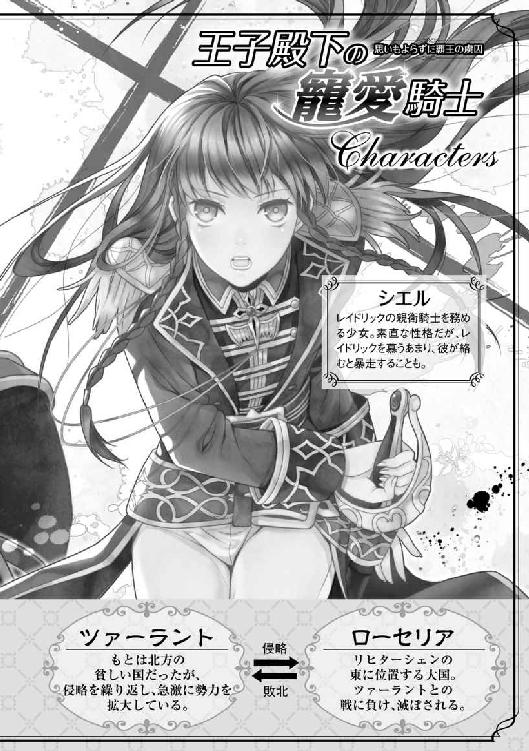

| 王子殿下の寵愛騎士 思いもよらずに覇王の虜囚 (一迅社文庫アイリス) | |
| 雨川 恵 | |
| (2014) | |

イラストレーション ◆ ユウノ
王子殿下の寵愛騎士 思いもよらずに覇王の虜囚
序 名誉のかけら
「どうしてですか！」
練兵場の石壁に、抗議の声が虚ろに響いた。シエルは拳を握り締め、並んだ列から一歩踏み出す――ともに並んでいる少年たちの中で、自分一人が名を呼ばれなかった。弾き出されたのだ、王家の騎士となるべき者の列の中から。
「どうしてもこうしてもあるか」
鬱陶しそうに答えたのは、騎士団の中でも地位のありそうな中年の男だった。王宮付きの騎士の制服を身につけた男は、新たに国王から剣を賜るにふさわしい若者を選び出す任を負っている。即ち、王国騎士以上の位を持つ家の出身で、壮健な身体と王国に対する忠誠心を持つ、武芸に秀でた者。
今、この場に並ぶのは、王国中から集った者の中でも、とりわけ優れた能力を認められて選ばれた若者ばかりだった。ここまでくれば、あとは形式的な閲兵だけだと聞いていたのに、どうして今になって撥ねられるのか。
「おまえのような者を、国王陛下の騎士になどと言えるものか！」
「理由をお聞かせください！ わたしは、ここにいる誰もと同様、王国と陛下にお仕えする意志と能力を示したはずです」
試験の結果が、他の少年に劣っていたはずはない。ここにいる少年たちの半数には摸擬試合で勝ったし、勝てなかった残りの半数に対しても、無様な負け方はしなかった。物心ついた頃から、剣を振って訓練してきたのだ。試合という形式の中では一歩及ばなくても、自分の能力が通用しないとは欠片も思わない。
しかし、選考官の騎士は露骨に顔をしかめると、唾棄するように言い捨てる。
「そんなことが何になる！ ――女が、こんなところへ何しに来た」
「国王陛下の騎士となるためです！」
列に並ぶ少年たちの幾人かが、ぎょっとしたようにこちらに目を向ける気配を感じたが、きっぱりと無視して、シエルは間髪容れずに答える。茶色の髪を短く刈った、ひょろ長い体型の彼女は、十三歳の今なら、同世代の少年たちとたいして見た目に違いはない。見た目にも能力にも違いがないのなら、男だとか女だとか、どうだっていいことではないか？
「馬鹿を言え。とっとと家に帰れ」
「できません。わたしが騎士にならなければ、戻る家はありません」
家長である父が他界したのは、四か月前のことだ。シエルのローヴァイン家は代々騎士の家系で、父も二度、王の戦に馳せ参じたことがあると言う。戦争で怪我を負ってからは、遠い先祖が王より与えられた小さな領地から一歩も出ることはなかったが、常に一族の使命を忘れない人だった。
問題は、この領地が『騎士である』ローヴァイン家に与えられているということだ。騎士の位を授けられていた父が亡くなった以上、それを継ぐ者がいなければ領地は再び国王に戻され、ローヴァイン家は住処を失う。父の子はシエル一人だけだから、彼女が騎士とならない限り、母と、家に長く仕えてくれている者たちの生活を守ることはできない。
「そんなこと、こちらの知ったことか。帰って、おまえが婿でも取れ」
「我が家の地所のことなどで、貴い使命をお持ちの国王陛下の騎士様を悩ませるわけには参りません。また、我が家の地所のような些細なものまで手に入れたがるような貪欲な者があれば、それは到底、王国の騎士にふさわしいとは申せません。そのような者を探さずとも、わたしは騎士となるために育てられてきたのです！」
「屁理屈を。女など、騎士になれるわけがない！」
「何故ですか！ わたしは王国騎士の子です。王国騎士となるための資格は、それだけだと聞いています」
「女では駄目だなんて、当たり前のことだろうが。わざわざ言う必要もない」
「どうして、女では駄目なのですか。今のところ、わたしは他の皆と同じように働くことができます。もし、わたしがよく務めることができなければ、そのときはどのような罰でもお与えください。でも」
ここで追い返されるなんて納得できない。彼女はまだ、何も失敗していないのだ。女に生まれてきたということ以外は、何一つ。
男と女の身体の間に、どうあっても埋めることのできない力の差があることは知っている。それは圧倒的な差異には違いないが、しかし決定的ではないとシエルは思っている。力の強い者が、必ず勝つというわけではない。たとえ何かに不足があっても、知恵と覚悟と鍛錬で、必ず目的を達成できるはずだ。このリヒターシェン王国のような小国が、大陸の中で何百年も存続してこられたのがいい例ではないか。弱くても、力が足りなくても、それでも王国騎士はこの国を守り続けてきたのだ。
「おまえは勘違いをしている」
だが、必死で言いかけるシエルの言葉を遮って、騎士は冷たく告げる。
「私がおまえを騎士に叙任するわけではないのだぞ。決めるのは国王陛下だ。そして陛下は、絶対におまえを望まれんだろう」
「それは、実際にお目にかかってみないと解らないではありませんか。わたしはまだ、陛下にお会いしたことも......」
「いいや解るとも。――女では、どうやっても背が足りんからな」
「......は？」
「閲兵の際、騎士を整列させたときに、一人だけ小さくてはみっともないだろうが。陛下は、見目がよくないことを甚だお厭いになられるからな。おまえを置いておくくらいなら、大きさのちょうどいい案山子をお選びになるだろうよ」
「............」
これには、さすがのシエルも呆気に取られて、一瞬言葉を失った。目の前の騎士が冗談を言っているのかどうか、判断がつかなかったからだ。王国騎士を選ぶ基準は、剣の腕でも忠誠心でもなく......身長？ 並べてみたときに、恰好が良くなければならない？
まさか、とシエルは相手を見やる。しかし騎士の表情には、洒落めいたところは少しもなかった。彼女が黙った機会を逃さず、嘲るように付け足した。
「そんなことも知らなかったのか。まったく、どこの田舎騎士の出だ。いや、それも疑わしいな......娘にまともな躾もしないとは、おまえの父親は頭がおかしかったのか？ さもなきゃ、とんでもない嘘つきだ。農民風情が剣を振り回したところで、名誉ある王国騎士になどなれるものか」
最後は揶揄する言い方で、騎士は辺りを見回した。釣られて、少年たちの幾人かが笑い声を立てる。シエルは、かっと頭に血が上るのを感じた。父が嘘つきだと――美々しい恰好で、国王の前に整列するだけが能だと白状したこの男が、父の名誉を傷つけるとは！
「騎士殿、その発言は取り消してください。――父は、陛下の御為に戦場へ赴いた、忠節なる王国騎士です！」
「女がこの私に意見するか。文句があるなら去れ！」
「父の名誉を回復するまで、退くことはできません！」
シエルは、上着の内側に手を突っ込んだ。家を出てくるとき、特に大切に持ってきたものだ。金属製の小さなメダルは、父が負傷のために一線を退いたとき、国王陛下より賜ったという名誉の証だ。生前の父は、これをひどく大事にしていた。ことあるごとにシエルに見せて、国王陛下に近しくお言葉をいただいたことを、何度でも話して聞かせてくれたものだった。
シエルが手を突き出すと、騎士は一瞬ぎくっとしたようだ。彼女が何をやらかすつもりか、目を眇めて見ていたが、やがて彼女が誇らしげに手にしているものの正体を知ると、一転して笑い出した。
「何だ、何を持ち出すかと思えば、そんなものか！」
「そんなもの!?」
「そいつは『参加記念メダル』じゃないか。まあ、一応はアイレート名誉勲章なんて名前があるが、誰もそんな呼び方する者はおらん。それはな、従軍して負傷した兵なら誰でももらえる代物さ。それがどんな間抜けな理由であろうともな」
「............」
「なるほど、おまえの父親は確かに王国騎士だったかもしれん。だがろくな武功も立てず、こんなものが拠り所の田舎者に過ぎん。この王宮に集めた者たちはな、数ある王国騎士の中でも、特に陛下の御身をお守りする重要な任に就く資格のある者だ。前線に出て、ただ斬られるのが役目の雑兵とは違う」
「............」
身体の芯が震えるような感覚に、シエルは息もできなかった。身体中を、恐ろしい勢いで血が巡るのが解る。叫び出したい衝動に駆られたが、声は出なかった。拳を握り締めたいのに、指先は自分の意志でなく震えるだけで動かない。
強張った彼女の手から、騎士は無造作にメダルを取り上げた。シエルが止める間もなく、ぴんと親指でそれを弾く。固く澄んだ音がして、メダルは砂埃の積もった石床に転がり落ちた。
「！」
「帰れ。ここはおまえの来るところではない」
メダルを追って床に這いつくばったシエルの頭上から、嘲る声が降ってくる。メダルはどこへ行ったのだろう、手探りするが解らない――視界は滲んでぼやけ、石床の線すら追うことができない。
瞼の裏から溢れそうな雫を堰き止めるように、瞳を閉じる。ここで涙など落とすことは、絶対にできない。でも......でも......。
「――揃ったのか？」
不意に、別の声がした。聞き慣れない、男の声。石床に響く足音が近付いてくる気配に、シエルは反射的に顔を上げる。声のする方に顔を向け......そして、息を呑んでその場で固まった。
まず目に入ったのは、金色だ。石造りの薄暗い練兵場に差し込む微かな日の光にすら輝く、清らかな金の髪。手足の長い、すらりとした身体に、寸分の狂いもない上等な仕立ての服を身につけている。シエルよりも年上のようではあるが、まだ大人ではない。他の少年たちと同じ――けれど他の少年たちとは明らかに違うと、一目で解る存在。
息を呑んだのは、シエルだけではなかった。彼女を蔑むように見下ろしていたはずの騎士が、途端に表情を強張らせると、威儀を正して敬礼する。
「王太子殿下！ 何ゆえ、こちらに......」
「王宮付きの騎士見習いの選考が終わったと聞いたんだ。彼らに、挨拶をしに」
「何と......恐れながら殿下、この者どもは、まだ準備が整っておりません。これから然るべき礼法を躾け、見苦しくなく姿を整えさせましてから、お目通りを願い出に参りますれば......」
「父上にはそうするといい。でも、私の考えはちょっと違うんだ。――これから彼らに労力と献身を期待する方の人間が、彼らに礼を尽くすのは当然のことじゃないか？」
そこまで言うと、金色の王子はちらりと、床に手をついたままのシエルを見た。怪訝そうに、傍らの騎士に問う。
「彼は何をしているんだ？」
「......何でもございません。その者は、我々とは関係ない。選ばれなかったのです」
「今、ここで？ どうして彼を落としたんだ」
「『彼』ではなかったからです――『彼女』は」
一瞬、きょとんと目を瞬いた王太子は、しかしすぐさま言葉の意味を理解して、シエルに驚きの目を向けた。陽光に照らされる新緑の色の瞳に、シエルはこれまでにない気まずさを覚える。そんなに、おかしいだろうか――これまでずっと、少年と変わらぬ外見は当たり前のものだったのに、どうして今は、それが落ち着かないような気になるのだろう。
「女でありながら、ここまで偽って潜り込んできたのです。一体、どんな手管を使ったのやら......」
「い、偽ってなどおりません」
喉の奥から、シエルは何とか言葉を絞り出したが、その声は自分の耳にも鋭くは聞こえなかった。嘘など一度もついていない、誰も彼女の性別を訊かなかっただけだ。誰も疑いもしないほど、彼女が少年たちに溶け込んで、同じだけの能力を持っていた証拠だと――けれどもう、そう主張する気力はなかった。主張して、一体どうなるというのだ。
――ろくな武功も立てず、こんなものが拠り所の田舎者に過ぎん。
――前線に出て、ただ斬られるのが役目の雑兵とは違う。
――娘にまともな躾もしないとは......。
父は、彼女に騎士の忠節を教えた。主の剣とも盾ともなり、その身を生命を懸けて守ること。それがひいては、人々と王国を守ることになる。主に仕えるということは、それだけの価値のあることだと。
けれど、本当にそうだろうか。父の魂を踏みにじり、泥で汚すだけの連中に、生命を懸けて仕えると、心から誓えるだろうか......。
「......これは」
ふと、呟く声がして、シエルははっと我に返る。気付けば、例の王子が何やら足下に目を留めて、ひょいと屈んだところだった。その指が何かを拾い上げたと見えた瞬間、シエルは思わず叫ぶ。
「触るな！」
父のメダル――汚れた床に放り投げられ、無残に打ち捨てられた父の名誉。これ以上、誰に弄ばれたくもない。貶められていいはずがない。
しかし取り返すべく手を上げかけたとき、再び王子と目が合って、シエルはさっと血の気が引くのを感じた。しまった、この人にこんな口を利いてはいけなかったのだ。罰せられるのだろうか。騎士になれないばかりか、牢に入れられたりしたら......。
「あ、す、すみません！ 申し訳......」
「これは、君が持ってきたもの？」
「......わたしの、父のものです」
彼女の謝罪を遮って問うた王子の声は、怒ってはいないようだったが、シエルは答えに詰まってしまう。ほんの少し前までならば、胸を張って答えられたはずなのに、今は何故かそうできなかった。この世で最も尊い宝と信じていたものは、実はありふれた石ころに過ぎなかったのかもしれないのだ。
だが次の瞬間、俯きかけた彼女の視界の端で何かが動いた。砂土に汚れた床が、ざらりとした音を立てる。シエルが顔を上げるのと、王子の視線の位置が同じ高さにくるのはほぼ同時だった――上等な衣装が砂に汚れるのも構わず、彼はその場に膝をついたのだ。
「！」
「これは、こんな風に汚されていいものじゃない。......もし、君の父上の名誉を傷つけるようなことがあったなら、私から謝らせてほしい。申し訳なかった」
王子が取り出した、やはり染み一つないハンカチが、メダルの汚れを丁寧に拭っていく。布地に無残な土汚れが残る様を見ながら、シエルは胸の奥に、これまで感じたことのない感覚を覚える。痛いような、苦しいような。たまらなく熱くて、骨の髄から震える。
「ああ、よかった、傷はついてないみたいだ」
やがてそう言って、彼はメダルを差し出した。言葉も発せないまま、引き寄せられるように受け取ったシエルに、王子は微かに笑みを浮かべる。が、すぐに真剣な顔に戻ると、じっと彼女を見つめた。床に座り込んだままの彼女と、同じ高さに見えるその瞳。彼女の前に跪いたまま、やがて胸に手を当てて一礼する――まるで、高貴なものに付き従う騎士のように。
「君の父上の名誉に敬意を。どうか、お伝えしてくれ――我がリヒターシェンは、彼の勇気と払った犠牲を、決して忘れることはないと」
鮮やかな、けれど深く澄んだ新緑色の瞳を真っ直ぐに見つめ返した瞬間、シエルは自分の運命を確信した。そうだ、きっとこの一瞬のために、彼女はここへ来たのだ。この一瞬のためだけに、これまで生きてきたのだ。
この方に、会うために。国でも、王でも、他の何でもなく――彼女の持てる何もかもを捧げて、彼に誓うためだけに。
一章 はじまりは人質生活
「......様！ お待ちください！」
廊下の向こうから、衛兵の制止の声が聞こえてきたとき、シエルは国王の私室の前にいた。何事かと腰の剣に手を伸ばしかけたが、続いて聞こえてきた喚き声でおおよその事情を悟り、壁際で威儀を正す。知らぬ人間の声ではない。
「うるさい！ おまえ、こんなところに突っ立ってるだけの分際で、このおれに意見するのか」
「陛下はただいま、重要なお話し中で......」
「おれの話が、重要じゃないって言いたいのか！ ふざけるな、おれを誰だと思ってる。大臣だろうが何だろうが、とっとと出て行かせて......」
しかし近付いてきた声は、廊下の角を曲がって目的地の様子を見た途端に途切れる。姿を現した声の主の視線が、真っ直ぐこちらを捉えているのを知って、シエルは礼儀正しく敬礼した――騎士として貴人に取るべき、最低限度の丁寧さで。
彼女の姿を認めた相手は、一瞬、たじろいだように足を止めたが、すぐに思い直したらしい。取り巻きの親衛騎士を確かめるように見回すと、偉ぶった表情でずかずかと進んできた。
「......おまえか。おい、ここで何してる」
「我が主の命に従い、待機しております、リーベルト王子殿下」
そんなことをいちいち聞かなければ解らないわけでもないだろうに、と思いながらシエルは答えた。とりあえず、これで彼も、この扉の中に誰がいるのかは理解したはずだ。大臣でも追い払えると豪語する彼でも、決して追い返すことのできない相手。
王子は憎々しげに扉を睨みながら、小さく舌打ちを漏らす。
「ちっ......。レイドリックの奴、父上に余計なことを吹き込むつもりじゃないだろうな。そんなことしてみろ、ただじゃ......」
「レイドリック『様』です」
怨嗟の呟きを断ち切って、シエルはすかさず訂正しておいた。たとえ世迷言といえど、彼女の主の名がそうも軽々しく呼び捨てにされるのを放っておけるものか。
「王太子殿下の御名に対して不敬です。『レイドリック様』か、もしくは敬称でお呼びください」
「何だと」
「あ、でもリーベルト殿下なら、『お兄様』でもいいんですよね......うわーいいですねそれ！」
「何がだ！」
だが実際のところ、主がそう呼ばれているところをシエルは見たことがない。現国王の血を継ぐ子は、レイドリックの他は皆、後妻である現王妃の生んだ子供たちだ。母親違いのせいか、主とその弟妹たちの間に、世の兄弟らしい交流はほとんどない。
「何が兄だ、ただ先に生まれたってだけじゃないか。――女なんかに身を守らせるような腰抜けを兄だなんて、恥ずかしくて言えるものか」
一瞬、虚をつかれた様を見せたリーベルトだったが、すぐに薄ら笑いを浮かべてそんなことを言ってくる。半ば反射的に、剣の柄に手を伸ばしかけたシエルは、しかしすぐさまその衝動を抑え込んだ。いつものことだ......他に芸はないのかと思うほど、顔を合わせるたびに、この王子は同じことばかり言ってくる。
「女のくせに、恰好ばかり男の真似をしても無駄なんだぞ。王国騎士になれなかったからって、あいつに取り入るなんて、まったくうまくやったもんだ」
男の真似をしているわけではない。王国騎士、あるいは王族個人に仕える親衛騎士の制服だから着ているだけだ。制服に女性用という概念がなかったからといって、シエルのせいではないし、着ていて特に不都合がない以上、女性用でなければならないとも思わない。
「大体、その中途半端な姿は何だ。女を捨てるなら、そんな髪なんか刈ってしまえよ」
ただこの意見だけは、シエル自身も少しやり過ごし難いものを感じる。五年前、王国騎士となるべくはじめて王城を訪れたときは、少年と見紛うほどに短くしていた赤みがかった茶色の髪は、今では背中まで伸びている。彼女の主が、そうした方がいいと言うからだ。
――女の子だと示すのは、悪い考えじゃないよ。そうすれば、誰の話を聞くべきか解る。
シエルを女と見て侮る人間の言葉は、警戒する必要がない。彼らは、自分が油断しているということを相手に喧伝するほど軽率なのだ。彼女を甘く見て困るのは相手の方なのだから、腹を立てることはない、と諭した主を思い出し、シエルはしみじみと深い充足感を覚えた。敬愛する聡明な主の言うことに、間違いなどあるはずがないのだ。
しかし、そう思ってついにっこりしてしまったのが悪かったらしい。
「おい、聞いてるのか！」
思うような反応が得られないのに腹を立てたのか、リーベルトは突然、荒々しく動いた。手を伸ばして、シエルの胸ぐらをぐいと掴み上げる。
「いい気になるなよ、女が！ あの堅物をたらし込んだくらいで」
憎々しげに言われて、シエルは目を瞬いた。全体的に、何を言われているのか解らない。
「たらし込む？」
「とぼけるな。親衛騎士なんて体のいい口実まで作って女を側に置くなんて、理由は解り切ったことじゃないか」
言いながら、王子は彼女を上から下まで見下ろした。ふと、その目が一瞬前とは少し違う色を帯びていることに、シエルは気付く。ぎらつく目にある光は、怒りのためだけではない。身体の形をなぞるような視線に本能的な嫌悪感を覚え、わずかに顔をしかめた彼女に気付いたかどうか、リーベルトは意味ありげな口調で言う。
「ふん、貧相な身体だ――だが、女遊びの一つもできない王太子殿下を誑かすくらいなら、こんなものでも十分か。言えよ、どうやった？ まさか、あいつから手を出したわけじゃないだろう。おまえ、押し倒しでもしたか」
彼の言う『王太子殿下』という言葉は、敬意のこもったものとは言い難かったが、しかし今のシエルにはそれに抗議する余裕はなかった。目を見開いて、息を呑む。
「......リーベルト殿下。その、『押し倒す』とは......」
「何だ、文句があるのか。それとも、やってみせてくれると」
「――こういうことですか？」
皆まで言わないうちに、胸ぐらを掴む王子の腕を掴む。同時に、足を払って床に倒した。リーベルトの連れている騎士たちが、主に加えられた攻撃に素早く剣を抜き放つが、シエルが目的を達する方が早い。流れるような体術で王子を床に組み敷くと、そこで動きを止めて、呆気に取られている彼を覗き込む。
「本当だ！ 結構簡単にできちゃいますね！ これはまずいです」
「なっ......何するんだよ！ どういうつもりだ！」
「つまり、たとえ女性であっても、レイドリック様に近付くことができれば、こういうことだって可能ってことですよね。今まで考えてもみませんでした。警護において、これは非常に危険です。ご指摘ありがとうございます、リーベルト殿下。さすが、女遊びの激しい方は違いますね！」
「馬鹿にしてんのか！」
「褒めてるんですよ。『女遊びの一つもできない』って、殿下には悪口なんでしょう？ わたしはそうは思いませんけど、その辺は人それぞれですし、だから堂々と女の子と遊んでいればいいと思います。でも無理矢理はよくないですからね。紳士的に頑張って！」
「この......！」
「まあそんなことはどうでもいいので、先を続けましょう。さあ殿下、この先はどうすればいいですか？ わたし、襲う役をするので、ちょっと抵抗なさってみてください――できるものなら」
「............」
真剣に相手を見つめて促すが、しかし反応は返ってこなかった。床の上のリーベルトは顔を引きつらせて、彼女を見上げているばかりだ。何をぐずぐずしているのか、とシエルは苛立って彼を睨んだ。
「早くしてください。訓練になりません」
「く、訓練って......何の訓練だよこれ」
「何ってもちろん、レイドリック様を押し倒すための......あ、いや、違います！ わたしがじゃなくて、そういう不埒な輩を退けるために！ ええ、わたしは全然そんなことしたいわけじゃないんですけど仕方なく！ 仕方なくですから！」
「変な言い訳するな！ そっちの方が怖い！」
「怖くありません！ わたしは主に忠誠を誓った親衛騎士です！ こ、これはあくまで敵を知るためにやっているだけであって、決してわたし自身があの方に狼藉を働きたいとか、自由を奪って抑えつけたいとか思っているわけでは」
「怖えよ！」
ばたばたと揉み合う二人の周りで、王子の親衛騎士たちは、抜いた剣のやり場に困っているようだ。主の危機......かもしれないが、どう見ても緊張感が足りない。
しかし次の瞬間、彼らは一様に素早く剣を収め、姿勢を正す。閉ざされていた国王の私室の扉が、音もなく開いたからだ。
「――シエル。何をしているんだ？」
床の上で取っ組みあっていたシエルは、不覚にもそれに気付くのが少し遅れた。不意に頭上から聞こえてきた声に、彼女ははっとする。目の前のリーベルトのことなど放り出して、勢いよく跳ね起きた。――この声のためになら、何もかも放り出して構わない。
「レイドリック様！」
果たして、それは確かに彼女の剣の主だった。窓から差し込む柔らかな光が、金の髪に落ちかかって輝かせている。聡明さと優美さを兼ね備えた秀麗な顔立ち、均整の取れた身体に寸分の乱れもない装いをして立つ姿には、貴人と言うにふさわしい気品と威厳があった。
決して外見だけを敬愛しているわけではないが、それでも彼の姿を見るたびに、シエルは誇らしい気持ちになる。誰だって彼を一目見れば、その足下に平伏したくなるに違いない。少なくとも、シエルはそうだ。もう何年も、毎日顔を合わせていても、見飽きるということがない――当たり前だ、毎日昇るからといって、太陽に飽きるなどと言う者がいるだろうか。
その、彼女の太陽であるところの、リヒターシェン王国王太子レイドリックは、しかし今はおよそ輝きとは縁遠い表情をしていた。明るい緑の瞳が、怪訝そうに向けられるのに気付いて、シエルは急いで敬礼する。
「失礼しました。ええと、警備上の問題を解決しておりました！」
「警備上の問題？」
「嘘つけこの暴力女！」
レイドリックが首を傾げるのと、シエルの背後から非難の声が上がるのはほぼ同時だ。突然解放されたリーベルトは、ようやく身体を起こしてシエルに怒鳴りかけたが、しかしそこでレイドリックと目が合うと、苦いものでも呑み込むように口を閉ざした。
静まり返った廊下に、冷やかな空気が流れる。先に口を開いたのは、レイドリックの方だ。
「リーベルト。陛下に何か用事が？」
「あんたには関係ない」
唸るように答える声には、しかしどこか慄くような気配が混じっている。床に座り込んでいるのが気まずかったのか、リーベルトは慌てて立ち上がると、異母兄を睨んで噛みつくように言い返した。
「いちいち、あんたに報告しなきゃならない義務はないだろう。それとも、息子が父親に会うのにさえ、あんたの許可が要るのか、王太子殿下？」
「もちろん、必要ない。ただ一応、忠告はしておいた方がいいと思って」
「何だよ、説教か」
「今、陛下と少し、込み入った話をしてきたところなんだ。この上更に面倒事を持ち込まれたら、きっとご機嫌麗しくとはいかないだろうね。もし君が、先日こしらえたベルジェンツ伯からの借金の件を切り出すつもりなら、またの機会にした方がいいだろう」
「............」
レイドリックはこともなげに言ったが、言われたリーベルトは明らかに動揺した様子だ。強張った表情で絶句した彼を見て、シエルも大体の事情を察した。派手好みで遊興三昧の第二王子は、賭博や浪費でしばしば借金を作っては、父王に泣きついているのだ。
「もう一つ忠告を付け加えるなら、それよりも、先に交友関係を整理した方がいい。君は遊びのつもりだろうが、相手はそうじゃない。先に手を打たなければ、間もなく王妃陛下のお耳に入るだろう」
「なっ......」
リーベルトの顔が赤く染まったのは、怒りのためか羞恥のためか。常には息子の放蕩を庇うばかりで、きつく咎めもしない王妃だが、しかしことが異性との親密な『交友関係』となれば、烈火の如く怒り狂うに違いない。かつては自身が王の秘密の愛人であり、レイドリックの母である先の王妃が亡くなってから後妻としてその地位に収まった彼女が、息子の異性関係の醜聞に過剰なまでに敏感というのは、シエルにとってはよく理解できない話ではあるが、ともあれ彼女も、それが王城の法則であることは知っている。
「おまえっ、何でそんなこと......よくも......人の身辺を嗅ぎ回りやがって、下衆が！」
今やリーベルトの顔は、憤怒のあまり赤黒く変わっている。激情に駆られて主に掴みかかりかねないと、シエルは密かに身構えたが、レイドリックは平然としたものだった。逆に微笑みさえ浮かべて応じる。
「それはお互い様だろう。君だって私に負けず劣らず、こちらの動向を知っているはずだよ。それが君を楽しませなかったとしても、私のせいじゃない」
「............」
「とにかく、忠告はしたよ。あとは好きにしたらいい。――シエル、行こう」
はいっ、と勢いよく答えて、シエルは主に従った。歩きながらも、警戒は解かない。リーベルト王子の親衛騎士はこの場に五人――もし王子が血迷って、こちらに斬りかかる号令でも下すようなことがあれば、レイドリックの身だけは守らなくては。
「いい気になるなよ――覚えてろ」
すれ違いざま、陰惨な響きが耳に届く。しかしレイドリックは足を止めなかった。シエルもまた彼に従い、主従は振り返ることなくその場を後にした。
「それで――本当は、何を話していたの？」
少しして、先に沈黙を破ったのは主の方だった。唐突な問い掛けに、シエルは目を瞬く。
「？ 何ですか？」
「さっき、リーベルトと取っ組み合っていたじゃないか。......何か、嫌なことを言われた？」
レイドリックの穏やかな声音に、気遣わしげな気配があるのを聞き取って、シエルは彼が何を考えているのか悟った。いいえ、と急いで首を横に振る。
「特に何も。それに、あれは取っ組み合って喧嘩をしていたわけではありません。ちょっとした訓練です」
「訓練？ 何の」
「レイドリック様を押し......お守りする訓練です」
まさか押し倒すとは言えなかった。親衛騎士として側に仕えるようになってから五年、レイドリックが他人の言葉に気を悪くするところなど見たことがないが......自分の親衛騎士に、女性に押し倒される事態を想定されていると知ったら、微妙な気持ちになるかもしれない。
――まあ、レイドリック様に限って、そんなことはないと思うけど......。
しかし、災厄は必ずしも本人に責任があるものばかりとは限らない。レイドリック自身の品行方正さは疑う余地もないが、だからこそ引きつけられるような者もいるはずだ。少なくともシエルなら、リーベルトなんかより断然......。
「シエル」
「！ ち、違います違います！ すみません！ ただ試してみただけで、決して疾しい気持ちナドデハ」
「......すまない」
想像とはいえ、不敬極まりない方向へ行きそうな思考を慌てて弁明しかけたシエルだが、しかし主はそれを咎めているわけではないらしい。生真面目に謝られて、シエルは一瞬何のことか解らなかったが、しかしすぐにむっとして言い返す。
「レイドリック様。もしそれがリーベルト殿下についてのことなら、そんなことを仰る必要はありません。あなたは何も悪くないのに！」
けれどそう言いながらも、シエルは自分の抗議が無駄に終わることを知っていた。彼の答えは、いつも決まっている。
「それでも、私の弟だから。見て見ぬふりというわけにはいかない」
「そうやって甘やかすから、いつまでもああなんですよ。また借金なんか作ったんですね。もういっそその辺で働かせて、自力で返させたらいいんです。少しは身に沁みないと、きっとまた同じことです」
「それは、私もそう思うよ。でも......彼は、陛下のお気に入りだから」
いくらレイドリックが異母弟の不品行を改めさせようとしたところで、それを助長する者が側についているのでは意味がない。出来の悪い子ほど可愛い親心なのか何なのか、彼らの父親である国王は、殊更リーベルトに甘いようにシエルには思える。一応、形ばかりの説教はするらしいが、最後には何だかんだで息子の不始末を片付けてやってしまう。
既にこの件では、レイドリックは何度となく父と弟を諫めているのだが、結局彼にできたのは、リーベルトの散財が王国の予算に影響しないよう切り離すことだけだった。極めて当然で良識的なこの措置が、しかし王家の家庭内軋轢をより深め、レイドリックが元々不仲だったリーベルトの恨みを更に買ったのは間違いない。
シエルは、密かに隣を歩く主の様子を窺う。整った横顔には何の表情も浮かんでおらず、感情的な色はどこにも見えなかったが、しかし彼女にはどこか沈んだ気配が察せられた。「陛下」と口にした彼の声音には、落胆の響きがなかったか。
「あの......レイドリック様の方は、如何でしたか」
「うん？」
「国王陛下と、よくお話しになれましたか？」
「ああ......うん、まあね。......聞き入れてはくださらなかったが」
「............。そうですか......」
あくまでも淡々とレイドリックは言ったが、しかし彼がどれだけそれを悔しく思っているか、シエルにはよく解った。こんなことは、滅多にないことなのだ――彼が、一度は大臣たちの居並ぶ前で下された決定を、国王を説得することで強制的に覆そうと図ることは。
「陛下のお考えを、変えることはできなかった。我が国は、ローセリアに援軍を送ると。――これ以上は引き延ばせない」
ローセリア王国は、リヒターシェンの東にある国で、大陸西方地域の国々の中では盟主的な存在だ。かつて大陸を統一した古王国時代に成立したリヒターシェンには、歴史の点では及ばないものの、国力ではむしろ圧倒する大国である。昔は頻々といざこざが絶えなかった両国だが、ここ数十年は互いを利する友好国として関係が続いている。
そのローセリアが不穏な情勢となってきたのは、北方の国ツァーラントに目を付けられたからだ。元々は大陸の北端にあった辺境の貧しい国に過ぎなかったのが、近年、周辺国との争いに次々と勝利し領土を拡大している、現在大陸で最も注目され、恐れられている国である。特に、ツァーラントの現国王イスラが即位してからの戦果は、めざましいものがある。
そんな気鋭の新興国に狙われて、ローセリアが慌てふためいたのも無理はない。大陸の西方では、長く激しい戦乱を経験してはいない。国境を巡る小競り合いは多々あれど、他国の都を目指して進軍するような戦いは、もう何十年も起きていなかったのだ。ローセリアは近隣諸国にツァーラントに対抗する援軍を要請し、そしてリヒターシェンはそれを受けて派兵を決定したのだった。
最後まで、それに反対し続けたのがレイドリックだ。
「......レイドリック様。どうして、ローセリアと協力してはいけないのですか？」
主の意向は理解しているが、それでも不思議でシエルは尋ねた。今はこの国が当事者ではないとはいえ、ツァーラントの侵攻は他人事ではないのだ。もしローセリアがツァーラントを防ぎきれなければ、次はリヒターシェンにも同じ災厄が降りかかる。そうなれば、この小国には一国で立ち向かう術はない。ならば今、ローセリアと手を組んで、ともに敵に当たる方がいいのではないか。
「ローセリアと協力してはならないとは言っていないよ。一緒になって戦ってはいけないと言っているんだ」
「何故ですか？」
「負けるからだ」
低い、きっぱりとした声で、レイドリックは断言した。
「本当は、ローセリアだって戦いを選ぶべきじゃなかった。でも、それは彼らの決定で、こちらが口を出せるものじゃない。我々は、この国を守る方策を考えることしかできない」
「でも......いずれ、ツァーラントは我が国にも攻めてくるのではないですか？ そうなれば、リヒターシェンだけでは対抗できません」
「そうさ、戦えば必ず負ける。必ず失敗すると解っている道は、選ぶべきではないんだ」
「で、でも、どんなことでも、『必ず』なんてことはありません。我が軍の兵士たちは、生命を惜しまず戦う覚悟はできています」
はじめて自分の手で剣を取ったときから、どんな兵士だって皆そうだ。シエルにしても、もし明日戦場へ行かされることになれば、決して臆病な振舞いなどせず、祖国のために武勲を得るべく全力を尽くすと決めている。もっとも、シエルが生命を懸けるのは国のためではなく、剣を捧げたレイドリックのためだけだが、もし彼が一言そうしろと命じるなら、戦場のどこででも死のう。
しかし、『必ず負ける』などと言われるのは、そうした覚悟を一顧だにされていないようで、何となく悲しい。複雑な思いを滲ませるシエルに気付いたのか、レイドリックは彼女を振り向くと、微かな笑みを見せた。
「君たちが、そう思ってくれていることは知っているよ。君たちに欠けたところがあるとも、頼むに足りないとも思っていない。そうではないけれど......」
けれどその笑みは、その裏にある内心を押し隠すものに違いない。この五年、彼の側にいる間に、シエルにはだんだんと解ってきた。いつも穏和で、落ち着いた態度を失わない主だが、それはそう見えるだけだ。ただ、どんなに怒鳴りたくても喚きたくても、じっと黙って素知らぬ顔ができるのだ。
「......やっぱり、負けるとお考えなんですね」
「ツァーラントの兵は精強だ。これまで併合した国々の兵で嵩を増しているだけ、なんて見方もあるようだけど、それでも中核を担うツァーラント正規軍の強さに疑いはない。それにイスラ王ともあろう方が、自軍に編入した兵を未だに掌握しきれていないなんてことはないだろう。ローセリアは西方への入口だからね。ツァーラントからわざわざ征旅に臨むからには、絶対に手に入れるつもりで、満を持して攻め寄せてくるはずだよ。......彼に対抗できる才覚は、今のところ、こちら側には考えつかないな」
その上、援軍と言えば聞こえはいいが、周辺国から慌てて借り入れて兵の頭数を揃えたローセリアに、彼らをうまく扱えるとも思えない。指揮命令系統が一通りでも機能すれば上出来、悪くすれば内部で主導権の取り合いになって、敵と戦うどころではなくなる。
「これは、私たちの失策だ。遅かれ早かれ、ツァーラントが脅威になることは解っていたんだ。こんな切羽詰まった同盟なんかじゃなくて、もっと時間をかけて軍を訓練させていたら、あるいは戦うこともできたかもしれない。......でも、彼がこんなに早く北方を取ってしまうなんて思わなかった」
「ツァーラントの国王......イスラ王、って言いましたっけ？ そんなにすごい王様なんですか？」
「集めた情報が正しければ、あの方のような人間を不世出の天才と言うんだろう。少なくとも、軍事においては」
主の答えに、シエルは少し驚いて彼を見上げた。ほとんど手放しの称賛とも言える言葉にももちろん驚いたが、何よりも意外だったのは、それを告げた彼の声音だ。好意、尊敬、もしかしたら、憧憬でもあったかもしれない――リヒターシェンを脅かす敵に対するものとしては、随分と不似合いな響き。
彼が誰かのことをこんな風に語るのは、はじめて聞いた。レイドリックにこう言わしめる異国の王に、シエルは興味を抱いたが、続く彼の言葉を聞けば、それ以上の質問はできなくなった。
「だから、彼と戦うべきじゃない。――大勢の人間を、無為に死なせることになる」
「レイドリック様」
「......いつかは、そうしなくてはならないときだってくるだろう。でも、それは今じゃない。こんな......」
それきり言葉を継ぐことなく、レイドリックは唇を引き結んで歩き続ける。その横顔の険しさに、シエルは胸を突かれた。この人はどこまでも、このリヒターシェンの主なのだ――国王でも、他の誰でもなく、彼こそが真にこの国を支えている。捧げられる生命と忠誠の価値を理解してくれる。
レイドリックがいる限り、リヒターシェンの兵の死は無為ではない。彼はその全ての犠牲に、必ずや報いてくれるはずだから。
「......今度の戦い、勝てるといいですね」
どうやって、彼に伝えたらいいのだろう。シエルは懸命に言葉を探した。
「わたしは、やってみるまで解らないと思います。でも、もし......もし万が一、レイドリック様の仰る通り負けたとしても、だからって終わりじゃないですよね。終わらなければ、まだ生きられる」
「シエル」
「兵士たちだって――私たちだって、ただの駒ではないんです。ただ命じられたから死ぬのではなくて......皆、望んでいるし、信じているんです。たとえ途中で何があっても......たとえ死んでしまったとしても、最終的に望みが叶うなら、それも決して無駄ではないって――この国に暮らす大事な人たちが傷つけられることなく、幸せに暮らせるなら、生命を懸けた意味があるって」
「............」
「だからレイドリック様、どうか仰ってください。何があっても――決して、ここで終わりではないって」
そうであれば、救われる。たとえ、懸けた生命そのものを救うことはできなくても。
レイドリックは足を止めて、じっと彼女を見つめた。一瞬の考え込むような表情のあと、やがてその顔に柔らかい笑みが戻る。
「そうだ、シエル。まだ終わりじゃない。――そう簡単に、終わらせるわけにはいかないな」
「はい」
「まだ、誰も死んでいないんだ。何とか、できる限りのことをしよう」
再び歩き出した主に従いながら、シエルは少しほっとした。たとえ気休めにしかならなかったとしても、レイドリックが笑ってくれれば嬉しい。いつものように、いつもの笑顔でいてくれれば。
――本当は、その笑顔に押し隠された真情までも、救えたならよかったのだけれど。
しかし、その微かな希望も、あえなく潰えることになる。
ローセリアが敗北の末に降伏し、ツァーラント軍が王都アノン＝デューに入ったという報がもたらされたのは、それから一月ほど後のことだった。
＊
そして更にその一月後、リヒターシェンの王城も、俄かに騒がしくなった。
「ツァーラントから、使者ですか!?」
主からその理由を聞いたとき、シエルは驚くとともに、全身に緊張とも興奮ともつかない衝撃が走るのを感じた。では、今度はこのリヒターシェンの番なのか。ついに、ツァーラントと戦うことになるのだ。
「いいや、そうじゃない」
しかしレイドリックは、あっさりそう言ってシエルの予想を否定した。
「戦争にはならないよ。こちらに勝ち目がないのは解り切っているし、それに向こうも、今はローセリアを取ったばかりで、動きたくはないだろうからね。あれは和平の使者だ」
「和平、ですか」
思いがけない単語に、シエルは目を瞬いた。ツァーラントという国は凶悪な好戦主義で、他国を攻め滅ぼさずにはおかないものだとばかり思っていたのだ。
「よかった！ 戦わずに済むのなら、それに越したことはないですし」
敵が一方的に侵略してきたならば、戦うことを恐れはしないが、しかし戦いを避けられるものならそうした方がいいに違いない。リヒターシェンは他国を侵略したいわけではないのだ。ツァーラントがこれ以上の侵攻を望まないというなら、受け入れない理由はない。
「そうだね。この話は受けるべきだ――今度こそは、何があっても」
しかしそう言ったレイドリックは、ここ数日、ほとんど王城の会議の間に詰めっ放しになっている。国王の御前に、王国の主だった重臣たちが集められ、朝から晩まで喧々諤々と何やら話し合っているらしい。シエルには不思議でならない。ツァーラントからの和平を受け入れるか否か、なんて、はじめから答えは解り切っているではないか。
「......うーん」
今日も、会議の間の扉の前で主を待ちながら、シエルは不満と疑惑のため息を漏らした。レイドリックには、いつ会議が終わるか解らないから好きに過ごしていていいと許しを受けているが、彼の側を離れてどこかへ行くつもりは毛頭ない。
――一体、何だってこんなに時間がかかるんだろう？
普通に考えて、ツァーラントからの和平の申し出は、リヒターシェンにとっては望外の幸運だ。ローセリアの敗報の直後は、王城中が恐慌状態で、市井にも、国を脱出すべきではないかと言う人々による混乱が生じたくらいなのだ。もっとも深刻な混乱には発展せず、ローセリアに派遣された兵士たちが帰還するという知らせが公表されてからは、街も平穏を取り戻した。ツァーラントは特に条件を付けず、ローセリア以外の国から集まっていた兵を、それぞれの国へ帰らせたのだ。
それもまた、今はこれ以上、別の国と戦端を開くつもりがないとのツァーラント側の意志表示だと、レイドリックは言っていた。ならばこの和平の申し出だって、策略などではないだろう。一体何が問題なのか。
――レイドリック様は、何も仰ってなかったけど......。
ここ数日の、主の様子を思い返す。彼と話せるのは、会議の間と王太子の私室の間を往復する間だけだが、そのわずかな間で聞き出した限り、レイドリックはこの会議の紛糾をそれほど重く見てはいないようだった。「意外と時間がかかってるね」と彼は言ったものだ。「でも、そのうち皆、納得してくれると思うよ」とも。
レイドリックがそう言うのなら、そうなのだろう。けれど、何か気にかかる......。
――あ。
不意に、扉が開く気配がする。中から人が出てくるのを察して、シエルは急いで通路の端に寄り、敬礼の構えを取る。議場を真っ先に出てくるのは、国王と決まっているからだ。
しかし、このときはそうではなかった。
「レイドリック様！」
「――シエル？ ずっと、ここにいたの？ ......自由にしていてよかったのに」
扉の向こうから現れたのは、意外にも、彼女の主その人であった。レイドリックは彼女の姿を認めると、驚いたように目を見張った。......その驚きの表情に、どこか気まずそうな気配が過ぎったのは気のせいだろうか。
「どちらへおいでですか？ 御供します」
「ああ、いや、部屋に戻るだけだよ。もう、話は済んだから」
「！ 会議、終わったんですね」
思わず見つめた主の顔に、特に厳しい表情はないことを確認して、シエルはほっと胸を撫で下ろした。では、会議は彼の望み通りの結論を出したのだ――ツァーラントからの和平の申し出を受け入れると。
「うん。......それで、シエル、君に話がある」
だが、次いでレイドリックにそう言われて、シエルは少し面食らった。改まってそんなことを言われる心当たりなどない。一体何の話だろう。
それでも、はい、と応じたシエルに、レイドリックはすぐには答えなかった。ただ黙って、自室の方向へ足を向ける。ここでは話せないことらしいと察して、シエルも付き従って歩き出した。けれど......シエルに話す、他には聞かせたくない話とは、一体何だろう。
やがて、レイドリックの私室に辿り着いた。彼より先に扉に手を掛けて、危険がないか素早く調べるのも慣れたものだ。王太子の親衛騎士として彼に仕えるようになってから、ほとんど毎日のようにこうしてきた。
「お待たせしました、どうぞ」
「ありがとう。君も入って――そこに、座って」
「は......え！ い、いえそんな！ わたしはここで」
応接間に、来客用に置かれている椅子を指し示されて、シエルは慌てて首を振った。いつもなら、彼女の居場所はこの扉の側で、退出を命じられない限りは気配を消して置物のように立っている。
「いいから、座ってくれ」
だが、重ねてそう言われては固辞することもできない。シエルは恐る恐る、勧められた椅子に腰かけた。高位の来客にふさわしい優雅な絹張りの椅子は柔らかく、座り心地は良かったが、とても堪能するどころではない。落ち着かずに身動ぎするシエルの前に、レイドリックもまた腰を下ろすと、少しの間を置いて口を開いた。
「――まずは、会議の結果から言おうか。我が国は、ツァーラントの申し出を受けることにしたよ」
「あ、やっぱりそうなんですね」
先刻のシエルの推測は、間違っていなかったらしい。緊張の中でも朗報を聞いて、シエルは表情を緩める。戦争が回避されたのはもちろん嬉しいが、これでレイドリックも安心できるだろうと思うともっと嬉しかった。ローセリアに援軍を送って以降、彼はツァーラントの動向を気にし続けていたのだ。あの長ったらしい会議も終わったとなれば、少しは気を休められるに違いない。
「うん。いろいろ反対もあったけど、何とかそういうことになった」
「そう、それなんですけど、一体どうして反対する人なんかいたんですか。それもこんなに長いこと！」
一度ほっとすると、反動で憤りが生じてくる。先刻、レイドリックを待っている間に考えていたことを思い出し、シエルは不満を隠さず問うた。せっかく避ける手段があるというのに、そんなに戦争をしたがる輩の気が知れない、と憤る彼女に、レイドリックは穏やかに答える。
「それはね、ツァーラントの申し出には条件があったからだ」
「条件？」
「――和議を結んだ証として、リヒターシェン王家の者がツァーラントに留まること」
その声があまりに穏やかだったので、シエルはとっさにその言葉の意味を掴み損ねた。けれど、目を瞬いてレイドリックの平静な顔を見つめていると、ようやくその真意が解ってくる。つまり、それは......。
「人質!? 人質を出せってことですか！」
「さすがに、向こうもそこまで直截には言ってないよ。一応、形の上では『遊学』ってことになるだろう」
「それこそ馬鹿げてます！ ツァーラントからこちらに学びにくることはあっても、逆はあり得ません！」
長く戦乱のなかった大陸西部は、こと文化的な面においては先進地である。特に古王国時代の都市を国の礎とするリヒターシェンには、古くから続けられてきた学術的研究が残り、絵画や建築物といった芸術も多い、知識人や芸術家の活動が盛んな土地柄なのだ。大陸のどこへ行くより、自国にいる方がよほど学になるリヒターシェンの王族を、こともあろうに『遊学』という名目で呼びつけるのは、それ自体が馬鹿にした話だ。ツァーラントには、やってくる人間が人質であるということを隠すつもりもないのだろう。
けれどそこまで考えて、シエルははっと気付いてしまう。人質として求められたのは、リヒターシェンの王族――一体、誰が。
「行くのは、私だ」
「ええ！」
「それが、一番いい選択だと思う。皆、なかなか納得してくれなかったけど」
「あっ......当たり前じゃないですか！」
さっきまではあれほど気になっていた高価な椅子のことも、頭から飛んでいった。椅子を弾き飛ばす勢いで、シエルは思わず立ち上がる。あまりのことに、頭がくらくらした。何が、どうして、こんなことに。
「そんな......そんなの、駄目に決まってます！ レイドリック様は王太子殿下です！」
「今のところ、国王陛下の健康に問題はない。しばらく、王太子の出番が回ってくる心配はないだろう」
「心配しかありませんよ！ ど、どうなさるんですか。どうしてそんなこと仰っちゃったんですか！」
我を忘れて声を上げながら、しかしシエルは頭の片隅でようやく合点した。なるほど、これでは会議がこれほど長くかかったのも無理はない。一体どこの誰が、王国の世継ぎの君を他国への人質に差し出そうなどと考えるだろうか。
大体、世継ぎなどという未来の話でなくとも、レイドリックがいなければ、この国の統治はすぐに問題を抱え込むことになるだろう。レイドリックの父親である現在の国王は、長い歴史を持つリヒターシェンの王らしく芸術を解し、風雅を好む人物ではあるが、常に民の暮らしに注意を払い、不断に生じる国内の様々な問題に対処するといったことに、あまり関心を持たないようだった。近年、そうした政治の実務は専らレイドリックの担うところであったのだ。
「別に、何もかも私がいなければ立ち行かないなんてことはないよ。いなければいないで、何とかするだろう。そのための宮廷だ」
「でも、レイドリック様が行かれる必要はないでしょう。誰か他に......」
「他に誰がいる？ リーベルトにでも行ってもらうかい？」
だがそう言われると、シエルも答えに詰まってしまう。普通に考えれば、彼に行ってもらうべきだが......。
「............。もしかしたら、ツァーラントに対する嫌がらせにはなるかもしれませんよ。レイドリック様が見張ってなければ、放蕩に拍車がかかるに決まってます。そのうち、イスラ王にお金をせびるかもしれません。あっでも、あっさり貸してくれちゃったりしたら気まずいですね......」
「体裁が悪いというのもあるけど、もっと問題なのは、ツァーラントに付けいる口実を与えるということだ。ツァーラントへ赴く者は、そこでは、この国を代表して振舞わなければならない。自分の身を守りながら、この国のために一番いいやり方で相手を動かす必要がある」
そんな芸当が、リーベルトにできるとは思えない。他の王子王女たちにしたところで同じことだ。今、この情勢下でツァーラント行きを受け入れる勇気、最適な行動を選べる才知、他国の実情を見極める外交感覚――求められるそれらを全て備えた人間は、確かに一人しかいないのだ。
――でも、だからって......。
こんなことを認めていいはずがない。あまりの暴挙に、シエルはなおも反論を探したが、しかし続けられたレイドリックの言葉に、思わず口を閉ざした。
「最初から、こうしていればよかったんだ。そうすれば......彼らを死なせずに済んだ」
レイドリックの言う『彼ら』とは、先にローセリアに援軍として派遣された兵士のことだ。ツァーラントの主力部隊と正面から当たらなかったこと、ツァーラント側の捕虜の待遇が寛大であったことなどから、リヒターシェンの兵士たちの多くは生きて祖国の土を踏んだものの、やはり死者は出た。
彼の目には見えていた敗北に、兵士たちを送り出さざるを得なかったことを、レイドリックはずっと忘れていないのだ。彼のせいではない、どうしようもなかったことだと言うのは簡単だが、しかし彼にとっては意味のないことだろう。そういう人だからだ――自分の力の及ばぬところで生じた犠牲でも、いつまでも心に抱えておかずにはいられないような人だから。
そんな人だから――彼のために、生きて死のうと思えるのだ。
「それに、形はどうあれ、直接イスラ王に会えるのは好機だよ。彼と顔を合わせて交渉できれば、ツァーラントのこれ以上の西進を止めることができるかもしれない。たとえそれができなくても、ツァーラント内部の事情を知りたい。何か、私たちの利になることもあるだろう。――いずれにしてもこれ以上、人を死なせることはない」
シエルは密かにため息をついた。この国のために、レイドリックが欠かすことのできない存在であることは確かである。けれど彼女の忠誠はこの国にではなく、彼自身に捧げたのだ。
「......ツァーラントのどこまでいらっしゃるんですか。やっぱり都ですか？」
「最終的にはそうなるだろうけど、まずはツァーラントの使者と一緒に、ローセリアの都へ行くことになるだろう。占領地の平定のために、イスラ王が直々にいらしているようだからね。素通りなんてできない」
「そうですか......ツァーラントの思惑も危険ですけど、戦のあとの不安定な地域では、単純に何があるか解りませんね。気を引き締めていなくては！ レイドリック様、わたしの側を離れないでくださいね。絶対にお守りしますから！」
「............」
けれど、決意に拳を固めてそう言ったシエルに、レイドリックは逡巡するように口を閉ざした。答えのない主に怪訝な顔をするシエルから、少し目を背けたが、やがて意を決したように言った。
「私は、行かなければならないけど......シエル、君はそうじゃない」
「？ 何がですか」
「君は、私に付き合うことはない――この国に、残っていて構わないんだよ」
「なっ......レイドリック様！」
シエルは愕然として主を見返す。心臓が軋むような感覚がして、急に息が苦しくなる。先刻、レイドリックが異国への人質となると聞いたときも衝撃だったが、まだその上があったなんて。
「どうしてそんなことを仰るんですか！ わたしはあなたにお仕えすると誓って――」
「でもシエル、君には郷里に母上がいるだろう。国を離れたら、簡単には会えなくなる」
シエルの実家、ローヴァイン家は、現在母が一人で守っている。結局、女であるという理由で、国王に仕える王国騎士としては認められなかったシエルだが、彼女を親衛騎士として取り立ててくれたレイドリックの計らいで、家を守ることができた。
「母のことなら、どうかお気になさらないでください。代々仕えてくれている者たちもいますし、わたしがいなくても大丈夫です。我が家はレイドリック様のおかげで、名を後に残すことが許されたんです。この御恩に報いもせず家に帰ることがあったら、それこそ母は許さないでしょう」
「恩なら、もう十分に返してもらった。それにローヴァイン家の存続は、もう決定したことだ。わたしの許を離れても、遡って取り消されたりすることは......」
「そうじゃなくて！」
主の言葉を半ばで阻むなどあってはならないことだが、しかしそうせずにはいられない。シエルは必死の思いで彼を見つめる。彼の側から離れなければならないと、思うだけでたまらなかった。
「レイドリック様、わたしはあなたにお仕えしたいんです。ご恩があるからというだけじゃなくて......もしそうでなかったとしても、お側でお役に立てることが、わたしの幸せなんです」
「............」
「あの、わたし、何かご不興を買うようなことをしてしまったでしょうか。何のお役にも立ちそうにないって、だから置いて行かれるのですか......？」
けれど、それでも、彼の側にいたかった。他の何が劣っていても、この忠誠だけは決して誰にも劣らないという自負があるからだ。他の誰よりも、彼のために生きて死ぬのは自分だと、確信さえ抱いているからだ。
懸命の彼女の訴えに、レイドリックはしばらく黙ったままでいた。じっと彼女を見つめ返していたが、やがてその瞳を伏せると、小さくため息をついた。
「............。本当のことを、言おうか」
はい、と答えたつもりだったが、それが言葉になったのかどうか、シエルにはよく解らなかった。静かな主の声音が、何を意味しているのか解らなかったからだ。嫌な動悸で痛む胸に、半ば泣きそうな顔をしている彼女に気付いているのかいないのか、レイドリックは諦めたように続けた。
「ツァーラントに行くことは、あまり何とも思わないんだ。それが最善の方法だと思うから、むしろ嬉しいくらいだ。でも......君と離れてしまうと思うと、やっぱり寂しかった」
「............」
「こんなことを、言ってはいけないのかもしれないけど。でも、もし君が一緒に来てくれるなら――とても、嬉しい」
再び目を合わせた彼は、そう言って微かに笑う。少し照れたようなその微笑みに、シエルは一瞬前とはまた違う動悸を感じた。けれど、こっちは決して不快ではない。むしろ全身を高揚させる感触だ。この笑顔のためならば、ツァーラントだろうがどこだろうが、ついて行かずにいられるものか！
「行きましょう、レイドリック様！ ツァーラントと言わず、もういっそこの地の果てまで！」
「......君にそう言われると、何だか隣近所に行くみたいに思えてくるから不思議だな。君には物足りないだろうけど、とりあえずはローセリアまででいいよ。我慢してくれるかい」
「我慢だなんて滅相もない！ レイドリック様に御供して行くなら、どこだろうと楽園です」
シエルは心から本気で答えた。そうなのだ、彼の側にいられるならば、場所がどこであろうが問題ではないのだ。もし彼に危険が迫るようなことがあれば、彼を守るのがシエルの務め、ただそれだけのことなのだから。
そう思えば、この新たな旅立ちも、何やら楽しそうな気さえしてくる。何しろ、リヒターシェンの外へ出るのははじめてなのだ。すっかり元気を取り戻したシエルは、彼女の答えに苦笑めいた笑いを返して立ち上がった主に、常と変わらぬ最上の敬礼をし、続く指示に備える姿勢を取った。
二章 北方の覇王
ツァーラントから訪れた使者を案内役に、レイドリックがシエルを連れてリヒターシェンの王城を発ったのは、それからわずかに五日後のことであった。ただの旅行ではない、いつ帰ってこられるか解らない――考えたくもないことだが、もしかしたら帰ってこられない可能性だってある――長い旅路へ向かうには、あまりにも慌しい出発だった。
「本当なら、母上に会っておいでと言ってあげたかったんだけど」
郷里の母には、手紙を書いて報告を済ませたシエルに、レイドリックはすまなそうに言ってくれたものだが、彼女の方は元よりそんなことは望んでいなかった。ローヴァイン家の地所は王都から遠く、馬を走らせて、何事もなくとも三日はかかる。往復すれば出立に間に合わない。
十三の歳に王国騎士になろうと家を出てきたその日から、おいそれと家族に会うことは叶わないと覚悟は決めている。母も解ってくれているから、このまま発つことに心残りはない。
彼女が気にかかるのは、むしろそう言ってくれた主の方だ。出立までの短い時間、レイドリックはそのほとんどを、宮廷に出入りする人々と過ごしていた。これまで彼がしてきた仕事を、信頼できる者に引き継ぐためだ。後事を託されるほど王太子の信を得た者は皆それに感激し、彼がいなくなることを嘆いたが、しかしもっとそうしていいはずの彼の『家族』は、少しもそんな素振りを見せなかった。父である国王とは、出立に際して儀礼的な挨拶を交わしたのみ、王妃とその子供たちは、姿を見せもしなかった。
「きっと、気を遣ってくれているんだよ。こちらが忙しいと思って」
一度、不満を口にしたシエルに、レイドリックはそう答えたが、それが彼女を宥めるためだけの言葉だというのはシエルにもよく解っていた。だからこそ、尚更に腹立たしい。レイドリックが何のために行かなければならないのか、彼の家族こそが一番理解していないのだ。
もし国王がレイドリックの進言を容れてくれていたら、リヒターシェンは援軍の派遣によってローセリアの敗北に巻き込まれることもなく、ツァーラントに別の対処ができただろう。もし彼の弟妹たちに、少しでも王族の気概があれば、他国に王太子を奪われるという不名誉を甘受することもなかった。もしこれから行く先でレイドリックに何かあれば、この国が大きく揺れ動くことは間違いないし、そうなれば王家そのものが無事でいられる保証はない――優秀で目障りな先妻の王子が遠くに行ってしまうからといって、王妃も喜んでばかりはいられまいに。
――絶対に、お守り申し上げなければ。
シエルは心に固く誓った。当てにならない彼の『家族』になど、期待するところは何もない。たとえ彼女一人だけでも、必ずや主の身を守り切るのだ。
しかし、そう決意していたとはいえ――まさか本当に一人になるとは思わなかった。
「............」
晴天の下、馬車とともに、護衛する騎馬の一隊が街道を進んでいく。しかし、シエル自身の馬を除けば、それはリヒターシェンのものではなかった。軽装の鎧の下に身につけた揃いの軍服に使われているのは、目の覚めるような独特の青――ツァーラントの旗と同じ色である。
元々、レイドリックのために王都から随行してきていたリヒターシェンの護衛は、ローセリアの国境を越えてすぐに追い返されてしまった。身を守るほんのわずかな手勢さえ、国内に連れ込むことは許さないというわけだ。およそ他国の王族に対して、考えられない仕打ちであるが、隙なく武装したこの騎馬の一隊と、ことを構えるわけにもいかず、結局は相手の言い分に従うよりなかった。
それでも、シエルがその中でも一人、随行を許されたのは幸いだった。もっとも、それは王子の親衛騎士だからというより、ツァーラント兵が女の騎士という存在を扱いかねたせいだろう。側付きの侍女のようなもの、つまりは危険にはなり得ないものと判断された結果だ。
――......こういうのも、「女で良かった」って言うものなのかな......。
非常に不本意、しかしまさにこれこそが、レイドリックが彼女に女の姿をしていろと言う理由だろう。今はもう慣れた長い髪の端を弄びながら、シエルは馬車を振り返った。ツァーラント式の無骨な四輪馬車は、今は窓が開けられている。
リヒターシェンの護衛と別れ、ツァーラントの兵に半ば虜囚のように護送されることになっても、レイドリックは泰然としたものだった。一度抗議の意を伝えた後はそれきり文句も言わず、彼らを警戒することもない。こんな風に無防備に馬車の窓を開け放っていることもしばしばだ。まるで彼らを全面的に信頼しているというように。
彼のこの態度は、ツァーラントの兵士たちにも、不思議な影響を及ぼしているらしかった。実際のところ、レイドリックは彼らに従わされているようなものなのだが、こういう様子で臨まれると、まるで彼らの方が忠順な騎士として彼に仕えているような気分にさせられるらしい。ツァーラントの兵士たちの雑談でそうした話を漏れ聞いたシエルは、主の器量が認められたことに満足したが、しかしそれはそれとして、警戒を怠っていい理由にはならない。
「レイドリック様、そう大きく窓をお開けにならないでください」
馬の足を緩めて馬車に並ぶと、シエルは窓越しに声をかけた。馬車の中で、光を弾く金の髪が揺れる。レイドリックは手許から顔を上げると、彼女の姿を認めてにっこり笑った。
「ああ、シエル。外は気持ちが良さそうだね。窓を開けるのが駄目なら私も馬に乗りたいな」
「もっと駄目です！ 何かあったらどうするんです」
「だったら、窓くらい開けさせてくれ。こんなにいい風が吹いているんだし。それに窓からの光がないと、どうも読みにくくてかなわない」
ローセリアへの道中、馬車に揺られっ放しのレイドリックは、専ら本ばかり読んでいるようだった。リヒターシェンから持ってきた彼の私物は、身分ある人間の身の回りの品にしては少ない量だったが、更にその半分以上が本だと知ったときには、主を敬愛してやまないシエルでさえ、多少呆れざるを得なかったものだ。ということは、彼が王城から長旅のために持ち出した品は、着替えくらいのものなのか。
王族や高位の貴族たちの旅行といえば、大勢の従僕を連れ、ありったけの衣装や宝飾品の他、旅の間に少しも不快な思いをしないように、様々な品が用意されるものだ。王城にいた頃は、そうしたことを煩わしいとしか思わなかったシエルだが、しかしこの主に関しては、もう少し自分の安楽を求める姿勢があってもいいと思う。
「......レイドリック様、お疲れではないですか？」
言っては何だが、ツァーラントの馬車は頑丈そうではあるが、あまり乗り心地が良さそうには見えない。リヒターシェンで王族が使う馬車には、柔らかい椅子や衝撃を和らげる品々が当然のごとく備わっていたが、ここにはそうしたものはない。
「いいや。どうして？ 馬に乗っている君が疲れないのなら、馬車の私はもっと疲れないよ」
「そんなに揺れるところで本なんか読んで、気分が悪くなったりしませんか」
「ああ、大丈夫、そういうのは割と鈍感なんだ。それに、こんな機会はなかなかない。本を読むくらいしかすることがないなんて」
リヒターシェンの王城にいれば、こうはいかない。政務の要である王太子殿下にはしなければならないことがたくさんあって、のんびり本の頁など繰っている時間は取れなかっただろう。こういうのは久しぶりだと笑うレイドリックは、心から寛いでいる様子で、シエルもまた嬉しく思った。......馬車の中で、難しい本を読むしか時間を潰す方法がないというのは、彼女にとっては拷問と同義だが、主にとってはそうではないらしいのだから問題ない。
「......この分だと、『遊学』どころか、レイドリック様が向こうに何事かお教えになるかもしれませんね」
この旅の表向きの理由を思い出し、シエルはそう言った。あくまで表向きだが、それにしても腹に据えかねる口実である。ツァーラントの文化水準を軽んじはしないが、それでもこの聡明で学識のある彼女の主に、『学ばせてやる』などとよくも言えたものだ。
だが、レイドリック本人は、また別の思いがあるようである。
「いや、『遊学』というのもあながち嘘じゃないかもしれない。きっと、学ぶことはいくらでもあるよ――ツァーラントの『覇王』に会えるのなら」
ツァーラント国王イスラ・バルトレア。北方を制した『覇王』。辺境の国ツァーラントを大国へ押し上げた英雄であり、今なお拡大を欲する飽くなき野心家。
しかし今のところ、シエルには、甚だ暴虐で偏狭な人間としか思えない。圧力をかけて人質をせしめたくせに、その人質から護衛の兵まで取り上げるような男だ。よほど猜疑心が強いか、でなければ自分の権力を誇示せずにはいられないような、鼻持ちならない男に違いない。
「............。そんなのは、学ばれなくてもいいと思います」
レイドリックには変わってほしくない。シエルは唇を引き結ぶと、改めて決意した。『覇王』だろうが何だろうが、この主に指一本触れさせるものか。
今、側にいて彼を守れるのは、この地上で彼女だけなのだから。
やがて、一行はローセリアの都アノン＝デューへと入った。
リヒターシェンほどではないが、ローセリアも古王国の影響を色濃く残す国である。特に王都アノン＝デューは、古い石壁が何重にも街を囲む、歴史を感じさせる作りだ。街が発展していくたびに、外へ外へと壁を作り続けていった過程が窺える。
しかしそうした古い街並みの中で、一際異質で目を惹くのが、街路の至るところに翻る青い旗だ。空の青よりまだ鮮やかな、ツァーラントの旗――この国の支配者が誰であるか、誰の目にも明らかにする印。
都の中心にある城に着くと、一行はようやく止まった。
「殿下、どうぞこちらへ。今、案内の者が参ります」
数日の間、ともに旅をしてきたツァーラントの騎士が、馬車を降りたレイドリックに敬礼して告げる。馬や荷物を城の者に預け、シエルは急いで主に従った。
少し前まではローセリアの王が暮らしていたはずの城は、威風堂々とした壮麗なものだった。城門を入ると、軍の閲兵もできそうな広い空間があり、それを取り囲むように石造りの建物が立っている。白く輝く城壁と、濃い緑灰色の屋根の対比は、この城を建てた者たちの洗練された美意識を示してはいたが、同時にどこか浮世離れしても見えた。城壁の白に少しもくすんだところがないのは、この城が戦闘に巻き込まれなかったことを示している。ローセリアの王は戦場で生命を落とし、ツァーラント軍はたいした抵抗も受けずにこの街を占領したのだ。
どれほど美しいまま残っても、主を失っては、城は往時のままでいられない。美しい分だけ際立つ空虚な気配を感じ、そっと辺りを見回したシエルは、そのとき通路の奥で何やら影が動くのに気付いた。といっても、危険な気配はない。地味な色の衣装の裾を翻し、急いでこちらへ近づいてくる。
「お、遅くなりまして、申し訳ございません」
現れたのは少女だった。歳はシエルよりも幾つか下だろうか、まだあどけなさの残る顔が、緊張に強張っている。城の使用人のお仕着せらしき服を着ているが、どうもちぐはぐな印象を受けた。まだ、仕事をはじめて間もないのだろうか。
「リヒターシェンの......レイドリック王太子殿下、で、いらっしゃいますか。――この先、ご案内させていただきます」
だが、震える声でそう言って一礼する仕草に、シエルは思わず目を引かれる。もの慣れない態度とは裏腹の、優雅な動き。
「あなたは......」
不意に、レイドリックが何か言いかける。しかし、すぐに続きを呑み込むように言葉を切ると、顔を上げた彼女が不安そうにしているのに、軽く頭を振って答えた。
「いや、失礼。――では、お願いします」
少女の後について歩く城内は、ひどく静かだった。時折、遠くで兵の訓練と思しき物音や掛け声が微かに聞こえる他は、まるで人の気配がしない。普通、他国からの訪問者、それも王族が自国を訪れる際には、それなりの歓迎をするのが倣いだが、どうやらツァーラント側にはそうするつもりはないらしい。
シエルは苛立ちを堪えながら、剣の柄に触れた。護衛を引きはがし虜囚のように護送して、ついにはこの扱いとは、何と馬鹿にした話だろう。この分では、これからの待遇も推して知るべしだ。
やがて通路の先に、扉が現れた。通り過ぎてきた他の扉とは違う、物々しく武装した衛兵が左右を固めていて、ここが目的地であることを威圧的に知らしめている。少女が衛兵に来意を告げると、一人が素早く中に入り、主に客の来訪を告げた。
「失礼します。国王陛下に申し上げます。リヒターシェンの王太子殿下がお着きになりました」
「――入れろ」
無造作な、しかし張りのある声が聞こえる。命じる声だ、と、シエルは反射的に思った。よく通る声は、軍を率いる者の才覚である。万の兵士を戦わせ――そのことごとくを死地に沈め、それでも決して揺らぐことのない声。
招き入れられた室内は、シエルの想像とは少し違った。国王が謁見するからには、居並ぶ重臣を引きつれているか、でなければ客を圧倒するような贅を凝らした謁見の間に通されるものと思っていたのだが、ここはそのどちらでもない。光に満ちた窓を背に、大きな机が置かれている様は、平民の基準ではともかく、王城のような場所ではごく普通に見られる執務室だ。
そしてその部屋にいたのは、たった一人だ。椅子ではなく、机に半ば座るような姿勢で足を組んでいる姿は、あまり行儀がいいとは言えないものだったが、不思議とだらしなくは見えない。
「......本当に、来やがったのか」
来客を迎え入れても、男は身動ぎ一つせず、姿勢を正しもしない。しかし、それを無礼と憤る余裕はなかった。目が引きつけられて離せない、圧倒的な存在感。
――若い。
それが、シエルの彼に対する最初の感想だった。即位してまだ十年も経っていないと聞いているから、それほど歳は取っていないと思っていたが、それにしても若い。レイドリックよりはいくらか年上だろうが、それでも二十代半ばといったところか。長身に纏った服は、国王の身につけるものとしては簡素なものだが、それで彼の威厳が損なわれているとは少しも思わなかった。飾り気のない剣を無造作に佩いた姿は自然で、それがどんな装飾よりも、彼の本質を表している。
北方の侵略者、あるいは希代の英雄。苛烈に敵を滅ぼし、今は彼女の主の身命を握る――この男こそが。
「拝謁をお許しいただき、ありがとうございます、イスラ陛下。お目にかかれて大変光栄です」
しかし、レイドリックの落ち着いた声がして、シエルは慌てて目を伏せた。主に従い、儀礼に則った礼をする。ともあれ、相手は何といっても一国の王なのだ、ふさわしい敬意を示さなければならない。
だが残念ながら、それは遅かったらしい。
「――そいつは何だ？」
挨拶を返しもせず、彼は突然そう言った。再び顔を上げたシエルは、無遠慮なまでに真っ直ぐに向けられる視線と正面から目を合わせてしまう。眇められた鋭い瞳は、露骨に彼女を探ると、次いで呆れたような色を浮かべた。
「まさか女連れとはな。いいご身分だ。剣なんか持たせてるのは、おまえの趣味か？ そんな小細工しなくても、他人がよろしくやるのを邪魔するつもりはないが」
「よろしければ、彼女のこともご紹介させてください。シエル・ローヴァイン――私の親衛騎士を務めています」
レイドリックの言葉を受け、シエルは精一杯きちんとした敬礼をして見せる。王がレイドリックに向ける意味ありげな視線の意味はよく解らなかったが、一つだけははっきりしている。
――こいつもか。
女であるからと侮る。彼女の覚悟にも、日々の努力にもまるで注意を払わず、ただその一点だけで、ろくに務めを果たせないだろうと思い込んでいる。
そのこと自体には、もう慣れた。どんな風に見られようと、彼女の力は彼女が知っていればいいだけのことだ。彼女と、彼女の主だけが。......こんな風に、彼女のせいでレイドリックまでもが侮られる場面に遭遇するたびに感じる、胸に走る痛みには決して慣れることはないが、それは耐えなければならない。レイドリックは、それでも構わないと言って、彼女を側に置いてくれたのだ。彼の信頼を、自分の憤りのために裏切ることはできない。
「親衛騎士？ 女が？ おまえは、女に身を守らせるのか」
「彼女は信頼に足る騎士です。女だろうと何だろうと」
レイドリックの答えに、王は疑わしげに、ふん、と鼻を鳴らした。何かを見透かすかのように、レイドリックの平静な顔を睨んだが、やがてようやく机に寄りかかるのを止めて、真っ直ぐに立ち上がった。
「とりあえず、歓迎する、と言っておくべきか。リヒターシェンの意向は確かに理解した――世継ぎの王子まで差し出して、慈悲を乞おうというんだな、腰抜けめ」
「私をお招きくださった陛下のご賢慮に感謝しています。ツァーラントで学ばせていただくことは、必ずや我が国の力になることでしょう。ツァーラントとの、新たな関係も含めて」
「おまえの国の力に、だと？ おまえを捨てた国だろうが」
「私がここに来たのは、あなたにお招きいただいたからです、イスラ陛下。それを無下にしなかったのは、ひとえに我が国のツァーラントに対する友好の情の証とお考えください。許されてこちらへ来た以上、私もその助けとなれるよう励むつもりです」
雲を掴むような会話は、シエルにははっきりと意味が理解できなかったが、それでも相手の言辞に更なる不愉快の念を抱くには十分だった、ツァーラント王は、既に体面などかなぐり捨て、レイドリックを『人質』としてこの国に呼び寄せたことを隠そうともしない。おそらくは、そうやって脅してこちらの気を挫こうという算段なのだろうが......しかしそんな厭味を言っている彼の方が、苦虫を噛み潰したような顔をしているのは何故なのだろう。
少しの間、王は口を閉ざしていた。腕を組んだまま、例の無遠慮ながら鋭い視線を、じっとレイドリックに注いでいる。今度は、シエルのことは見ていない――彼だけだ。
――......何だ？
自分が見つめられているときは、ただ腹立たしいだけだったが、それがレイドリックに向いているとなると、自分のときには感じなかった不安に襲われる。この王は、彼女の主に対してどんなよからぬ計略を企んでいるのだろう。その視線を遮りたくて、シエルはレイドリックを背後に庇いたい衝動に駆られたが、しかし彼女がそれを実行に移す前に、再び王が口を開いた。
「許されて、と言ったな。――一つ、教えてもらおうか」
「どのようなことでしょうか、陛下」
「おまえをここに寄越したのは誰だ？ 自国の王太子に他国へ赴けなどと進言するふてぶてしい奴、そうはいないぞ。それとも......これは、最初からおまえの考えたことなのか？」
「......最終的には、我が国王のお決めになったことです」
「体裁のために、ローセリアに無駄な援軍を送ったリヒターシェンの国王が？ ふん、誰かの入れ知恵なくして、そんな決定はできまいよ」
「............」
揶揄するようにそう言われると、さすがのレイドリックもそれ以上の答えに詰まったらしい。それまで平静そのものを保ってきた秀麗な顔に、わずかに戸惑いが過ぎる。
「まあいい」
一方で、それを確認したからなのか、王の機嫌は少し回復したようだ。とはいえ、依然親しみやすさとはほど遠い不遜な態度に変わりはなく、彼は横柄に告げた。
「とにかく、今日からおまえは、この俺の『保護』下に入ることになる。差し当たっては、身を挺して何かをしてもらう予定はないから安心しろ――おまえと、おまえの国が、余計なことをしない限りはな」
「ご配慮いただき、ありがとうございます。ところで、陛下はいつまでローセリアに滞在されるおつもりですか？」
「......何故そんなことを訊く？」
「あなたの保護下に入るということは、やがては私も陛下とともに、ツァーラント本国へ行くことになるのでしょう。おおまかな予定を知りたかっただけです――ローセリアの情勢次第とは思いますが」
「おまえには関係ないことだ。黙って言われた通りにしろ」
厳しい口調で撥ねつける声は、有無を言わさぬものだ。王は苛立ったように顔をしかめると、強引に話を打ち切るように告げる。
「人を付けてやる。用があるならそいつらに言え、この城で生活するのに不自由がないくらいには叶えるだろうよ。俺に迷惑かけなければ、何して過ごそうが好きにしろ――だが、要らん手をかけさせるようなことをすれば、ただで済むと思うな」
「心します」
しかし、険悪な口調に、恐れ気もなくレイドリックが答えたときだった。突然、外から耳をつんざくような甲高い音がする――金属が鋭く打ちつけられる音。
瞬間、シエルの身体は動いていた。音の正体を認識するより早く、レイドリックを背後に庇って状況を窺う。とっさにツァーラント王に視線をやったのは、シエルの無意識下では彼もまた警戒すべき対象だったからだが、しかしこの異変は彼にとっても予想外のことらしい。最小の動きで剣の柄に手をかけた彼を視界の端に捉え、シエルは素早く注意を切り替えた。王は危害を加える者ではない、音は――扉の方からだ。
「申し訳ございません......！」
だが、事態はすぐに明らかになった。室内の視線が集中した先には、一人の少女が震えている。先刻、シエルたちをここまで案内してきた使用人だ。どうやら音を立てないように中に入ろうとしたらしいが、その目的は果たせなかった――少女の足下には、銀盆とばらばらに割れた陶器の杯が散らばっている。
さっきの音は、これを落としたものらしい。主に危険が迫っているわけでないと理解して、シエルは緊張を解いた。そのまま少女の側へと向かう。片付けを手伝う手があった方がいいだろう......。
「――この役立たずが！」
しかし、突如響き渡った大喝に、思わず身を竦ませる。反射的に軍の教練を思い出し、背筋を伸ばして敬礼しかけたシエルだが、すんでのところで自分の動きを押し留めた。怒鳴られているのは彼女ではない。
「一体、何をしに来た。おまえなど呼んだ覚えはない」
振り返ると、ようやく剣の柄から手を離した王が、射るような眼光で少女を睨みつけている。傍で見ているシエルでさえたじろぐような怒りの気配、ましてそれを向けられた少女の恐怖は如何ばかりだろう。今にも卒倒しそうなほど真っ青になった少女は、身が竦んで息さえもできないようだ。怯える少女に、しかし王の声は容赦がない。
「返事はどうした、無礼者が！」
「は......はいっ......。あの......お客様に、お飲物をお持ちしようと......」
「それは、誰に命じられた？」
「いっ、いえ......前に、お客様がいらしたときに、そうしろと言われたので......」
少しの間、王は何も答えなかった。しかしその沈黙は許しではない――相手を脅しつける、無言の恫喝。
「つまり――おまえは、誰の許しも得ず勝手に入り込んできた侵入者ということだな。ならば、今すぐ衛兵に切り捨てさせるか」
「そんな、わたくしは......！ お、お許しください」
「その言葉は聞き飽きた。同じことしか繰り返せない者は犬にも劣る。役立たずは要らん」
言いながら、王は足を踏み出した。張り詰めた空気に、ゆっくりと近づいてくる足音が無情に響く。
「前にも言ったはずだ。おまえの頭などただの飾りだと。自分でものを考えられると思うな」
「............」
「その頭の唯一の使い道は、地面に擦りつけることだけだ。言われたことだけをしろ。できなければ――今度こそ、落とす」
答えはなかった。今や少女の身体は、痙攣のようにがたがたと震えている。そのあどけなさを残した顔が、恐怖と絶望に塗り尽くされていく様を見て、シエルは思わず声を上げてしまう。
「――お待ちください！」
少女を見据えていた瞳が、おもむろにこちらを向いた。その険しさに一瞬気圧されそうになるが、しかし一旦声を発した以上、今更引くことはできない。
「どうか、そこまでになさってください。お叱りはごもっともですが、これ以上は何の益もありません」
その瞳から目を逸らさないまま、シエルは懸命に抑えた声音で言った。緊張で、心臓が嫌な感じに弾む。どぎまぎしている内心を悟られないよう、唇を引き結ぶ彼女に、王はいよいよ不快げに眉根を寄せる。
「おまえには関係ない話だ、控えろ。それとも、女同士で庇い合うつもりか？」
「女であろうとなかろうと、非道を正すのに理由が要るのですか」
「非道だと」
「彼女は既に過ちを悟った。これ以上、何をお求めになるというのです？ 武器も持たない相手を延々と嬲り続けるのが、ツァーラントのやり方ですか。それが王者のなさることか！」
非難に、王はますます表情を険しくした。若々しい精悍な顔には、今や殺気にも近い怒りが溢れている。瞳を危険な光に輝かせ、彼は口を開きかけたが、そこでふと何かを思いついたように、言いかけた言葉を呑み込んだ。
「......武器を持たない者を相手にするのは、王の振舞いではないと？」
「はい」
「ならば――おまえなら構わないんだな」
「！」
次の瞬間、背筋がぞっと粟立つ。それが何なのか理解する間もなく、シエルは反射的に剣を抜き放った。両腕が痺れるような衝撃――打ち合わされる鋼の悲鳴。
「はっ、まるで使えないわけでもないのか」
交差した剣の向こうで、男が呟く。その声音からは一瞬前の憤りは消え、面白がる響きに取って代わられていたが、シエルにはそれと察する余裕はなかった。再び打ち込まれた剣を、何とか受け流す。重い一撃、まともに打ち合っては力負けする。
――......って、これ真剣！
とっさに、レイドリックの姿を探す。この剣が、彼に向けられることがあってはならないのだ。しかし近くにいるはずの守るべき主を、視界に探し当てる暇もない。刃の輝きが、二度、三度と閃いて、そのたびに剣から伝わる衝撃が、骨の髄まで震わせる。
何がどうなっているのか解らない。解るのはただ、これを受け損なえば死ぬという本能的な確信だけだ。何とかしなければならない、何としてでも主だけは守らなくてはならない。どうやって――。
しかし、はじまりと同様、終わりは突然やってきた。数合の攻防の後、剣は打ち合わさった状態で止まったのだ。
交差した互いの剣越しに、視線が合う。驚愕に目を見開くシエルの前で、相手は意外にも唇を上げた。心から楽しそうな――獰猛な微笑み。
「――なるほど。口実じゃないのか、親衛騎士っていうのは」
「な......何を......！」
「イスラ陛下」
混乱するシエルが何か言い返す前に、硬質な声が割って入る。白い手が剣戟を止めるように、刃の側に添えられた。
「お戯れはそのくらいに。......私の親衛騎士に、あなたを傷つけさせるつもりはありません」
「何だと......」
「レイドリック様！」
「！ おい！」
いきなり動くな、と相手が声を上げるのは無視して、シエルは素早く剣を収めた。たとえこの身が斬られようと、主の御手に傷などつけるわけにはいかない。お怪我は、と訊きかける彼女を視線で遮ると、レイドリックは再び王に向き直った。
「――お時間を取らせまして、申し訳ありません。この辺で失礼させていただいた方がいいようです。もしよろしければ、どなたかに案内を頼めるとありがたいのですが」
そしてそれがこの状況を終了する合図であることは、相手にも伝わったらしい。ふん、と面白くもなさそうに鼻を鳴らしたが、剣を収めて告げた。
「いいだろう。その女を連れていけ。他に何の取り柄もないが、この城でおまえたちのねぐらを探すくらいはできるはずだ」
行け、と冷然たる声が命じる。主に従い答礼を返したシエルは、未だ震えが止まらない様子の使用人の少女を庇うようにして、王の御前から退いた。
＊
「シエル」
通路に出て、王の衛兵たちの目も届かないところまで足早に移動してしまってから、レイドリックは彼女の名を呼んだ。立ち止まって振り返ると、じっと彼女を見つめる。
突然の主の行動に、目を瞬いたシエルだが、すぐに先刻の一件を思い返して己の失策を悟った。考えてみれば、彼に断りもなく、かの王と剣を交わしてしまったのだ。......彼女としては、そんなことをするつもりは全くなかったのだが、とにかくそうなってしまった。これから主の一身を左右するであろう人物に、のっけからよからぬ印象を与えたに違いない。
「も、申し訳ありません！ 先にお許しをいただくべきでした！」
「......先に聞いていたら、あんなこと許さなかったよ」
――！ ため息つかれた！
先刻とはまた違う、慄然とした感覚が背を走る。常日頃から温厚で、滅多なことでは嫌な顔をしない主に、こんな顔をされるとは。それほどまでに怒りを買ってしまったのだろうかと動揺し、シエルは慌てて頭を下げる。
「本当にすみません！ お叱りは如何様にも――」
「――君こそ、怪我はしなかったのか？」
しかし、彼女の謝罪に被せるように告げられた言葉は、想像とは少し違った。え、と顔を上げたシエルを、レイドリックはなおも真剣な眼差しで見つめていたが、彼女の身に何も異変がないことを確かめると、再びため息をつく。
「他人の怪我なんか、気にかけている場合じゃないだろう。......さっきのことが避けられなかったのは解るけど、自分の身を守るときは、自分のことだけ考えるものだ――私に構ったりせずに」
よそ見していただろう、と責められて、シエルはぼんやりと思い出した。無我夢中であまり意識に残ってはいないが、レイドリックの姿を探した気がする。近くに危険が迫ったときは、まず真っ先に、彼を守らなくてはならないからだ。
「す、すみません。突然のことで......まず退路を確保するべきでした。レイドリック様に安全に離れていただくためには」
「そうじゃない。私のことは後でいいから、まずは目の前のことに集中するべきだと言っているんだ」
「そんなことはできません！ わたしはあなたの親衛騎士です。何があろうと御身をお守りするのが務めです」
「だからって、真剣の打ち合いの最中に、気を散らしていられる余裕なんかないはずだ」
「お、お言葉ですが、気を散らしていたわけではありません。あなたを危険に晒すようなことがあっては......」
「シエル」
だが、ぴしゃりと名を呼びつけられると、それ以上の抗弁はできない。とっさに口を閉ざして不動の姿勢を取った彼女を、レイドリックは鋭い眼差しで見やる。その白皙の顔に、見慣れた穏和な表情は浮かんでいない――声を荒らげられたわけでもないのに、それだけで、身が竦むような気持ちになる。
「言っておく。もし......もし再び同じような状況になったら、君はまず、自分の身の安全から守ること。他のことは考えなくていいし考えてはならない。君の剣の主としてこれは命令だ」
「！ レイドリック様！ わたしはこの身を捨てようと、あなたを......」
「君の身に何かあったとして、その後は誰がどうやって私を守ってくれるんだ？ 私は、自分さえまともに守れない人間に、護衛してもらおうとは思わない」
「――――」
何か言わなければと思ったが、言葉が出てこない。言葉どころか、息さえもつけない。胸をひどく殴られたような衝撃を感じ、シエルは目を見開く。彼から、こんな辛辣な叱責を受けたのははじめてだったのだ。
そうだ、叱責だ――気付いた瞬間、身体中の血の流れが逆流するような感覚に襲われる。羞恥で頭に血が上っているのか、恐ろしさに血の気が引いているのか自分でも解らない。喚き出しそうな声を押し殺し、シエルは唇を噛みしめた。その痛みだけが、辛うじて彼女を正気に引き留めている。
――自分さえまともに守れない人間に、護衛してもらおうとは思わない。
彼の信頼を失った。先刻の立ち回りは、レイドリックの目には、自身の身命を預けるに足るものではないと思われたのか。......予測不能な出来事であったことは言い訳にならない。そういう事態に対処するための親衛騎士だからだ。
どうしよう、と回らない頭で考える。どうしたら、彼に信じてもらえるだろう。彼に信じてもらえなければ――彼の側にいられなければ、生命を懸ける意味などないのに......。
「あの......申し訳ございませんでした」
だが、不意にか細い声が聞こえて、シエルは意識を引き戻された。見れば、先刻の使用人の少女が恐縮しきった様子で頭を下げる。
「わたくしのせいで、ご迷惑をおかけして......。ですから、その、そちらの騎士様をお叱りにならないでください。全て、わたくしが悪かったのです。あの方を怒らせてしまったから......」
どうやら、シエルが主に叱責されているのを見て、いたたまれなくなったらしい。今にも泣き出しそうな顔で哀願しかける少女に、シエルは慌てて宥める言葉を探した。レイドリックが己の親衛騎士を叱責するのは彼の権利であって、決して不当な振舞いではない。まして、この少女に腹を立てているわけではない......。
「あなたのせいではありません」
しかし、彼女が慌てている間に、主が口を開く方が早かった。レイドリックは落ち着いた声で言うと、少女の方に向き直る。
「どうか、お気になさらないでください。シエルの......彼女のことは、あなたとは関係のないことですから」
「でも、わたくしを庇ってくださったせいで、あんな恐ろしい目に遭わせてしまって......」
「あなたがなさったことではないでしょう。でも、もし気が咎めると仰るのなら、次からは気をつけて。割れ物は危ないですから」
優しく諭すような口調は、すっかりいつもの彼のものだ。聞き慣れた、心を落ち着かせる響きに、しかしシエルはふと違和感を覚える。レイドリックは誰に対しても乱暴な口を利いたりはしないが、それにしても使用人に対して随分と丁寧すぎるのではないだろうか。
「それより――あなたに、お訊きしたいことがあるのですが」
「は、はい」
「あなたは、もしかして......」
「――アナイス！」
突然、通路の向こうから声が響いて、レイドリックの言葉を遮った。足早に近付いてくるのは、剣を帯びた青年だ。先刻、王の間の扉を守っていた衛兵と同じ、軽鎧を着けている。振り返った少女はその姿を認めると、ぱっと顔を輝かせて答えた。
「兄様！」
「アナイス、無事だったか！」
「はい。あの、兄様はどうしてこちらへ」
「さっき、他の使用人連中が話していたのを聞いたんだ。おまえが、あの男の機嫌を損ねて追い出されたって。今度こそ......ひどい目に遭わされたんじゃないかと思って」
「ああ......兄様、わたくしなら大丈夫です。......助けてくださった方がいて」
最後は少し声を低めて、アナイスと呼ばれた少女は兄に目配せする。ようやく妹の側に立つ人間たちに気が回ったらしく、青年は我に返ったように、視線を転じた。
「リヒターシェンのレイドリック王太子殿下と、親衛騎士の方です。お二人が庇ってくださいました」
「......リヒターシェンの」
妹の説明に、兄はわずかにたじろいだようだった。レイドリックを映した目が、落ち着きなく揺れる。しかし、すぐに意を決したように表情を引き締めると、折り目正しく敬礼した。
「妹を助けていただき、ありがとうございます。ご迷惑をおかけしたようで、申し訳ありませんでした」
「いえ、そんなことはありません」
ごく当たり前のやりとり、しかし続くレイドリックの発言に、シエルは耳を疑った。穏やかな口調はそのままに、彼は何気なく言ったのだ。
「それに、あなたからそのような敬礼を受ける道理もない。――こうしてお目にかかるとは思っていませんでしたが、お会いできて光栄です。フェリクス王子殿下」
――王子殿下!?
シエルは目を剥いて、主の横顔を見やる。とっさに彼の言葉の意味が理解できなかったのだ。王子殿下、とは、目の前のこの衛兵のことだろうか。一体どういうことなのか。
一方で、言われた兄妹も目を丸くしていたが、こちらはシエルの驚きとは違うようだ。唇に手を当てた妹の隣で、兄は一瞬の動揺の後に、ため息をつくように呟いた。
「......どうして、解ったんですか」
「アナイス王女殿下の振舞いは、あまり王城勤めの侍女らしくは見えませんでしたので。大切に育てられた、身分のある姫君とお見受けしました。それに以前、王女殿下の絵姿を拝見したことがあります。はるか昔のことですが」
「............」
「私が国を発つ前、リヒターシェンには、御父上の国王陛下と兄君の王太子殿下を除いて、他のローセリアの方々の消息は伝わっていませんでした。お二人とも、ご無事でよかった」
「いいものか！」
突然、フェリクス王子は食ってかかるように声を上げた。反射的な怒り、しかし次の瞬間にはっと我に返ると、羞恥に顔を赤らめる。
「あ、す、すみません......あなたに怒鳴るつもりじゃなかった」
「......こちらこそ、不用意なことを申し上げて失礼しました」
そんな相手の反応にも、レイドリックは顔色を変えなかった。詫びる気持ちを表すように小さく会釈をしたが、すぐに言葉を続ける。
「ですが......御心を乱すことは重々承知していますが、どうか教えてくださいませんか。お二人には――ローセリアでは、一体何があったのです」
ツァーラントとの戦いで、ローセリアの国王と世継ぎの王子がともに生命を落としたことは、シエルも国元で聞いていた。王を失ったローセリアは、その後に組織だった反撃を加えることができず、そのためツァーラントは恐るべき速度で王都を押さえることに成功したのだ。
「......父と、一番上の兄が戦場で死んだと報せが入ると、この城は大混乱になりました。本来なら二番目の兄が王位を継ぐはずだったんですが、ツァーラントの軍がここに押し寄せると聞くと、家族を連れて王都から逃げ出して......。重臣たちも、大体同じです。逃げられる者は逃げ出して、そうでなければツァーラントに恭順しました。誰がどこにいるのか......生きているのか死んでいるのか、こちらではもう解りません」
先刻の激情とは裏腹に、淡々と答える王子の声は、およそ感情というものが欠けていた。しかしそれが逆に、彼の苦悩を物語っているように思える。何ということだ、とシエルは眉を顰めた。では、この城を我が物顔で歩いていた人々は、どういう方法であれ、誰も己の責任を果たそうとはしなかったのか。
「あなたは、お逃げにならなかったのですか？」
「そんなこと！」
レイドリックの問いには、責めるような問い詰めるような気配や響きは少しもなかったが、フェリクスは再び噛みつくように言い返す。しかし今度は前に比べると、いささか勢いは足りなかった。己の心を見つめ返すように床に目をやると、彼は深く息をつく。
「......まだ、城には人がいましたから。誰かが残って、彼らを守らなくてはならないでしょう？ それに、ツァーラント軍に降伏しようにも、それなりの立場の者がいなくては」
「それで、あなたと......王女殿下が残られた」
「アナイスには、逃げるように言ったんですが......」
「わ、わたくしは兄様と一緒に参ります！ 何があっても、後悔は致しません」
フェリクスが向けた視線を受けて、アナイスが真剣な顔で主張した。その声は思いがけずきっぱりとした、断固たる響きで、シエルは密かに感嘆した。もの慣れない様子でおどおどしている、城の侍女としての彼女の態度とはまるで違う。毅然としたその言い方は、たとえ不恰好な使用人のお仕着せを着ていても、さすがに高貴な姫君だと思わせる。
そして彼女の決意は、レイドリックにも伝わったらしい。彼は二人を代わる代わる見やると、その顔に称賛の微笑みを浮かべた。
「では、あなた方のおかげで、ローセリアはこれ以上の流血を避けられたのですね。お二人に勇気と聡明さのどちらかでも欠けていたら、叶わなかった英断です。ですが......それで何故、お二人がこんなことを？ 降伏は、受け入れられたのではなかったのですか」
「あの男は......ツァーラントのイスラ王は、正式に降伏を申し出た直後に、私たちを城から追おうとしたのです。敗北者に残してやるものなど何もないと、あの男は言った。この城はもはや自分のもので、私たちのものではないのだから、身一つで出て行けと」
「そんな！ 『名誉ある降伏』も受け入れないと言うのですか！」
憤りのあまり、シエルはつい横から口走ってしまった。『名誉ある降伏』とは、片方が降伏を申し入れた場合、相対する片方は相手の全てを奪わないという慣習だ。もちろん敗戦には不利益がつきものだが、普通は相手国の王族を皆殺しにしたり、犬猫のように追い払ったりはしない。ましてやこの二人は、民のために、身を盾にして降伏を申し入れたというのに！
ただの親衛騎士の立場で高貴な人々の会話に口を挟むのは、普通であれば手酷く叱責されて然るべき無作法だが、しかしこのとき、それを咎める者は誰もいなかった。フェリクスは辛そうに顔を歪める。
「私たちはこの城で生まれ育ってきたのです。他に行く場所などない――領地も屋敷も、全てあの男が奪ってしまったのだから。しかしそのことを言うと、あの男は......どうしてもここにいたいのなら、這いつくばって乞え、と」
「何てことを！」
このような横暴が許されるのか。いくら勝者であろうとも、打ち倒した敗者の尊厳まで踏み躙る権利はない。他国の王族に対して、あまりにも敬意と礼節を欠いている。
「あの男は、そういう人間なのです」
やがて、固く表情を強張らせて、フェリクスは言った。
「高慢で暴虐、他人を追い詰め、従わせることしか考えない。力で強いて服従を求め、服従させれば踏みつけずにはおかない、残酷で野蛮な王だ」
「............」
「力のあるうちは、それでも通るでしょう。『覇王』だ何だのと、誰もがあの男を持ち上げる。だが――踏みつけられているのは、私たちだけじゃない......」
怨嗟の響きは、しかし最後まで発されないままに途切れた。突然どこかから、腹に響く低い鐘の音が聞こえてきたのだ。王城の鐘楼が鳴らす時の鐘は、同時に城の衛兵たちに、持ち場の交代を告げるものだ。
「......すみません。その......もう行かなくては」
現実が押し迫ってきたことに気付いて、今は衛兵の元王子は気まずそうに呟いた。
「もちろんです。長くお引き留めして、こちらこそ申し訳ありませんでした」
レイドリックが丁重に謝意を告げると、フェリクスは踵を返して歩き出す。が、数歩行って立ち止まると、意を決するような間を置いて再びこちらに向き直った。
「レイドリック殿下。貴国を敗北に巻き込んでおきながら、今更と思われるでしょうが、一言だけ言わせてください。――これから先も、あなたのご無事を心から祈っています」
「............」
「どうか耐えて、あの男から、あなたの国をお守りください」
それは真摯な声、あまりにも悲痛な声だ――それを失うことの辛さを知る者の声。
それきり答えを待つことなく、フェリクスは足早に歩き去る。その後ろ姿が通路の向こうに消えるのを見送ってしまうまで、歩き出す者はなかった。
やがて、鐘の音がすっかり止んでしまってから、レイドリックがそっと呼んだ。
「アナイス殿下」
「は、はい」
「兄君に、感謝しますとお伝えください。そして――もしよければ、いつでも私のところを訪ねてきていただきたいと。お力になれるようなことはあまりないと思いますが、またお話を聞かせてくださればありがたい」
アナイスは目を瞬いて彼を見た。おそらく城が落ちてから、他人からこんな言葉を聞くのははじめてだったのだろう。大きな瞳が潤んで揺れたのをシエルが見たと思った瞬間に、彼女はふいと顔を背ける。かすれるような囁き声で「ありがとうございます」と呟くと、彼女は与えられた務めを果たすべく、二人を導いて再び通路を歩き出した。
三章 鐘楼の邂逅
ローセリアの王城に仮の住まいとしてレイドリックに与えられた居室は、想像していたよりも立派な部屋だった。寝室と居間が続きで、奥に小さな書斎もある。おそらく少し前までは、この城に住む王族の誰かの部屋だったのだろうが、シエルはそれをアナイスに尋ねるのは止めておいた。ただ心から、ここを用意してくれてありがとうと礼を言っただけだ。
一つ不満があるとすれば、その続き間に、従者が寝泊まりできる控え室のようなものが付属していないことだ。一応、壁を挟んで隣に小さな客間があって、シエルは当然の如くそこを自室として占拠したのだったが、それではまだ足りない。何か変事があったときに、扉から通路に出てまた扉を開けるなんて、遠回りをしてはいられないのに。
これからレイドリックは、いつ何時襲いかかってくるか解らないツァーラントの兵に囲まれて生活しなければならない。彼を守れるのは、この城で彼女だけなのだ。
「......そんなに心配することはないよ」
しかし、片時も彼の側を離れまいと誓うシエルに、当のレイドリックはいい顔をしなかった。城へ来て最初の夜、シエルは剣を抱えて彼の部屋の扉の前に座り込んで夜を明かしたのだが、翌朝それに気付いた主は彼女の忠勤を認めてくれるどころか、逆にそんなことをする必要はないと懇々と諭したのだ。
「ここにはツァーラントの兵が大勢いる。ましてや今は、彼らの王が滞在しているんだ。厳重な警備を敷いている。滅多なことは起きないよ」
「ツァーラントの兵など信用なりません。今日にも襲ってこないとは限らないんですよ！」
「絶対ないとは言い切れないけど、その可能性はかなり低いと思う。少し前ならともかく、今、私の身を一番気にかけてくれているのは、イスラ陛下だろうから」
もちろん君を除いて、とレイドリックが付け加えたのは、シエルが変な表情をしていることに気付いたからだろうか。先日の、到着時の一連の会話を思い出すだに、あの男がこちらの身を案じてくれるとはとても思えない。
「あの方は、とりあえず今だけにしろ、リヒターシェンとの戦争を回避するために私をここへ呼んだんだ。なのに今、彼の手の内に入ってから私の身に何かあったら、どうなると思う？ リヒターシェンとの関係は悪化するだろうし――それよりもこっちの方が重大だろうけど、ツァーラントは国として信用されなくなる。和平のためと言って他国の王太子を呼び出した上、それを惨殺してしまうとなれば、今後どこの国が、彼の持ちかける和平を信用するだろう」
いかにツァーラントとはいえ、永遠に戦い続けることはできない。西方だけに限っても、まだその入口であるローセリアを手に入れただけだ。ここで情勢をこじらせて、西方諸国全てが一斉に反ツァーラントとしてまとまって抵抗してきたなら、北方を制覇したときのように手際よくとはいかなくなる。
「イスラ陛下は、私を『保護下にある』と仰った。このことは彼もよく解っているはずだ。それを喜んでいるかどうかは別にして、真剣にこちらの身を守ろうとしてくれるに違いないよ」
だから心配要らないのだと言われても、しかしシエルには俄かに信じ難かった。合理的な考え方としては、確かにレイドリックの言う通りだろうが......。
「でも......それはつまり、あの王の気分次第ということではありませんか。彼はやっぱり和平など望んでいなくて、突然リヒターシェンを攻めようと狙うかもしれません。もしかしたら、こうしてレイドリック様を呼びよせたこと自体、我が国を油断させる罠だったって可能性もあるんじゃないでしょうか」
「どうしてそう思ったの？」
「だって、あんな言い方......もし、レイドリック様がここへ来たことが本当に彼の望み通りなら、どうしてあの人はあんなこと言うんですか」
――腰抜けめ。
レイドリックに対面した王は歓迎どころか、面と向かって彼と故国を罵った。彼が人質としてここに来たことを思い知らせるような言い方をして、国に捨てられたとまで言い切ったのだ。もしイスラ王が真実和平を望むなら、彼女の主にこのような侮辱を加える理由はないではないか。レイドリックをわざと怒らせて、リヒターシェンとの戦端を開く口実にしようとしているのかもしれない。
だが、その言葉を受けた当の本人は、そうは感じていないらしい。レイドリックは考え込むような顔になると、しみじみと言った。
「あの方は......もしかしたら、とても優しい方なのかもしれないね」
「どこがですか!?」
主の聡明さには疑いなど持っていない、常には心からそれを誇らしく思い敬愛しているシエルではあるが、このときはさすがに異を唱えたくなった。何せあの短い対面の間、あの王のしたことといえば、傲慢な態度を取り、レイドリックに残酷な言葉を浴びせ、些細な失敗をしたアナイスに厳しく当たったくらいだ。優しさの要素などどこにもない。
しかしシエルの危惧とは裏腹に、レイドリックは己の身の安全には本当に不安を抱いていないようだった。最初の三日は、彼女に昼夜を問わない護衛を許してくれたが、そこで何も起きなかったことを理由に、次の五日は昼間だけにしなさいと言われた。更に次の五日は休憩時間まで取るように命じられて、リヒターシェンにいた頃と変わらない勤務状況にまでなった。シエルとしては、休みなどもらうよりも主の側にいられた方が、余計な心配をせずにいられて嬉しいのだが、主命とあらば受け入れるしかない。
そして今日、またしても受け入れ難い主命が下ったのだ。
「今日は一日、休みにしていいよ。国を出てから、まだ一度も休日がなかっただろう？」
「レイドリック様、わたしは休みなんて......」
「たまには、全く別のことを考える時間を取るべきだ――ここにいたら、君は私の身の安全のことしか考えないだろう」
「当然です！ わたしはレイドリック様の親衛騎士として、いついかなるときも御身をお守りする......」
「うん、今日はそういうのはいいから」
朗々と宣言しかける口上を遮って、レイドリックは優しく彼女を扉の外に追いやった。
「息抜きをしておいで。今日は私も、誰とも会う予定はないから大丈夫」
普段、彼に会いに来る来客の取り次ぎをするのはシエルの役目だ。ローセリアに滞在しはじめてから、レイドリックのところには様々な客が訪れていた。王に従ってこの地に来ているツァーラントの高官たちの表敬訪問が多かったが、中にはかつてリヒターシェンと親交の深かったローセリア貴族などもいて、シエルを密かに驚かせたのだった。意外にもツァーラント側は、レイドリックに他の人々との接触を禁じていないのだ。『人質』ではなく、『遊学のために預かった王子の保護』という体裁に従っているらしい。
もちろん、誰が城を訪れて彼に会ったかは逐一記録されているだろうが、それにしても寛容なことだ。しかしそれが逆に、何かよからぬ目的があるのではないかという疑惑を生む。刺客でも紛れ込んで来はしないかと、シエルは常に気を張っていたのだが、レイドリックはそれが気に入らなかったらしい。
――そんなに、お邪魔してたかな......。
シエルはしょんぼりと肩を落とした。いくら客を警戒しているとはいえ、そう不躾な振舞いをした覚えはない。リヒターシェンにいたときと同じように、気配を消して控えていたはずだが、そんなに気に障ったのだろうか――彼女を追い出したくなるほどに。
「............」
胸の痛みを振り切るように、扉を離れる。考えたくはない、しかしそれはこのところずっと、彼女に纏わりついて離れない痛みだ。
――自分さえまともに守れない人間に、護衛してもらおうとは思わない。
あの日、彼女をそう叱責したレイドリックは、しかしそれ以降二度とその話を持ち出しはしなかった。それまでと同じ、ごく普通の態度......しかしシエルは、あの日から、彼の振舞いに微妙な違和感を覚えている。彼は何も言いはしないが、こちらを見やるその眼差しに、何か思わしげな色があるような気がする。穏和な物言いはそのまま、けれどどこか壁があるようで――こんな風に、彼女を遠ざけたりするのだ。
――レイドリック様は......わたしを頼みには思ってくださらないんだ。
リヒターシェンにいた頃は、そんな風に感じたことはなかった。レイドリックは彼女が女であることには構わず側に仕えさせてくれたが、それはつまり彼女の能力を買ってくれているということだ。
けれど、それがローセリアに来た途端変わってしまった。ツァーラントの王と白刃を合わせたときから――本当の危険に触れた瞬間から。
――わたしが、あれを......恐れたから？
あのとき、確かに彼女は怖かった。その瞬間は必死で解らなかったが、あの全身が総毛立つ感覚は、紛れもない恐怖だった。思えば、実戦で明確な『敵』と、真剣で斬り合うのははじめてのことだったのだ。
レイドリックの側に仕えて五年の間、彼女が荒事で相手をしていたのは、専ら彼女を目障りな女と嫌う同輩の騎士たちだ。シエルをやり込めたい彼らは手段を選ばなかったが、彼女を痛めつけようとは思っても、殺そうとまではしなかった。
だが、あのとき王が向けてきたのは、純然な殺意だ。彼女の生命に対する、本質的な無関心。多くの戦場を経てきた者にとっては当たり前のことだろうが、そうでないシエルは恐れざるを得ない。これまで生きてきた世界とは違う異質な気配を、本能的に恐れずにいられない。
そしておそらく、レイドリックもそれを感じたのだ。王の持つ戦場の気配に圧倒されたのか、それともシエルの恐れを見て取ったのか......とにかく、それで彼女を頼るに値しないと判断したのかもしれない。
そんなことはないと、彼に訴えたかった。確かに彼女は恐れたが、それは彼女が主のために生命を捨てることができないということではない。どれだけ恐怖に駆られようと、彼女は誓ってこの身を盾にするだろう。彼のためになら、どんな犠牲もとうに覚悟しているのに......。
――......いや、止めよう。
ともすれば沈んでばかりいきそうになる思考を無理矢理振り払って、シエルは気を取り直そうとした。信頼を失ったなら、何としてもそれを取り戻す方策を取らなくては。
剣を振って鍛錬をしようかとも思ったが、少し考えて、シエルは通路を別の方向に歩き出した。ローセリアの王城へやってきてから半月近く、ずっとレイドリックの側にくっついていたので、これまで自分の行きたいように城を歩き回ったことはなかったのだ。主に従って一通り城内を見て回ったから、およその配置は頭に入っているが、しかし彼女の知りたいことを調べるには情報が足りない。
――窓の向かいの建物は、上の階が特に危ない。出入り口、火の上がりそうな場所、衛兵の詰め所、あ、あと武器庫......。
もし主に害をなそうと企む者がいたなら、必ず利用しようとするはずの場所だ。よく確認しておいて、警戒しなければならない。
中庭を挟んで、レイドリックに与えられた居室の反対側にある棟を歩いていたとき、シエルは小さな異変に気付いた。通路の奥にある扉が開いていて、そこから風が吹き込んでいるのだ。これまで数ある部屋の一つと思っていたその扉の向こうは、部屋ではなかった。石造りの狭い階段が、螺旋状に巡って上へ続いている。
――上？ この上は......外？
どうやら屋根の上に出るらしいと気付いて、シエルはためらいなく扉の向こうに乗り込んだ。こんな階段があるなんて、今まで気付かなかった。距離から考えれば少し無理があるが、それでも不埒な輩が、ここからレイドリックを狙わないという保証はない。
しかし階段の先へ辿り着いたシエルは、そこから見えた景色に、思わずそんな心配も一瞬頭から飛んでいってしまった。
「――わぁ......！」
そこは、小さな鐘楼のようだった。非常の際に鳴らす小さな鐘がつり下げられている、屋根の天辺だ。レイドリックのいる部屋は城の屋根に阻まれて見えず、ここから彼を狙うのは不可能らしいことにシエルはほっとしたが、同時に反対側の眺めには目を奪われずにはいられなかった。城の中からは城壁に阻まれて見えない都の街並みが、ここからは一望できるのだ。
「すごいな......」
シエルは感嘆の声を漏らして、鐘楼の簡素な壁から身を乗り出そうと近付いた。天気は快晴、澄んだ青空の下、アノン＝デューの白っぽい石で作られた建物の数々が、光に照らされて明るく輝いている。街の外の緩やかな丘陵地帯には、草の青がどこまでも穏やかに続いていた。ローセリアの都は大きな街だ、こんなところを通ってきたのか......。
「――痛っ！」
「うわ！」
しかし一歩踏み出した次の瞬間、シエルは反射的にその足を引いてしまう。何かおかしなものを踏んだ感触――大きくて弾力のある何かを、思いきり踏みつけた......人だ！
「......ってえな！ 何だ、いきなり何しやがる！」
「も、申し訳ない、まさか人がいるなんて......て、えっ......あれ、えっ？」
床から、黒っぽいものが起き上がる。黒髪を乱雑に乱して、剣呑な視線をくれた相手を認識した途端、シエルは呆気に取られて詫びる言葉を詰まらせてしまう。知らぬ人間ではない......しかし何故この男がこんなところにいるのか。
「ツァーラントの......イスラ、陛下」
「あぁ？」
呼び慣れない呼びかけに、不機嫌極まりない喧嘩腰で応じた男は、続く数瞬、彼女が誰かぴんときていないようだった。しかし、焦点を合わせるように、二、三度瞬きをする間に、ようやく思い出したらしい。
「ああ、おまえ、リヒターシェンの......あれだ、あいつだろ。解ってるとも」
いや、思い出したのかそうでもないのか。もちろん一国の王が、他国の王子にくっついている一介の騎士の名前など覚えていなくても当然なのだが、度忘れしたものを思い出せずに指示語で誤魔化そうとする辺り、『覇王』の威厳はあまり感じられない。シエルはとりあえず敬礼をしながら、恐る恐る名乗った。
「リヒターシェンのレイドリック王太子殿下の親衛騎士を拝命しております、シエル・ローヴァインと申します。あの......陛下。こちらで何を......」
「何って何だ。休憩だよ休憩......おまえに踏まれるまではな！」
「す、すみません！ ですが、何故こんなところで」
「ここはもう俺の城だ。どこで何をしようと勝手だろうが」
言いながら、イスラは立ち上がって大きく伸びをした。長い手足がしなやかに動く様は、野生の獣を彷彿とさせる。おそらくは身分にふさわしい高価なものであろう衣服は、適当に寛げ着崩されていて、ますますその印象を強くしていた。他人を支配し君臨する王ではなくて、何かもっと――気ままで自由な獣のような。
それにしても、前回、城に到着した直後に会ったときと随分印象が違う。あのときは、挙措も話し方も何もかも、いかにも一国の主にふさわしい威厳と格があったような気がしたが、今はそれほどでもない。どころか、上官の目のないところで同輩の騎士とでも話しているかのような錯覚を覚える、雑な物言いだ。
「で？ おまえ、何でここに来やがった」
しかし、それで彼の持つ威圧感が減じたわけでもない。剣呑な眼光を据えられて、シエルは知らず背筋に力を入れてしまう。疾しいことなどありはしないが、その瞳に見つめられると、心臓を貫かれるような気分になるのだ。
「城内の探索をしていたら、下の扉が開いていたので、様子を見に来ました。あれは......あなたが開けておかれたのですか？」
「......開けておいてねえよ。閉め忘れたんだよ。くそ......大体、探索って何だ。おまえ、何で城内を嗅ぎ回ってる？ 衛兵でもねえのに」
「我が主をお守りするためです！ 警護に死角があってはなりませんから。......あなたこそ、どうしてこんなところで床と一体化なさってるんです？ あなたのようなご身分の方がお一人でなんて、危険です。警護の者の気持ちもお考えください！」
そうなのだ、と、シエルは言いながら暗い気持ちを思い出した。結局のところ貴人にとって、警護する者は良くて空気、悪くすれば鬱陶しい存在なのかもしれない。もしレイドリックが彼女を鬱陶しがっているとしても、もちろん彼を守るつもりだ。彼にどう思われているかなど、果たすべき務めと忠誠に何の影響もない。けれど......こうして離れている間、どんなに彼女が心配で落ち着かない気分でいるのか、レイドリックが知ってくれればいいのに......。
「......おまえが、そんなことを言うのか」
「！」
だが、優しく自分を追い払う主のことを考えていたシエルは、その呟きに気付くのが一瞬遅れた。不意に、その瞳に単なる不機嫌だけではない鋭い輝きを閃かせると、イスラは大きく一歩足を踏み出す。距離を詰められて、シエルはとっさに後ろに下がったが、背に固い感触があって動きを阻まれる――壁際に追いつめられて、動きが取れない。
更に、身体の左右に腕が伸びてくる。気付けばシエルは、相手の腕の中に囚われるような体勢で、彼の顔を見上げていた。
思いがけない接近に、警戒とも感嘆ともつかない念が脳裏を巡る。これまでこんなに近付いたことがなかったから意識しなかったが、頭一つ分背が高いというのは、随分と圧倒されるものだ。触れそうで触れない距離にある身体は、服の上からでもよく鍛えられていると解る。力では絶対に敵わないだろう、武器がなければ......。
「――動くな」
しかし、そんな考えを見透かしたように、イスラが鋭く制する。腰にかかる剣の重みを意識しながらも、とっさに従順に従ってしまい息を詰めるシエルに、彼は低い声で続けた。
「余計なことを考えるな。ただ、正直に答えろ。――おまえ、どうしてこんなところに来た？」
「？ ですから、下の扉が開いて......」
「そうじゃねえ。どうして国を離れて、こんなローセリアくんだりまでやってきたりしたんだ。あのリヒターシェンの王子の立場を、解ってねえわけじゃねえんだろう。くっついていても、得することは何もないと思うがな」
けれど、聞き捨てならない台詞が聞こえた途端、シエルはそれまで圧倒されていたことも忘れ、きつく相手を睨み返した。一体この男はどういうつもりでそんなことを言っているのか。
「得とはどういう意味ですか。わたしは、誓ってあの方をお守りする親衛騎士です。損得など！」
「ご立派な言い分だな。だが、人は損得を無視しては動けないものだ。それが万人の基準とは違うものだとしても、おまえだって、あの王子にくっついていて、何か得るものがあるんだろうが」
「............」
瞬間、シエルの脳裏に閃いたのは、先刻別れてきた主の顔だった。見慣れたいつもの、穏やかな笑顔――彼女が心から大好きな表情。
彼があんな風に笑っていてくれるなら、何だってしようと思う。そういう意味で、確かに彼女も望みのものを得ている。側にいたい、どうしてもこの手でお守りしたい――彼女の献身に意味があると信じさせてくれる彼の、力になりたい。
この気持ちを、何と説明したらいいだろう。まずは彼女の主がどれだけ素晴らしいか、いかに生命を懸ける価値がある存在であるかを解ってもらわなければならない。そういうことならいくらでも話していられる自信があるシエルは、軽く息を吸い込んで口を開きかけたが、その前にイスラが続けた問いに、ついきょとんとしてしまった。ほとんど覆いかぶさるような体勢で、イスラは小さく囁いたのだ。
「おまえ――あの王子の女なのかよ」
「............？ わたしは女ですが」
見ての通り、と口の中で呟いたシエルだが、しかしいささか自信はなかった。何せほんの五年前は、まるで少年と変わることのない姿だったのだ。あれから変わったところといえば、髪と背が伸びたくらいで、体型にそれほど変化もない。女らしい身体の曲線や豊満な胸とは無縁で、まあ女らしくはないと自覚はしているが、まさか性別を確認されるほどとは思わなかった。
「いや、そうじゃねえ。あいつの女だから、こんなところまでくっついてきたのかって訊いてるんだ」
「もちろんです！ この身の全てはあの方に捧げたもの、あの方のためならどこへでもついて参ります。わたしはレイドリック様のものです！ 所有物です！ 犬と呼んでくださっても構いません！」
胸を張って堂々と宣言する。いくら長身の男に圧倒される体勢でも、主の名を口にして情けなく背を丸めていられるはずがない。シエルは毅然と顔を上げ、間近にある相手の顔を見返す。
しかし一方で、イスラは彼女の期待ほど感銘を受けてはくれなかったらしい。どころかひどく妙な顔をして、しげしげと彼女を見下ろすばかりだ。
――ていうか、ため息ついた!? この人も!?
「あー......もういい。まあ、何となく解った」
やがて、シエルを閉じ込めていた腕を壁から離して、イスラは彼女から離れていった。そのこと自体には、密かにほっとしたシエルだが、しかし全く不満が残らないとは言えない。......どうしてそんなに、呆れた顔をされなければならないのだ？
「解ったって......何がですか？」
「おまえが稀に見る阿呆だということが」
「何故!?」
間髪容れず一息で貶された。理不尽な罵倒にシエルは抗議の声を上げたが、しかし彼の言葉はそこで終わりではない。
「だが、鬱陶しくねえ方の阿呆だな。この上、更に面倒くせえ女が城に増えるのは敵わん。おまえもそういう類の女だったら、どうしてくれようと思ってたんだが......」
「そういう類？」
首を傾げるシエルに、イスラは答えなかった。ただ、彼女に無造作な一瞥をくれただけだ。
「もう行け。分を守って暮らしているうちは、何をやろうがどこをうろつこうが放っておいてやる。だが忘れるな――浅知恵を働かせて俺に叛くようなことをすれば、ただじゃ済まさない」
「............」
「おまえの主にも、よくよく心するよう伝えろ。王族だろうが何だろうが、ここでは何の足しにもならんと」
無造作な、けれど鋭い眼光は、はじめて対面したときと同じだ。他を捩じ伏せ、有無を言わさず従える強い眼差し。シエルもまた思わず身構えてしまったが、同時にふと思い出したことがあって、気力を奮い起して彼を真っ直ぐ見返した。どれだけ強かろうが、誰をも従える『覇王』だろうが、それでも非道は非道だ、許されていいはずがない。
――王族だろうが何だろうが......。
「ですが！ ええと......イスラ陛下。このようななされようはあんまりではありませんか。彼らは敗者かもしれませんが、国のために自らそれを選んだのです。であるならば、それなりに礼をもって遇するべきではないのですか」
「何の話だ？」
「ローセリアの王子殿下と王女殿下の話です」
これはいい機会かもしれない。あの不幸な兄妹の処遇については、ずっと気にかかっているのだ。妹のアナイスとは、ときどき使用人として働いているところに遭遇するが、いつ見ても慣れない仕事に往生しているようだった。ほんの少し前まで、誰からも傅かれて生きてきたのだから当然だろう。兄のフェリクスは、レイドリックの招待に応じて何度か来客として部屋を訪れていたが、どれだけ歓迎しても、その表情は常に晴れなかった。時間になれば、城の衛兵として務めなければならない。自らが生まれ育ち、王子として敬われていた同じ場所で、今度は他の人間に仕えなければならない。あまりにも皮肉な、残酷な逆転ではないか。
「残酷？」
しかしシエルの非難にも、イスラはまるで動じなかった。顔をしかめたのは、痛いところを突かれて不愉快な表情というよりは、意味の解らないことを言われて困惑しているという方が近い。
「何が残酷なんだ。五体満足で生命もあるだろうが。ああもしかして、亡国の王族なんて生き恥を晒させておくよりも、いっそひと思いに死なせてやれってことか？ まあ、それは一理あるか。奴らがそれを選ぶなら止めはせん」
「そうではありません！ あの方々は王家に連なるご身分の......」
「ローセリアは滅んだ」
言いかけたシエルの言葉を遮ったイスラの声は、恐ろしいほどはっきりと、冷酷な事実を告げる。今度ははっきりと不愉快を露わにして、イスラは彼女を睨んだ。
「国が滅んだ以上、王家というものに何の価値がある？ 奴らは国を守り損ねた。不名誉はあっても、名誉はない」
「ですが、一国の王族であられた方々を、このように虐げるなんて」
「虐げる？ 誰がそんなことを」
「惚けないでください！ アナイス姫に使用人のような真似をさせておいでではありませんか！」
指摘されたイスラは、一瞬、本気で思い当たる節などない、というような驚いた顔を見せた。が、シエルが何のことを言っているのか悟ると、今度は露骨に軽蔑の表情になる。
「なるほど、使用人か。――じゃあ逆に訊くが、おまえにとって城仕えの使用人というのは、およそまともな人間の職ではない、虐げられた惨めな人間だけがいやいや押し付けられる軽蔑すべき仕事なのか？」
え、とシエルはとっさに言葉を失った。一般的に、王城で働く仕事は、市井の民の憧れだ。給料の払いはいいし、よほどのことがない限り生命の危険もない。女性であれば、貴人の側近くに仕えるに際しての礼儀作法を仕込まれるため、勤めを退いてからの縁談の口にも困らないと聞いたことがある。何にせよ安定した勤め先なのは確かで、平民でこれを恵まれていないなどという者はまずいないだろう。
「で、でも、それは話が違います。私たちにはいい仕事ですが、王家の姫にそんな」
「だから、もうローセリア王家は存在しない。国破れた以上、王族もただ人と同じだろうが。働いて稼いで、それで食っていくのが道理だ。この城で働くのが嫌だというなら、とっとと出て行って別の生活をすればいい」
今度は、シエルが困惑して彼を見上げる番だ。王国騎士になるべく育てられてきた彼女にとって、国王とその一族に対する敬意というものは絶対で、疑いもしなかったものだ。レイドリックの側に仕えるようになって、王族という人々が全員、必ず尊敬に値するとは限らないと知りはしたが、それでもその血筋が尊貴なものであるとは無意識にも信じていた――国が滅びたら、その時点で価値がなくなるものだなんて、想像もしなかった。
――この人は......。
不遜であることは間違いない。しかし彼の言うことを、誤っていると退けることができるだろうか。
「大体な、『ただ人と同じ』ってだけでも甘過ぎる」
シエルの動揺に気付いているのかいないのか、イスラは更に嘲るように続ける。
「王なんてのはな、国を守るために存在してんだ。そのために、でかい城に住んで食うに困らず生活してるわけだろう。それが役を果たせないとなりゃあ、しっぺ返しを食らうのが当たり前だ」
「............」
「王位ってのは博打だ。栄華を極めるか、でなければ地獄に沈むか、どっちかしかねえんだよ」
嘯く口調は軽く、聞きようによっては冗談のようにさえ聞こえるが、しかしその声音には、耳にする者の身体の芯を震わせる、ぞっとするような響きがある。苛烈で冷酷、人間の運命を平気で踏みしだいて顧みもしない――自分自身の運命でさえ。
「あなたは......どうなのですか」
「ん？」
「それが王位というものだと、お考えなのですか。いつかは、あなたも――」
しかし最後まで言わないうちに、シエルは思わず言葉を切った。瞬間、目の前の男の顔に浮かんだ表情は、彼女の予想しないものだったからだ。
「まあなァ」
不吉なことを問いかけられても、彼は怒りはしなかった。代わりに薄い唇をにっと歪める――まるで心底楽しいことを聞いたというような、笑顔。
「そうとも、いつかは俺も地獄へ行くさ。――俺に国を取られるような間抜けの分はどうでもいいが、ここに来るまでに死んだ俺の兵の無念だけは、抱えて落ちるのが筋だろうからな」
――あ。
シエルは密かに驚いた。傲岸不遜なこの王の口から、死んだ兵士たちのことを思う言葉など聞くとは思わなかったというのもあるが、それ以上に似ていたからだ。こうした言を、彼女は聞いたことがある。
――最初から、こうしていればよかったんだ。そうすれば......彼らを死なせずに済んだ。
リヒターシェンの王宮で、戦地に送った兵の生命を勝敗以上に気にかけていたのは、レイドリック一人だった。負けると解っている戦で生命を落とす者に心を痛め、やがては戦を回避するために自分がこうして人質の身に甘んじることを、むしろ喜びさえしたような彼女の主。
精強無比のツァーラント軍はあらゆる戦を引き起こし、生命など虫けらほどにも顧みず勝利を手にする。そういう軍を率いる者に、死者を思いやる気持ちがあるとは思わなかった。この傲慢で残酷な王の中に、彼女の敬愛する主と似たところがあろうとは。
「あァ？ 何だよ、その面」
「え、あ、すみません！ その、ちょっと意外だったので」
「意外？」
「......あなたは王です。多くの兵士を戦場へ向かわせて――国とあなたへの忠誠のために死なせる方です」
それも、彼は特にそういう王だ。即位以来、戦に戦を重ねて、多くの血を流した土地を我が物にしてきた貪欲な王。それが、己の行いを地獄行きと評すなら、何故それを続けているのか。
「あ？ そりゃそうだろ。俺が死ねと言わなけりゃ、別の誰かが奴らを殺して、国を蹂躙するだけだ。王なんてものの最大の悪徳は、兵士を死なせることじゃなくて、国を奪われることだ。......ま、城育ちの行儀のいい連中には解らんだろうが」
「城育ちって、あなたもそうでしょう。ツァーラントの王族なのに」
「残念ながら、俺がガキの頃は、ツァーラントにまともな城なんぞなかったんだよ。うちの親父は......まあ、前のツァーラント国王だけど、これがまたコロコロとよく負けたからな。城は落とされるわ、領民は四散させるわ......おかげで俺も野営地育ちだ」
まあ、それも悪くはなかったんだけど、と呟いて、イスラは肩を竦める。その様子に、過去の苦難に対する恨みや後悔の気配は少しもなかったが、それでも彼は真顔で続けた。
「だから、俺はよく知ってる。敗北は悪だ。たとえ何万の兵を殺しても、国を守るのが王の務めだ――いつか、最後に負けるときまで」
「............」
「しかし、どこの誰が俺に引導渡してくれるんだろうな？ どいつもこいつも手際悪すぎて話にならねえ、馬鹿か腰抜けばっかりだ。俺はな、ずっと待ってるんだ――どっかから骨のある奴が現れて、派手にやり合ってくれるのを」
けれど同時にこんなことを言う辺りは、まるで似ても似つかない。いつの間にか、その笑みを獰猛なものに変えて、イスラは挑戦的に彼女を見やった。
「それとも――おまえ、やってみるか？」
「何をですか？」
「解らないふりなんかするな。おまえだって、俺がこの世から消えればいいと思うクチだろうが。やってみてもいいんだぜ――俺を殺したいなら」
彼の口調は挑戦的を通り越して、いっそ誘いかけるようですらある。シエルはすぐには答えられなかった。何と答えていいか解らない――答え方が解らないというよりは、本当に判断がつかなかったのだ。
普通に考えれば、この男は故国の敵だ。もし機会さえあれば、死んでもらった方がいい相手には違いない。けれど......。
「......解りません」
やがて、少しの間を置いてシエルは答えた。
「あなたはひどい人です。他国を容赦なく侵略して、他人を踏みつけにして......レイドリック様をこんなところにこさせた張本人です。我が国のためには、いなくなってくださった方がいいですし、そうでなくても我が主のために、あなたと戦わなければならなくなるかもしれない。でも......でも、もしかしたら」
けれど、それだけではないという気がするのだ。この男は残虐な悪魔、単なる排除すべき敵というだけではなくて、その顔の裏には何かもっと、別の何かがあるように思えるから。
「もしかしたら――わたしは、あなたを好きになったのかもしれません」
残酷だが、故なく非道なのではないと解った。彼には彼なりの理があって、彼自身もまたその理の例外ではないのだ。その生き方も態度も振舞いも、何もかもが違うのに――ときどき、ほんの少しだけ、あの人に似ていると思うから。
「............」
しかし、シエルの正直な答えに、相手の反応はいささか芳しからぬものだった。先刻までの人を食ったような笑みはどこへやら、イスラは一瞬ぎょっとしたような顔をしたかと思うと、次いで胡乱な目で彼女を見返したのだ。
「......おまえな。それ、どういう意味に聞こえるか解ってんのか」
「あ、ち、違います。わたしはレイドリック様に忠誠を誓っていますし、それはリヒターシェンに誓うことでもあると解っています。あなたに従うつもりは毛頭ありませんが、でもあなたを殺したいとか、憎んでいるとかいうこととはまた別のことだと......」
「おまえ、本当に阿呆なんだな」
「！ また阿呆って言いましたね！」
だからどうしてこう意味なく貶されるのか。しかも、心底軽蔑したような眼差しを向けてくるのはどういう理由なのか。
こんな口の悪い男を、少しでもレイドリックと似ていると思ったのは間違いだったかもしれない。ごめんなさい、と心中密かにここにはいない主に詫びたシエルに、イスラは依然不機嫌な顔で何やら呟く。
「......ったく、使えねえ女だな。これ、本気で護衛にくらいしか使えねえだろうが」
「護衛がわたしの任務です。使えないって、どういう意味ですか」
無意味な罵倒は流せても、しかしこの言い分は聞き流すことはできない。半ば反射的に、シエルは言い返した。返答次第によっては許さないという気迫を漲らせた彼女を、しかしイスラは興味なさそうに見やると、とんでもないことを言った。
「つまり――夜中に全裸で俺の寝台に這い上ってくるような真似は、できねえだろうって意味だ」
「............!?」
「『女』なら、真っ先に考えつくと思うがな。王子の護衛なんてもっともらしい名目で女を寄越すなんて、またしてもそういうつまらん事態になるかとうんざりしてたんだが......ま、おまえには無理そうか」
「な、なん......え......!?」
最後はなんだか面白そうに言われた。揶揄する口振りに、しかしシエルは抗議もできない。一体それは......どういうことなのだ？
「よくある話だろ？ 何の力もない女が男から何かを奪おうと思うなら、色香で籠絡するしかないからな。そんなもん、引っかかるのは馬鹿だけだが」
「え、え......そ、そんな、よくあるって、そんなこと頻繁にはありませんよ！」
「よくあるさ。あいつだって来たからな。ほら、おまえの庇った、あの娘」
それが誰のことを言っているのか、シエルにはすぐには解らなかった。しかし当然知っているだろうとばかりに話を振られれば、いやでも悟らざるを得ない――ここへ来てからの彼女の『娘』の知り合いなんて、一人しかいない。
「――アナイス姫が!? そんな馬鹿な！」
「馬鹿には違いないな。まったく、箱入り娘がどうしてそんなことを思いつくのか解らんが......しかし、これで解っただろう。あの女は、おまえが庇ってやらなければならないほど弱い生き物でもないぞ」
せいぜい気をつけろ、と言われたが、シエルにはすぐには呑み込めない話だ。あの内気そうで清楚な姫君が、そんな思い切った行動に出ることがあろうとは......と思いかけて、しかしふと思い出す。
――わたくしは兄様と一緒に参ります！ 何があっても、後悔は致しません。
この城が落ちたとき、彼女はそう言って兄とともにここに残ったのだ。確かに、彼女は弱くはない――己の身を顧みず、誰かに差し出してためらわないほど。
「とにかく、ああいう女はもう要らねえんだよ。鬱陶しいし、いちいち視界から蹴り出すのも面倒だ。だから――おまえは面倒かけさせるなよ」
「は、はい......」
きつく念を押されて、とりあえず反射的に頷いてしまったシエルだが、一体何を約束させられているのかはよく解らなかった。面倒、とは何が面倒なのだろう。アナイス王女殿下のするようなことが面倒だということか。つまり、夜中に......。
「――――！」
瞬間、雷鳴のように閃きが襲ってきて、シエルは心臓が止まりそうになった。と同時に、何もかもに合点がいく。そうだ――思い返せば最初からそうだったのだ。ツァーラントの兵士たちが怪訝な目で彼女を見るのも、この城に入ったときから感じる妙な警戒も......イスラとの先の見えない会話が、目的としていたものも。つまりそういう意味で、彼女もまた疑われていたのだ。
「なっ......そ、そんなことはあり得ません！ あなたのところになど行きません！ 絶対！ 絶対嫌です」
「おい言い方気をつけろ。こっちだっておまえなんざ要らねえよ！」
「それに、そんなことをしてる時間はないです！ わたしはレイドリック様の親衛騎士として、あの方をお守りするという務めがあります。昼も夜も！」
「昼も......夜も？」
「そうですとも！ ここであの方をお守りできるのはわたしだけですから。ああ、でもこのところ、気のせいかもしれないんですけど、何だかお側に置いてもらえなくて......夜は自分の部屋で休めだなんて」
「いや、それはそうしとけ......ていうか何だ、おまえどこまであの王子にくっついてるつもりだ」
「お許しがあればどこまででも！ 本当は、寝室に入れてくださったらいいのになって思うんですけど......お邪魔するつもりはないし置物のようにじっとしてるからって申し上げたんですけど、どうしても入れてくださらないんですよね何でだろう」
ここ最近の悩みを思い出してしまい、シエルは肩を落とす。......まあ、もっとも、寝室はリヒターシェンにいた頃から入れてはもらえなかったのだけれど、しかしここは限りなく敵国に近い異国なのだ。どれだけ警戒してもしすぎることはないのに。
「......ふーん」
だが、悩める彼女の耳に届いたのは、そんな冷淡な反応だけだ。半眼で彼女を見返したイスラは、無関心というよりはもっと不機嫌そうな様子に見えたが、そこでふと呟いた。
「いい方法、教えてやろうか」
「えっ？」
「奴の部屋の扉を、開けさせる方法」
どうして、彼がそんなことを言い出すのか。シエルは警戒と期待が半々に湧き上がってくるのを感じた。イスラは当然、虜囚であるレイドリックの動きを監視しているだろうから、何か知っているのかもしれない。もし彼が、レイドリックの安全を脅かすような抜け道なり方法なりを持っているのだとしたら、何としても突き止めておかなければ。
しかし、そう思って見返した彼の表情に、シエルはその場で固まってしまう。彼女を見やるイスラは、にやりと唇の端を上げたのだ。見ようによっては酷薄とも、悪戯っぽくとも取れるその表情の意味を悟る間もなく、突然腕を掴まれる。
引き寄せる力は、思いがけず強かった。頤を持ち上げられて、掬われるように上向かされる。目を閉じる暇さえなく、柔らかいものが唇に触れる――強引な、けれどどこか繊細な口付け。
「............！」
とっさに、何が起きているのか解らなかった。声も出せずに立ち尽くしたシエルだが、しかし相手に遠慮の気配もないとなれば、いつまでも黙っていることはできない。いつの間にか、背にはがっちり腕が回っている。角度を変えて続く口付けは、今にも傍若無人に押し通ってきそうで......。
「――わああちょっ、何っ、何を......！」
弾かれたように、飛び退る。半ば悲鳴じみた声を上げて、シエルは慌ててイスラから距離を取った。心臓が、痛いほどに忙しなく鼓動を打つ。頭に血が上る感覚がして、眩暈がしてくる。
「だから言っただろう、扉を開けさせる方法を教えてやるって。――男に寝室の扉を開けさせようと思うなら、このくらいはできねえとな」
「えっ......えっ、えええ......」

そうなのだろうか。何か違う気もするが、彼女とは裏腹に平然とした顔のイスラにそう言われると、そういうものかもしれないとも思わなくもない......いや、本当に？
「それにしても、不器用な女だな。目くらい閉じろよ」
「すっ、すみません......？ えっ、でも」
「何なら、もう一回やってみるか。ちっとはましになるかもしれん」
「!?」
人の悪い笑顔でそう言われて、シエルは半ば無意識に後じさった。普段であれば、誰に対しても退くなど決してあり得ないことだが、今は何故だか分が悪いと感じる。彼の方は余裕綽々のようなのに、彼女は混乱の極みにあるのだ。
とにかく逃げなければ、と思った。ここではないどこかに、彼の姿が見えないところに――あの未知の感触を、忘れられるところまで。
「い、いいえ！ あっあの、わたしはこの辺で失礼します！」
「何だ、随分早いお帰りじゃないか。もうちょっと練習して行ったらどうだ」
「いえ結構です！ 大体解りましたもう大丈夫です！」
何がだよ、と背後で笑い声がしたが、もう構っている余裕はない。扉にぶつかり段差に躓いてよろめきながら、既に全力疾走してきたように激しく打つ心臓を抱えて、シエルは転がり落ちるような速度で階段を下って逃げ出した。
四章 盤上のゲーム
それから数日後の昼下がりも、シエルはいつもの通り、主の来客を城の外へ送っていったところだった。レイドリックの許を足繁く訪れる、初老のローセリア貴族だ。頭に白いものの混じりはじめた背の低い紳士で、既にシエルも顔なじみになっている。
「おや、お嬢さん。今日もお手数おかけしますな」
「いいえ。レイドリック様のお客様に失礼があってはなりません。どうぞこちらへ」
彼の荷物を、城の入り口で待っている馬車まで運ぶのも慣れたものだ。何でも、この紳士はローセリアでも由緒ある家柄の出で、本人は一角の学者であるらしい。毎回、革の鞄にみっしりと蔵書を詰めて持ってくるので、運ぶのはそれなりに骨が折れる仕事だ。とはいえ騎士たるもの、学者先生の荷物が重いなどと文句を言おうなどと思うはずがない。こんなことが身体にこたえるようなら、鍛錬が足りないというものだ。
「いつも申し訳ないね。レイドリック殿下には、お話ししたいことが多くございましてな」
「構いません。レイドリック様は、きっとお喜びでしょうから。学問のお好きな方ですし」
これまで、シエルはこの貴族のことを、温厚でどこか浮世離れした御仁だと思っていた。ローセリアの貴族でありながら、ツァーラントの支配下にある王城に出入りできるということは、ローセリアの宮廷で権力を持っていたような人物ではないのだろう。ツァーラント側にとって危険のない。悪く言うなら、体制にとって取るに足らない人物だということだ。
しかし今日、シエルはいささかその印象を変えることになった。
「お嬢さんは、毎日殿下のお側にいるのかね？」
「はい、他に特別なご命令がない限りは。リヒターシェンからレイドリック様に従ってここまで来たのは、わたしだけですから」
「なら――誰があの方とお会いになるか、お嬢さんも知るところというわけだね」
どうしてそんなことを言うのだろう。シエルは反射的に口を閉ざした。主の動向は、親衛騎士にとってもっとも重要な機密だ。不用意に人に漏らせば、そのために主の身を危険に陥れるかもしれないのだから。
だが、彼はシエルから何か聞き出そうとしているわけではないようだった。彼女が口を噤むと、また別のことを言う。
「ところで、あなたは本は読まないのかね。殿下は随分と勉強家でいらっしゃるようだが」
「すみません。浅学の身で」
王城に仕える者として最低限の教育は受けたが、正直、剣を振り回している方が性に合っていて、あまりじっくり腰を据えて何かを学ぶ機会はなかった。多少決まり悪くシエルがそう告白すると、彼はいやいやと手を振って答えた。
「騎士は、剣が本分でありましょうからな。余計なことを考える必要はありませんな。殿下はいい側付きをお持ちだ」
普通に考えれば、学のない者に不適切な話題を振ったことへの、拙い詫びであったと思うところだ。しかしシエルはまたしても違和感を覚える。まるで――レイドリックの側に仕えている彼女が何も知らずにいるのは、歓迎すべきことだとでも言うような。
だが一体、彼女が何を知るというのだろう――何を、知られるのが困るというのか。
男が乗り込んだ馬車が走り出すのを見送って、シエルは踵を返した。何となくもやもやするものは、息をついて吹き払う。彼女が知る必要があるのなら、レイドリックが教えてくれるはずだ。
しかしそう思いながら、主の部屋の前まで戻ってきたシエルは、扉に辿り着く前に思わず足を止めてしまう。
「よう――暇そうだな」
いずれも体格のいい、隙のない身のこなしで剣を帯びた護衛が三名......しかしそこはさして問題ではない。彼らを当たり前のように従えて、やけに気軽に声をかけてくるのは。
「......イスラ陛下！ うわ、あの、一体何でこんなところに」
「うわって何だ、うわって。あと、ここは俺の城だから、どこにいようと勝手だろうが。何度も言わせるな」
「そ、それは、そうなんですけど......」
だからと言って、なるほどそうかと言えるわけがない。ローセリアを占領したツァーラントの統治組織は城の中心にあって、国王であるイスラもそこで起居しているはずだ。レイドリックが与えられた部屋があるのは城の東棟、うがった見方をすれば極力ツァーラント内部の情報に触れさせないように考えられた配置とも言える。イスラにしても、彼女たちがここに来てから、今日までただの一度もこの通路を通りはしなかったはずだ。
つまり、彼が今ここにいるのは、偶然などではない。不穏な予感に、シエルは胃の辺りがぎゅっと縮む心地がした。常にはないことだが、しかし前回の対面から考えて、ろくなことは起きそうにない......。
――前回......。
しまった、思い出してしまった。突然、顔が熱くなるのを感じて、シエルは慌てて記憶を脳裏から追い出す。あんなのは何でもない、事故だ――たかが唇が触れ合っただけだ。だからどうということはない。
「それで......何のご用ですか」
しかし、そんな動揺は相手に筒抜けであるらしい。恐る恐る尋ねるシエルに、いっそ爽やかにさえ思える笑顔を見せると、いやなに、と答えた。
「あの後、どうなったのかと思ってな。結局――やってみたのか」
「や、やってみるって......何をですか」
「何だ、もう忘れたのか。もう一度やってみてもいいぞ」
「わあああ！ いやあのその、結構です！」
意味ありげに言われると、余計に動揺してしまう。シエルは大きく頭を振ると、彼女にできる精一杯の刺々しさで相手を睨んだが、どうやら効果はないらしい。イスラは反省するどころか、ますます口の端を吊り上げると、面白そうに彼女を見ている。
――か、からかわれてる......！
腹立たしいことこの上ない。ここで怒って、彼を面白がらせては逆効果だと解ってはいるが、しかしそうそう落ち着きを取り戻せもしない。
「もう、何なんですか！ ご用件は!?」
「あー、そう急ぐことはねえだろ。どうせおまえ暇なんだろうが」
「暇じゃありません！ あなたこそ、こんなところをふらふらしてるほど暇なんですか」
「暇なわけねえだろ、俺を誰だと思ってるんだ。わざわざ来てやったに決まってる」
「ですから、どうしていらしたのかとお訊きして......」
「――シエル？ どうかしたの」
そのとき突然、通路に向かって扉が開く。聞き慣れた声が不思議そうに問うのを聞いて、シエルは慌てて答えた。
「レイドリック様！ すみません、うるさくして。今追い返しますから！」
「何だといい度胸だ。覚悟はできてんだろうな？」
「......イスラ陛下？」
己の親衛騎士と何やら臆面もなく言い争っている相手が誰だか悟ると、レイドリックも一瞬、驚きに目を丸くした。しかし当然、彼はシエルとは違う。すぐに微笑みを浮かべて挨拶をする。
「わざわざのお越し痛み入ります。何か私にお手伝いできることがありますか」
「おまえに手伝ってほしいことなんぞ何もない。強いて言うなら、この小うるさい番犬を、やたらめったら人に吠えかからないよう躾けとけってくらいか」
「番犬!?」
聞き捨てならない言われように、思わず口を挟んでしまう。イスラは彼女をちらりと見ると、小馬鹿にするように肩を竦めた。
「おまえが言ったんだろうが。犬と呼ばれても構わないと」
「そんなこと言っ......。言っ、た、かな......」
「まあ、必ずしも番をするとは限らねえよな。夜中に主の寝室に忍び込みたいなんておまえ、どう考えてもろくな......」
「ああああちょっと何てこと言うんですか！」
たまらず大声を上げる。先刻に倍する勢いで顔が火照るのが解り、シエルはこれまでにない羞恥を覚えた。犬と呼ばれても構わない、とか、できれば寝室で警護したい、などと言ったのは確かに彼女であるし、自分で言う分には何とも思わない、むしろ誇らしく思ってさえいるのだが、他人の口から言われるとどうしてこうも決まり悪いのか。
「......シエル」
不意に、抑えた声音で名を呼ばれ、シエルははっと振り返った。しまった、レイドリックにばらされてしまった。一度は断られたようなことを、彼女がまだしつこく希望していると解ったら、呆れられてしまうだろうか。
「ち、違うんですレイドリック様。ご無理を申し上げるつもりなんかないんです。ただ、こうだったらいいなーって思っただけで別に不満なんて」
「君は、いつからイスラ陛下とそんなに仲良くなったの」
しかし、続いたレイドリックの言葉は、少し彼女の予想とは違った。弁明を途中で遮られ、シエルは目を瞬く。
「えっ、別に全然仲良くなんかなってません。この人......この方とは、先日ちょっと行き合っただけで」
「――行き合っただけ？」
だが、次の瞬間、背後でゆらりと動く気配がある。不機嫌な声が耳元でしたかと思うと、何かが肩に圧し掛かってきた。振り向く暇もない――彼女が目を逸らした一瞬に、イスラが背後からぐいと抱き寄せてきたのだ。
「！ 何するんですか！」
「よくそんな白々しいことが言えるな。行き合っただけなんて、つれないこと言うなよ――もっといろいろしただろう？」
「してません！ 何一つしてません！」
これ以上、この男にいいようにおちょくられてたまるものか。シエルは断固として話を打ち切ると、何とか背後の男を引っぺがす。
そしてその様を、レイドリックはじっと見つめていた。その白皙の顔には、何の表情も浮かんでいない......が、シエルと目が合うとにっこりと笑って告げる。
「そう――じゃあその辺は、あとでよく聞かせてもらおうかな。ゆっくりね」
「は、はい」
よく見知ったはずの、彼女の大好きな彼の表情......しかし今は何か、有無を言わさぬ雰囲気が感じられる。圧力に屈するように、思わず頷いてしまったシエルだが、どうしてレイドリックがそんなことを言うのかはよく解らなかった。わざわざ彼に報告するようなことは、何も起きていないのだけれど......というか、彼は笑顔だったのに、何故こんなにも不穏な気配を感じるのだろう。
「私の親衛騎士が、お世話になったようですね。存じ上げず失礼しました」
しかしその理由をしかとは掴めないうちに、レイドリックは再び元の顔に戻る。シエルの慌てぶりを堪能し終えたとばかりに、ようやく離れたイスラに向き直ると、礼儀正しく彼に言った。
「もしよろしければ、中へどうぞ。お礼を申し上げる機会をいただければ幸いです。シエルのこともそうですが、他にも――いろいろと、お伺いできたらと思うので」
「ふん」
そして意外にも、イスラは文句を言わなかった。彼が振り向いて目配せすると、護衛の男たちは心得たように扉の左右に立つ。王を守るその洗練された精鋭の動きに、シエルが密かに感嘆と警戒の念を抱いていると、イスラがまた軽口を叩く。
「おい、おまえの主は入れてくれるみたいだぞ。主人の客を追い返そうとしたことについて、何か言うことはないのかよ」
「レイドリック様がわたしより人間ができてらっしゃるのは当たり前のことです」
「そういう開き直りはありなのか？」
「でも、わたしはそうじゃありませんから。――あの方のためになら、あなたが相手といえど遠慮するつもりはありません、ツァーラント王」
それが、これからレイドリックと二人で相対することへの牽制だと、彼には解っているだろうか。イスラは鼻で笑って彼女の前を通り過ぎると、レイドリックの招きに応じて扉をくぐる。
ローセリアの王城内に与えられたレイドリックの私室は、半月を経た今になっても、最初にここに通されたときからさして変わっていなかった。元々の彼の私物が少ない上に、ここへ来てからは訪ねてくる客を迎えるばかりで、新たに物を増やしたり置いたりする機会はなかったのだ。とはいえ、決して殺風景ということはない。備え付けの家具はどれも優雅な作りで、貴人を迎え入れるに何の不都合もない。長年磨き込まれた黒檀の卓は今も曇り一つなく輝き、繊細な刺繍のクッションを置かれた長椅子も座り心地が良さそうだ。
「――つまらんな」
しかし、そこに足を踏み入れたイスラは、開口一番そう言った。部屋に入るなり無遠慮に辺りを眺め回していたが、やがて舌打ちでもしそうな顔でレイドリックに向き直る。
「こんなところに住んで、何か楽しいことがあるのか。分を守って暮らそうと心掛けるのは結構だが、もう少し暮らしやすくする努力はした方がいいぞ――しばらく、国へ帰ることもないだろうからな」
誰のせいだと思っているのだ。まるで他人事のように、それでいて思い知らせるように言うイスラを、シエルは睨みつける。厭味といえば、これほどに意地の悪い言い様もない。
しかし、レイドリックは嫌な顔一つしなかった。断りもなく部屋の物を触られても咎めることなく、穏やかに答える。
「お心遣い、ありがとうございます。おかげ様で、不自由なく過ごさせていただいています。城の人たちもよくしてくれますし」
「別に心遣いってわけじゃない。おまえに暇そうにされていてもむかつくってだけだ。もっとも......まるで暇ってわけでもなさそうだが」
言って、イスラは一瞬、鋭い眼差しになった。何かを見透かそうとするような、射竦める視線。何事かと、シエルは密かに身構えたが、しかしそこで彼はふいと目を逸らした。勝手に漁っていた壁際の棚の中に、何かを発見したらしい。
「ん、何だ。これ、おまえのか」
「ああ、いえ、違います。最初からそこにありました。ご存じではなかったですか？」
「部屋の備品にまで俺が口出すかよ。それに言っただろう、おまえに暇潰しされても嬉しくねえんだよ。遊び道具なんか置いとくか」
それは、方眼のマス目が描かれた盤と、一揃いの駒だった。大陸では多くの国で知られている、戦を模した遊戯用の道具だ。しかし駒の形が実に精緻で、どれも艶やかな陶器で作られているところを見ると、実際に盤に置いて遊ぶというよりは、観賞のためのものだろう。おそらくはどこか名のある工房で作られた高価な名品に違いない。
「まあ......ちょうどいいか」
しかしもちろんと言うべきか、イスラはそんなことには頓着しなかった。やはり勝手に棚の戸を開けると、無造作に一式を引っ張り出す。
「おい。こいつの動かし方くらいは心得てんだろうな？」
「もう何年もやっていませんが。子供の頃に、弟と遊んだくらいです。懐かしいな」
「よし、一戦付き合え」
言うなり、イスラは無造作にそれを卓の上に置いた。一人掛けの一番座り心地の良さそうな椅子を当然のごとく占めた彼の前に、レイドリックも黙って腰を下ろす。
突然の展開に、シエルは一瞬困惑したが、しかしすぐに興味を引かれて盤の側へ近付いた。この遊びはシエルもよく知っている。戦争を模した遊戯であるため、軍略を問われるものとして、リヒターシェンの騎士たちの間でよく興じられていたものだ。しかしレイドリックに言わせると、遊戯は遊戯、実際に兵をよく用いる能力とは全く関係ない、らしい。
それが本当かどうか、見てみる絶好の機会ではないか――ツァーラントの『覇王』、数多の戦を制してきたイスラ・バルトレアがどのような戦い方をするのか、シエルならずとも見てみたいと思うだろう。
「先手はくれてやる」
互いに無言で駒を並べ終わると、イスラはおもむろに口を開いた。一般的に、この遊戯は先手が有利とされていて、熟練者が自分より腕が下の者に先手を打たせる倣いがある。よほど自信があるのか、相手を軽く見ているのか。
しかし眉を顰めるシエルとは違い、レイドリックは先手を譲られて不満の素振りは見せなかった。駒を一つ前に進める。と、すぐさまイスラも駒を動かす。
しばらくは、駒が盤に当たる微かな音だけが室内に響いた。相手の出方を窺うような、息詰まる沈黙――盤上のことだけではなく、互いの心を読み合うような緊張感。
「――それで、今日はどのようなお話でいらしたのですか」
やがて、先に口を開いたのはレイドリックの方だった。優雅な手つきで相手の駒を取りながら、世間話のような何気ない口調である。
「これからの、おまえの計画について聞いておこうと思ってな」
意外にも、応じるイスラの声は冷静だった。レイドリックの駒を取り返す仕草には、敵意も尊大さも、あるいは好意も感じられない。内心を杳として悟らせない――冷徹な指揮官の表情。
「計画、ですか？」
「確かに、ここでおまえが何をしようと構わねえ。遊んで暮らそうと、国を偲んで泣き暮らそうと知ったことじゃねえ。でもどうやら、そのどちらでもなさそうだな――今日も、なかなか忙しそうにしていたところを見ると」
ローセリアの王城へ来てからのレイドリックは、専ら人と会ってばかりいる。最初はただの表敬訪問のようなものと思っていたのだが、中には何度となく訪ねて来る者もある。先刻、シエルが城の外まで送っていったのはローセリアの貴族で、古くから屋敷に伝わるという古書を携えてレイドリックを訪ねて来て、彼女にはよく解らない文献の話をして帰っていった。
「先程いらしたのは、デルヴァンクール子爵です。ローセリアでも長く続いた伝統ある名家で、代々伝わっている古い蔵書が多くあるとかねてよりお聞きしていました。是非拝見する機会が欲しいと前にお話ししたら、親切にも幾つか持っていらしてくださいました」
「本だァ？」
「ええ。......国から『遊学』のために出してもらった身ですから、できるだけいろんな知識を得たいと思っています」
駒を進めながら、レイドリックが答える。しかしその瞬間、イスラの視線は盤上にはなかった。突然見つめられる気配を察して、盤を覗き込んでいたシエルは彼を見返す。
「な、何ですか？」
「ふん......ま、そういうことにしておくか。おまえはともかく、こいつにしゃあしゃあと素知らぬ顔をする能力はなさそうだ。なあ、シエル？」
「どういう意味ですか」
にやりと笑って目配せをくれるイスラを、シエルは半ば困惑、半ば苛立ちを込めて睨んだ。どうしていきなりそんな風に、じろじろと顔を見られなければならないのか。よく解らないなりに、貶されているのだけはよく解るのだが、一体自分が彼に何をしたというのだろう。......ちょっと不注意で踏んだりはしたが。
「いや、褒めてんだよ。阿呆もたまには使い道があるって」
「それ褒めてませんよね。全力で馬鹿にしてますよね」
「何だ解るのか。よし、なかなか賢いぞ」
「だからどうしてそう嫌なことばかり......」
しかし、カツンと一際高い音が聞こえて、シエルは思わず言葉を切った。それほど大きくはないものの、耳に刺さるような甲高い音は、陶器の駒が盤に置かれた音だ。
「――どうぞ、陛下」
駒を進めたレイドリックが静かに先を促す。イスラは再び盤上に注意を戻し、シエルは慌てて口を閉ざした。しまった、邪魔をしてしまったかもしれない。
再び、室内に静寂が広がる。シエルはそっと盤を眺め、密かに眉を顰めた。
――何これ......？
あまり強くはないが、一応彼女もこの遊戯のやり方は知っている。しかし目の前で展開されているそれは、彼女の知っている盤面とは何かが決定的に違う。攻守入り乱れる乱戦......というより、むしろそれぞれの駒が何をしているのか解らない。敵側の『王』の駒を取れば勝利、というのが決まりのはずだが、何故か互いに深く攻め入るつもりがないように見える。まるで、駒が全く別の法則に従って動かされているような――まるでこの争いを、終わらせまいとするかのような。
しかし本人たちに、この奇妙な盤面に対する戸惑いはないらしい。イスラは目を眇めて少し考えたが、やがて迷いなく次の手を打った。何の表情も窺えないその冷静な横顔は、研ぎ澄まされた刃を思わせる。彼は遊んでいるわけではないのだと、シエルは悟った。彼は勝利を欲している、必ずやそれを手中にする気でいる。だが、この盤上の世界で、勝利とは何なのか......。
「私からも、一つ、お伺いしてもよろしいですか」
不意に、レイドリックが沈黙を破った。再び駒を盤に置くと、目線は上げずに続ける。
「何だ？」
「シエルは――私の親衛騎士は、あなたのお気を損ねるようなことを何かしたのでしょうか？」
瞬間、身体が震えるほどの衝撃が走り、シエルはたまらず息を呑んだ。どうして、レイドリックはそんなことを思ったのだろう――決まっている、先刻からイスラが彼女にちょっかいをかけてくる様子を見れば、誰だってそう思う。
――わたしは、また......。
彼の信頼を損なってしまったのだろうか。少し前、イスラの剣を受けた彼女の一瞬の恐怖を見て取って、「護衛されるつもりはない」とレイドリックは言った。また、あのときと同じなのだろうか――彼の役には立たないと、信頼には値しないと、判断されてしまったら。
「ああ、まあ、しなかったわけじゃねえけどな。でも、それを訊いてどうする」
「彼女は私の親衛騎士です。彼女の行動は、私に責任がある」
それは違う、と言いたかった。鐘楼で行き合ったイスラを踏んでしまったのは彼女の不注意だ、彼に責任などあるはずがない――しかしそんな言い分が通らないことも、また解っていた。親衛騎士となった以上、彼女は常に主の名のために動かなくてはならない。彼女の名誉は主のもの、そして彼女の過ちは主の不名誉だ。
そんなことは、もうずっと、解っていたはずだったのに......。
「ですから、何かあるようでしたら、私に。――彼女に仰る必要はありません」
穏やかな中にも断固としたその声の響きが、尚更に胸に痛い。己の無思慮を深く悔やんで項垂れたシエルだが、続く会話には再び顔を上げざるを得なくなった。
「はん、そういうことは、もう少し甲斐性のある男が言うもんだ。国からわざわざ連れてきておきながら、手も出さずに放りっぱなしの奴に遠慮する謂れはねえな」
何の話だろうか。国から連れてきた云々ということから考えると、シエルのことを言っているのだろうが、しかし彼女はここに来てからも以前と変わらずレイドリックの側に仕えさせてもらっていて、特に放っておかれた記憶はない。よく意味が解らない。
けれど、シエルがその件について深く考えるより先に、イスラが不敵な笑みを見せる。
「それに、別に気を損ねちゃいない。なかなか、気が利く暇潰しをさせてくれたしな」
なあ、と意味ありげな目を向けられて、シエルはぎくりと肩を竦める。が、次の瞬間、突然ぐいと腕を掴まれて引かれる。突然重心を崩されて、よろめくように肘掛けに寄りかかった彼女に、イスラは口の端を上げて囁いた。
「おまえだって、そう思うだろう――はじめてにしちゃ、悪くなかったって」
「な......！」
今度は、何のことかすぐに解ってしまった。途端に、あのときのことがはっきりと思い出されて、頭に血が上ってくる。腕を掴む、大きな硬い手の感触も、耳を撫でる低い囁きの響きも、近くで見る瞳の輝きも、まるであのときと同じ――きっと、唇を寄せてみた感触も。
「わ......悪くないわけないでしょう！ 悪いに決まっています！ 最悪です！」
「何だと、ふざけんな。他に経験もねえくせに」
「け、経験って、そんな経験要りません！」
「せめて比較対象ができてから言え。それとも――」
しかしそこまで言いかけて、イスラはふと視線を転じた。再びレイドリックが、盤上の駒を動かしたからだ。白い陶器の駒を進める指先は優雅とも言える滑らかな動きである。
何気ない、常と変わらぬ一手。だが、それを見たイスラの態度は一変した。もはやシエルには目もくれずに、身を乗り出すようにして盤面を見つめていたが、やがて低い声で呟いた。
「――馬鹿が」
だが、それは不愉快を表す罵りではなかった。うっすらと唇に刷いているのは、紛れもない笑みだ。ようやく待ち望んでいた獲物が現れたというような、獰猛な歓喜の微笑み。
それからは、どちらも何も言わなかった。ただ、盤上の戦局だけが刻々と変化していくだけだ。兵がいなくなり、騎士が倒れ、城塞が落とされて、やがてそのときがくる。
「これで、王手か」
駒を進めて、呟いたのはイスラだった。意外にもその声音に、勝利の喜びはない。ただ淡々と、事実を確認しているような響きだ。
「そうですね。他に手はなさそうです」
参りました、と穏やかに告げたレイドリックにも、敗北を悔いる様子はなかった。元々、そうした感情的な反応を見せることはまずない彼だが、今はそれが理由ではなさそうだ。彼らの間ではとうに決着はついていたのだろう。『王』を取ることではない、別の次元の決着が。
「よし」
投了の言葉を聞くと、イスラはおもむろに立ち上がった。大きく駒を欠いた盤上の戦場を一瞥すると、それきり興味を失ったように視線を巡らせる。
「じゃあ、俺はもう戻る。おまえらみたいに遊んでられるほど暇じゃねえからな」
また勝手なことを言っている。一体何をしに来たのだと突っ込みたい気持ちに駆られたが、そこはぐっとこらえてシエルは沈黙を守った。レイドリックが立ち上がって、彼を見送る。
「わざわざお越しいただいてありがとうございました。またいつでもお立ち寄りください」
イスラは特に答えもせずに、ずんずん扉へ歩いていく。が、出て行く前にぴたりと足を止めると、ふと振り返った。
「おい、おまえ――レイドリック」
「何でしょうか？」
「次やるときは、最初からさっきみたいにやれ。そうしたら、シエルのことは放っておいてやる。俺だってな、面倒くせえんだよ――いちいちそいつに構わねえと話が進まねえのは」
「............」
そう言われたときの主の表情は、これまで長く彼の側で仕えてきたシエルも、ほとんど見たことがないようなものだった。レイドリックは、呆気に取られた顔でイスラを見返したのだ――完全に虚をつかれたというような、無防備な表情。次いで開きかけた唇を、ぎゅっと噛み締める。まるで出てこない言葉を押し殺すように。
しかしそうした彼の反応を、イスラがどう見たかは定かではない。言いたいことだけを言い置いて、彼は颯爽と扉を出て行った。
まるで嵐のような客が去ってしまうのを確かめると、緊張が解けた。シエルは密かにため息をつく。本当に、一体彼は何だったのだろう。レイドリックと交わした会話は、彼女の耳にはあまり重要そうなものには聞こえなかったが、そんなことのためにわざわざ王自らがここまで足を運んでくるだろうか。
――やっぱり、この前、わたしが踏んだことを根に持って......。
それで、レイドリックに嫌がらせに来たのだろうか。まあ、さすがにそれだけではないだろうが、彼女の無作法が何らかの不興を買って、これまで放置していたレイドリックの身によからぬ関心を引いてしまった可能性はある。
シエルは、そっと主を振り返った。レイドリックはまた先刻の卓の側に立って、戦いの終わった盤上を見ている。その表情がいつになく固い様子なのに気付いて気後れするが、しかしいつまでもためらっていることはできない。
「レイドリック様。申し訳ありません」
意を決して声をかけると、レイドリックは盤から目を上げた。自責の念に駆られて打ち沈んだ彼女の表情を認めると、不思議そうに小首を傾げる。
「どうしたの？ 申し訳ないって、何がだい」
「わたしがあの方に失礼を働いたせいで、レイドリック様にご迷惑をおかけすることになって。すみません」
「ああ、さっきの。......イスラ陛下がここにおいでになった理由なら、君に腹を立てて、なんてことじゃないと思う。君のことは......どっちかというと、気に入っているみたいに見えるし」
「とんでもない！ あの方、この前はじめて話したときから、ずっとあんな調子です。嫌なことしか言いません。わたしのことも、馬鹿にしてばっかりで」
まあ実際のところ、自分でも賢い方だとはあまり思わないから、馬鹿にされるくらいは仕方がないのかもしれないが、それにしても言い方というものがあるだろうに。偉そうで自分勝手、無遠慮で図々しい。その上、一度他人の弱みを握ったら、決して手放しはしないのだ。
とはいえ、苦手意識はありつつも、シエルは本気で彼を嫌いにはなれない。あの鐘楼で、彼の語った言葉は、それほどに衝撃だった。王や貴族というものがただの身分ではないと、彼は言う。その役にふさわしい能力と覚悟がなければ、奪われ突き落とされるのが当然だと。
王や国に仕える騎士であるシエルにとって、それは急には受け入れられない考えのはずだ。今でも、全く当惑しないといえば嘘になる。けれど不思議なことに、イスラの言葉はするりと彼女の中に入ってきた――その言葉をためらいなく発した彼のことを、信じられると思った。
まるで、あのときみたいに――泥土に汚れた石床に跪いたレイドリックが、父のメダルを拾ってくれた、あのときと同じように。
「そのことなんだけど」
と、目の前のレイドリックの声がして、シエルは記憶の中の彼から意識を戻された。
「聞かせてもらえるかな――イスラ陛下と、何があったのか」
ついに訊かれてしまった。シエルはぎくりと肩を竦めたが、しかし答えなければならない。
「あ、そ、それはですね......わたし、あの方を踏んでしまって」
「踏んだ？」
レイドリックが驚いたように目を丸くするのが、辛い気持ちに拍車をかけ、それでもシエルは順を追って事情を話した。先日、彼に自由な時間を与えられた彼女が、城内を探索していたこと。警備のためにどんな隙でも見逃すまいと、鐘楼に上ったこと......。
「そしたら、あの方がそこにいらっしゃったんです。まさかあんなところに人がいるとは思わなくて、不覚にもつい......で、でも、本当にわざとじゃないんです！」
あんなところに人が、それも一国の王がいるなんて誰が想像するだろう。シエルの弁明を、レイドリックは黙って聞いていたが、やがて一つ頷いて言った。
「なるほど、それは解った。でも......それだけじゃないんだろう？」
「はい？」
「だって、それだけじゃ彼の『暇潰し』とは言えない。もっと、何かあったんじゃないのか」
「............！」
瞬間、脳裏に閃いた光景は忘れようもないもので、シエルは言葉に詰まる。戯れに押し付けられた口付け――はじめてこの身に感じた、不思議な感触。
正直、それ自体はたいした問題ではない。いや、何にせよはじめてのことであるから、それなりに動揺したが、それだけだ。剣で斬りつけられたわけでも、手酷い侮辱を受けたわけでもない、単に身体が接触しただけ。......少なくとも、そう自分に言い聞かせれば、それで納得できるくらいのものだ。
けれど今、こうしてレイドリックの前でそのことを考えると、どうしようもなく不安な気持ちになる。こんなことはそれこそはじめてで、シエルは尚更に落ち着かなくなった。これまではどんなことだって、レイドリックに話したくないことなどなかった。むしろ彼に聞いてもらえれば安心できる。聡明な主は何に対しても、彼女よりもずっと正確に事態を把握して、納得のいく答えをくれるはずだ。
でも今は、何故かあの口付けのことを彼に話したくなかった。彼にだけは、知られたくないような気がした。何でもないことなのに――彼に話してしまった瞬間に、何でもないことではなくなるような気がして。
「い、いえ、あの、それはたいしたことじゃないんです」
「シエル」
焦って答える彼女を、レイドリックの瞳がじっと見つめる。柔らかい新緑の色は穏やかで、決して彼女を責めるところはなかったが、同時にどこまでも澄んでいて、全てを見透かされそうにも思える。
「君は私の親衛騎士だ。私は君の忠誠を受ける代わりに、君の一身を守る責務がある。もし......君に何か理不尽な状況が降りかかってきたとしたら、それは私の問題でもある」
「............」
「だから、シエル、正直に教えてくれないか。――彼と、一体何があったんだ」
その言葉のほとんどを、嬉しいと思う。彼が気にかけてくれていること、親衛騎士としての彼女の忠誠を受け取ってくれていると感じられることは喜びだ。だから、本当は何もかも告白してしまうべきなのだろう。親衛騎士が主に隠し事など、あってはならないことだ。
けれど、同じ彼の言葉が、心のどこかで小さく軋む。レイドリックは、本当に心配してくれているのだろう――『親衛騎士』の彼女のことを。
「な、何もないです」
正体の解らない後ろめたい気持ちを振り払うように、シエルは何とかそう言った。
「あ、あの、ご心配いただいてありがとうございます。でも、本当に何でもないんです」
そう、何でもないことだ。『王子殿下の親衛騎士』にとっては。主の危険や、不都合になるようなことではない。あれはもっと......きっと、個人的な問題だ。具体的にどういう問題なのかは、彼女自身にもよく解らないけれど。
自分を見つめる彼の視線から逃れるように、シエルは微かに俯いた。これは不忠なのだろうか。主を裏切り、名誉を失う、親衛騎士にあるまじき行いなのだろうか。この世の他の誰よりも、彼にだけは、嘘をつきたくないと思っていたはずなのに......。
「――そう」
だが、その不忠は責められなかった。やがて彼は静かにそう言うと、その目を逸らす。
「解った。......あのとき、君は非番だったんだった。いろいろと、詮索するようなことじゃなかった。ごめん、悪かった」
「えっ！ いっ、いえ、そんな......」
シエルは慌てて顔を上げる。彼の方から謝られるようなことではない。本当は、彼女の方こそ責められるべきで......しかしそんなことを言っては、また堂々巡りだ。
結局シエルもそれ以上は何も言えず押し黙るしかなく、気まずい沈黙が重く圧し掛かる。レイドリックと一緒にいるとき、およそこんなことはあり得なかったことで、シエルはますます混乱した。いや、解っている、全部彼女のせいなのだ。彼に本当のことを言わなかったから。
レイドリックがちらりと視線を巡らすのが見えた。きっと、もうこれで話は終わりだということなのだろう。何か別の話をしなければ、とシエルは反射的に思った。いつもなら、彼が退出と言えば退出だが、今は耐えられない――このまま妙な雰囲気で別れてしまうなんて。
「そ、そういえばレイドリック様。わたしも、お伺いしたいことがあるんです」
「何かな？」
「これ、一体何をなさってたんですか？」
未だ卓の上に放置されている盤を指す。とっさに思いついた話題、ではあるが、しかし全くの注意逸らしというわけではない。先刻から、ずっと気になっていたことだ。
彼がイスラと置いていた駒は、置き方こそ彼女の知っているものだったが、その方向性は杳として不明だった。互いの『王』を取るだけなら何度か機会があったにもかかわらず、二人ともそれを望んではいないようだった。彼女の知らない法則で戦う、不思議な遊戯。
「ああ、それはね」
突然の問いにも、レイドリックは面食らった様子は見せなかった。盤上を見下ろすと、小さく肩を竦める。
「私は、負けようとしてたんだよ」
「......はい？」
とっさにその答えが理解できず、シエルは間抜けな声で問い返してしまう。一体どうしてそんなことをしていたのだろう？
「だって、勝ってもいいことはないだろう。イスラ陛下の為人からして、負けて面白いとは思わないだろうからね。それが一番、無難に勝負を終わらせる方法だと思った。これでも、こっそり負けるのは結構得意なんだよ。リーベルトは私が勝っても怒ったけど、わざと負けるともっと怒ったから」
久しぶりに聞くいけ好かない名前も、今はどことなく懐かしさがある。あの王子ならさもあろうとシエルは深く納得した。出来のいい異母兄に憎しみを隠さないあの王子が、その兄に勝ちを譲られたと解ったら、ただごとではなく暴れるに違いない。まあ、そもそもそれ以前に、レイドリックがあの異母弟とこんな遊びをしている様子自体が想像つかないのだが......。
「でも、あの方には全部ばれてたみたいだ。わざと作った隙は、ことごとく無視されたよ。多分、私の予定しないやり方で勝たなければ、気が済まないみたいだね」
ようやくシエルにも合点がいった。つまり、それがあの奇妙な戦いの成り行きなのだ。面倒な、とシエルは呆れたくなったが、しかし当事者はそうでもないらしい。
「――彼のことを、もう少しよく知る必要がある」
依然、盤上を見つめたまま、レイドリックは呟く。
「あの方が何者なのか、どうしても知らなければならない。そうでなければ、決められない。これからどうするかも......」
「......これから？」
それは、彼女に向けられた言葉ではなかっただろう。自身に言い聞かせる独り言、しかしそれはシエルの記憶から、何かを浮かび上がらせる。
――これからのおまえの計画について、聞いておこうと思ってな。
先刻、レイドリックと駒を戦わせながらの会話の中でイスラはそう言っていた。聞いていたシエルは、いささかイスラにむっとしたものだ。レイドリックを国から離してここに呼びつけ、事実上の人質の立場を強いておきながら、彼の意志を問うようなことを言うなんて、おためごかしにも程があると。
しかし、もしかしてあれは別の意味を持った問いだったのかもしれない。シエルは、ここへ来たことでレイドリックの目的は果たされたと思っていた。ツァーラントのリヒターシェンへの侵攻を防ぎ、国を守るという目的は。
だが、脅威が完全に消え去ったわけではない。それこそ、ツァーラントがある限り――ツァーラントの『覇王』が玉座にある限り、真の安寧とは言えないのだ。
そしてレイドリックも、そう考えているとしたら......。
「レイドリック様」
思わず尋ねかけたシエルだが、しかし続けて何と言おうとしたのかは自分でも解らなかった。イスラをよく知りたいのは何のためか。彼と戦うためなのか。リヒターシェンの未来のために、必ずそうするべきだと言うのか――それとも、そんなことは止めてほしいと言うのか。
しかし、彼女がその結論を出すより前に、レイドリックが口を開いた。盤上から目を上げると、シエルに向かって告げる。いつも通りの、穏やかな口調で。
「シエル。あとでちょっと頼まれてくれる？」
「は、はい、もちろんです。どのようなことでしょうか」
「伝言があるんだ。手紙を書くから、持って行ってほしい――イスラ陛下に」
五章 異国の街
その、運んだ手紙の内容がシエルにも知れたのは、数日後のことだ。
「――街へ？」
レイドリックに告げられた内容に、シエルは目を瞬いた。
「うん。アノン＝デューの街を、直に見てみたいと思ったんだ。来るときは通りすぎただけだったし」
それは彼女も思っていた。だからこそ、先だって城の鐘楼から見えた街の景色に目を奪われたのだ。......そこでイスラと行き合ってしまったのは想定外のことだったが、それだけに見知らぬ異国の街は、何とも心惹かれる眺めだった。
「でも、レイドリック様が城の外へ行かれるのは危ないです。万が一、何かあったら」
「この都の人は、誰も私のことなんか知らないよ」
「そういう問題じゃありません！」
「それに、イスラ陛下にお許しももらったよ。もし本当に危険があるなら、あの方も許してくださったりはしなかったと思う」
現状、レイドリックの身の安全には、ツァーラントの威信がかかっている。国から取った人質を、不注意で害されるようなことがあれば、これからのツァーラントの対外政策に大きな悪影響が出るからだ、というレイドリックの説明を、シエルは心底から受け入れたわけではなかったが、しかしツァーラント側ができるだけ彼らに安全と便宜を図ろうとしてくれているらしいことは何となく解ってきていた。王城内でも、ツァーラントの兵がレイドリックに横柄な態度を取ることはないし、シエルも『客人の従者』といった位置付けで、それなりの待遇を受けている。この辺は、ことあるごとに「女のくせに」と言われていた故国リヒターシェンでの扱いよりもいいかもしれない。皮肉な話だ。
「......解りました。お供します。でも、どちらへ行かれるのですか？」
一言で街を見るといっても、ローセリアの王都であったアノン＝デューは広い。王城がツァーラントの手に落ちたときも、都は戦場にはならなかったから、依然として大勢の人々が暮らす大都市だ。無目的に歩き回ってはきりがないし、当てもなくふらふらしては、うっかり面倒な揉め事を引き寄せてしまう可能性もある。
「ああ、大丈夫。その辺は......案内をしてくれる人がいるみたいだから」
「案内人、ですか？」
「それより、君はどうする？ 一緒に来る？」
「！ もちろんです！」
むしろ尋ねられたことにびっくりして、シエルは声を上げた。彼が行くところに、彼女がついて行かないなどということがあるだろうか。もしかして、置いて行かれる予定だったのかと愕然としたが、しかし主の質問の意図はそういうことではなかったらしい。
「そう。じゃあ、着替えておいで」
「え？ な、何にですか」
「何でもいいよ。とにかく、その制服じゃ目立つだろう」
普段から彼女が身につけているこの制服は、リヒターシェンのものだ。確かにこんな姿をしたシエルが側にくっついていたら、レイドリックが何者か喧伝して歩くようなものだろう。
「できるだけ目立たず行った方がいいだろう。私もそうするから」
そう言われても困ってしまう。何せこの五年というもの、彼女は毎日の大部分をこの制服で過ごしてきたのだ。他に持っている私服といえば、剣の稽古着か寝間着くらいしかない。
とはいえ、それが主命であるなら仕方がない。申しつけられた通り、制服の代わりに、少ない手持ちの中で一番汚れていないシャツと上着を着はしたが、シエルは甚だ落ち着かなかった。制服を着ているときのように、背筋が伸びる感じがしない。どうにも心許ない。
――大体、こんな恰好でレイドリック様のお側にいるなんて......。
こんなことになると解っていたら、他所行きの服を新調したのに。実際、新調することになったらなったで困るであろう自分の身なりへの頓着のなさは棚に上げて、シエルは密かに悔やんでいたが、しかしレイドリックとともに王城を出たところで、そんな思いはすっ飛んで行ってしまった。
「ああ、来たな」
城門を出た先は、広場になっている。中央にはローセリアの伝承に謳われる女神と妖精たちの像が建てられて、その周りを人々が歩いたり馬車が通り過ぎたりしている。像が目立って解りやすいせいか、昼間だというのに待ち合わせと思しき人待ち顔の者も多くいる。だがその中の一人、たった今彼女たちの姿を見て、横柄に手招きして寄越すのは......。
「イスラ陛......！」
「うるせえ」
すかさずぴしりと頭を叩かれる。最後まで言えずに黙らされたシエルだが、しかしそれに不満を抱く余裕はなかった。目を見開いて、まじまじと相手を見つめるが、どうしたって本人以外の何者にも見えない。いつも王城で遭遇するときとは違う、随分と簡素な服装ではあるが、それでも見間違うはずはない。
しかし、何故彼がここにいるのか。叩かれた頭を押さえつつ、シエルは呆然と問いかける。
「ど、どうして......ここで何してるんですか？」
「ご挨拶だな。街を見たいと言ったのはおまえらの方だろうがよ」
「え......？」
それとこれと、一体何の関係があるのか。よほど理解できない顔をしていたのだろう、イスラはシエルの顔を一瞥すると、察しの悪い馬鹿を見るような目で言った。
「だから、俺が一緒に行ってやるって言ってんだ。おまえらを野放しにしておいたら、ろくなことにならなそうだしな」
「......ええ!?」
しかし、いくら察しが悪いと思われても、こんなことをすぐに受け入れられる方がどうかしている。更に数瞬を消費して、シエルはようやく彼の言わんとするところを理解した。つまり――彼が、同行するというのか。ツァーラント国王、この都の現在の主――血と力で奪い取った張本人である彼が。
「なっ、何考えてるんですか！ 止めてください！」
「止めるか？ 別に俺は構わんぞ。その場合、おまえらも城から出さねえけど」
「な、何でですか」
「二つに一つだ。俺に従って大人しくついてくるか、あるいは城に引き返すか。好きな方を選べ」
「そんな......」
「ありがとうございます」
だが、シエルが何事か答える前に、割って入る声がある。シエルの剣幕とは対照的に、彼女の背後からやってきたレイドリックは、落ち着いた声音で礼を言った。
「私の我儘をお聞き入れくださって。お手数をおかけするのは恐縮ですが、一緒に来ていただければ、これ以上心強いことはありません」
「レイドリック様！」
シエルは思わず主を振り返った。こんな非常識なことが、まかり通っていいはずがない。王族とはそう軽々しく動くものではないし、ましてや王位にある者がすることではない。
一介の騎士に過ぎない彼女が何を言っても無駄だろうが、同じく王族のレイドリックに言われれば、イスラとて考え直すことがあるかもしれない。何とかしてほしいという気持ちで、主を見やったシエルだが、しかし反応はこれまた予想外のものだった。シエルの視線に気付いたレイドリックは、ちょっと気まずそうな顔をしたかと思うと、ふいと目を逸らしたのだ。
――......あ！
その瞬間、シエルの脳裏には先刻の彼との会話が蘇った。街へ出ると彼女に告げた際、彼は何と言っていたか。
――大丈夫。その辺は......案内をしてくれる人がいるみたいだから。
間違いない、彼も当然に知っていたのだ。知っていて止めなかった......いやむしろ、共犯の類かもしれない。
――レイドリック様まで......！
「ふうん、そうか。じゃ、行くってことでいいんだな」
思いがけない裏切りに愕然としている間にも、イスラはそんなことを言っている。シエルははっと我に返った。このままでは本当に、彼に押し切られてしまう。
「駄目ですよ！ 一緒になんて、そんなの絶対駄目です！」
「何だよ、ほんといちいちうるせえな」
「あなたこそ、どうしてそう常識がないんですか！ 仮にも王ともあろう方が、ふらふら出歩いていいわけないでしょう！」
「仮じゃねえよ。何でそう、ときどきとんでもなく失礼なんだおまえは」
「大体、あなたの護衛はどうしたんです？ 城の中では連れていて、外には連れてこないなんて本末転倒ではないですか！」
「阿呆。あんなの一緒に連れてたら、一発で俺が誰か解るだろうが。そっちのが危ねえし、面倒だ」
「そんな、正体がばれたら面倒なことになりそうなあなたと一緒にいたら、レイドリック様の御身が危険です！」
「おまえほんとそればっかりだな！ 他に気にすることはねえのか」
「ありません。とにかく、あなたのような、馬鹿みたいに他人の恨みを買っていそうな人の近くになんて絶対......」
「シエル」
それまで黙っていたレイドリックが、そこで口を開いた。優しい声で名を呼ばれて、シエルは思わず口を閉ざす。いついかなるときも、この声だけには耳を傾けずにはいられない。威儀を正して対する彼女に、レイドリックは穏やかに微笑みかけた。
「だから、君に一緒に来てもらったんだ。君が一緒にいてくれたら――何があっても、必ず守ってくれるだろう？」
「！ レイドリック様......！」
「この街は、今はイスラ陛下のものだ。その陛下直々にこの街を見せてもらえるのはとても光栄だし、意味のあることだと思うんだ。シエル、どうか私のために、許してくれないか」
「............！」
そんなことを言われて、許さないなどと言えるはずがあるだろうか。半ば陶然として、気付けばシエルは一も二もなく頷いていた。彼のためになら、どんなことだってやろうと思う――彼に信頼されていると思うと、嬉しくて幸せでたまらない。
「わ、解りました！ この生命に代えても、必ずお守り致します！ ついでにイスラ陛下も」
「ついでかよ！ あと、おまえに守られるほど落ちぶれてねえ」
「さあ行きましょう！ まずはどこですか！」
先刻までの懸念は一旦さておくことにして、シエルは意気揚々と歩き出した。まるで思うところがないと言えば嘘になるが、今はそんなことは些細なことだ。レイドリックが彼女に望むことなら何であろうと、まず第一に遂行してみせるべきなのだから。
「では、よろしくお願いします」
「おまえな......いつもそんなことやってんのか」
「いつもだなんて。......まあ、ときどきは」
「いいよな、阿呆相手は楽で」
何やら背後で囁き交わす声が聞こえたような気がしないでもなかったが、とりあえず気にしないことにした。
＊
ローセリアの王都アノン＝デューは、大陸でも古都と呼ばれるにふさわしい歴史のある街である。かつて大陸を統べていた古王国の一都市であったリヒターシェンほどの古の街ではないが、逆に規模はリヒターシェンの王都よりも大きい。都の中心部から外縁に行くに従って、通りの建物の様式が少しずつ変わっていく様は、大陸の歴史を年輪のように重ねた独特の街並みを生み出している。
「誰が考えたか知らねえが、底意地の悪い作りだ」
だが、単純に感心しているシエルとは違い、イスラには何やら別の感想があるらしい。
「見ろ、通りがやたらと狭いだろうが。その上、街の外まで真っ直ぐに繋がる道もねえ。中央部と外縁部を区切る門の位置もばらばらだ。――さて、どういう意味か解るか」
「えっ。ええと......」
突然問われて、シエルは慌てて考える。道幅が狭いということは、通行しにくいということだ。道が真っ直ぐに繋がっていないということは、その分迂回しなければならないということで......。
「......攻めるのが難しいってことですか？ 一気に大軍を攻め込ませることができないから」
考えてみれば、イスラもこの都を、兵を動かして落としたわけではない。リヒターシェンの送った援軍を含んだローセリア軍は、ここより北東の平原に陣を展開して敗れた。ツァーラント軍は勝利から少しの間も置かずこの都に攻め寄せて、まるで構えができていなかったアノン＝デューと王城が動転している間に、一気にそれらを掌握した。
もちろん、それが鮮やかな手際であることに疑いはないが、しかしこうして実際に街を見ると、また別の見方も浮かんでくる。つまりこの古都は、イスラにとっても手強い相手だったということか。
「ま、半分は正解だ」
「半分、ですか？」
「残りは自分で考えろ。何で俺が教えてやらなきゃいけねえんだよ」
「あなたが言い出したんじゃないですか！」
突然放り出されたシエルの抗議にも耳を貸さず、彼はふんと鼻を鳴らすと、人波をものともせずにさっさと歩いていってしまう。その足取りには、少しの迷いも感じられない。まるでずっとこの街に住んでいる人間のようだ。彼にしても、ここを占領したのはほんの数か月前のことのはずなのだが。
「レイドリック様、大丈夫ですか？」
「ああ、うん」
彼女の少し後ろを歩いているレイドリックは、興味深そうな顔で辺りを見ていたが、問われると振り向いて、にっこり笑って答える。
「それにしても、すごい賑わいだね。こんなところに来るのははじめてだ」
「あの、はぐれないでくださいね。二度と会えなくなってしまいます」
一方でシエルは、彼ほど楽しい気分にはなれなかった。元々出発前から、彼の身に迫る危険については心配していたシエルだが、今はそのとき想像したものとは別種の心配が、胸中に浮上してきている。
――そうか......こんなところ、いらしたことがあるわけないよね......。
こんなところ、とはつまり、大勢の人々が行き交う下町の雑踏ということだ。自分の周囲の状況を無意識にも読んで、人の流れに逆らわないよう動くのが肝心なのだが、どうも彼にはそういうことができないらしい。よく言えば鷹揚、悪く言えば――レイドリックを悪く言うなど、シエルには耐え難いことではあるが――周囲に無頓着な歩き方だ。王太子である彼の歩みを妨げる者など、リヒターシェンにはただの一人もいなかったのだから、当然のことではある。
今もレイドリックは、通り沿いの建物を物珍しげに見上げては、後ろから来る通行人にぶつかられそうになっている。シエルは慌てて彼の隣に戻り、人波から庇える位置を取ると、何とか彼の注意を引き戻そうと話しかけた。気をつけろと言ってもできないだろうから、そこは彼女が守るにしても、せめて真っ直ぐ前を見て歩いてもらいたい。
「それでレイドリック様、都の、どちらへ行かれるおつもりなんですか？」
長く戦火を免れてきたアノン＝デューには、様々な名所があると聞く。数百年前に建てられた聖堂や城壁が今なお立派に存在している一方で、先進技術で作られた噴水や、贅を極めた劇場も旅人に人気らしい。王城で聞いた話では、ローセリア王家の蔵書をひとまとめに集めた離宮があるそうで、きっとレイドリックは好きだろうと思ったものだ。もしかしたらそこかもしれないと、シエルはぼんやり予想していたが、しかしレイドリックの答えはそのどれでもなかった。
「それは、私も知らないんだ。イスラ陛下に訊いてもらわないと」
「......何ですって？」
「街を見たいとお願いしたときに、ついでに一番お勧めの見所を訊いたんだよ。そうしたら、ご自分で案内してくださるって仰って。だから、面白いところに連れていってくださると思うんだ――あの方が、一番私に見せたいと思うような場所に」
「............」
――ツァーラント王に、観光案内を......！
とんでもないことを、と愕然とするべきか、いっそ感動するべきか、判断がつかない。シエルは開いた口が塞がらなくなった。たった今まで、こんなことにいちいち首を突っ込んでくるなんて、イスラは何を考えているのかと思っていたのだが、どうも原因は、彼の奇矯さというだけではないらしい。
――い、いや。レイドリック様には、何か深遠なお考えがあるはず。決してただの物見遊山とか、そういうことじゃないはず......多分。うん、きっと。
とはいえ、主の深遠な考えはともかく、彼女の務めは彼を守ることだ。こんな人混みの中にいては、たとえ危険な人物が近付いてきても、守るどころか見分けられもしない。せめてもう少し、人の少ない道を選んでもらえないものか。
「あの、どこへ行くんですか」
今度は、少し前を歩くイスラを捕まえて尋ねる。
「あ？ もうすぐそこだ」
「すぐそこって、どこですか。こう人が多くては困ります」
「困るって、おまえそんなこと言ってたら、この先どうしようもねえぞ。そこの角、右」
「な、何だか人、増えてませんか......？」
「減ってたら連れてこねえよ。――ほら、そこの先だ」
不意に、風が強く吹き付けた。建物に遮られない陽光が降り注いで、目に眩しい。
急に開けた視界の先は、これまでこの街で見たことがないほどの大通りだった。幅で言えば、荷馬車が十台横に並んでも、楽に通行できるほどの広さがある。基本的に狭い街路ばかりのアノン＝デューにあっては想像もつかない、四角い石で美しく舗装された通りだ。
しかし圧巻は何といっても、ひしめく人々の活気だろう。通りの中央には無数の天幕が張られ、様々なものが売り買いされている。食料や日用品だけではない、ざっと近くを見ただけでも、武具に宝石、本に花に骨董品、果ては珍しい小鳥を売っているらしきところもある。そしてそれらを埋め尽くす、数えきれないほどの人々。
「『アノン＝デューのクリューグ通り市場』ですか」
見たこともない光景に、つい圧倒されていたシエルの側で、レイドリックが言うのが聞こえた。やはり感嘆したように、辺りを見回している。
「話には聞いていたけれど、驚いたな。これは本当に、世に言われている通りかもしれない。クリューグ通りには、大陸の全ての物が集まると」
ローセリアは、大陸西方地域の入口にある。他の地域から西方へ向かう物品が必ず通過する、古くからの要衝だ。その上この数十年、国家間に大きな争いの起きなかった西方は、大陸でもっとも文化的な地域と言われ、多くの商人や文化人が集ってきていた。ローセリアはまさに、その象徴のような国だったのだ。
だが、その安寧も終わりを告げた。ローセリアは滅び、ツァーラントの支配下に収まった。しかしここは、そんな国家の興亡とは関係ないかのような活況を見せている。およそ、占領地とは思えない光景だ。
「なかなかいい眺めだろうが」
二人の驚きに気をよくしたように、イスラはそう言った。
「この街は好かねえ街だが、ここだけは別だ。大昔の古臭い聖堂だの、下手くそな絵だの見るより、こっちの方がずっと面白いだろうと思ってな。わざわざ連れて来てやったんだ、感謝しろ」
「はい、ありがとうございます」
レイドリックは素直に礼を言っていたが、正直シエルはこれが歓迎すべきことなのかどうか解らなかった。市場の壮大さ賑やかさには確かに驚いたし感銘を受けたが、しかしこの人混みはどうだろう。護衛するというか、これではレイドリックとはぐれないでいるだけで一苦労だ。
「レイドリック様、どうかわたしと離れないでください。何が起こるか解りませんから」
「うん。あ、シエル、あれ何だろう。見てみていい？」
「レイドリック様！」
一応は質問の形を取っていたが、明らかに答えを聞く気がない。唐突に進行方向を変えて、手近な店の一つを覗きはじめた主を、シエルは慌てて追った。ちょっとでも気を抜いたら、一瞬で見失ってしまいそうだ。
何とか彼の側に行けはしたが、そこからが大変だった。レイドリックは片っ端から、店を見て回っていくつもりらしい。それもただ見るだけではない、東方の織物を見つけては、これはどこの土地のものかと店主に尋ね、南方から持ち込まれた小麦の量り売りを見ては、今年の麦の出来だとか量り売りの器具の精度だのという話に花が咲く。
さすがに全ての店でやるわけではないが、興味を持ったらしいところでは大体この調子なので、シエルもついに諦めた。少し離れたところで、辺りに注意しながら話が終わるのを待つ。彼の側で、早く話が終わらないかと苛々しながら待ち続けるのは、誰にとってもよくないと気付いたからだ。
――だって、楽しそうだもの。
思えば、レイドリックがこんな気ままな行動を取るのははじめてかもしれない。彼は常に立派な――物解りのいい王太子だった。周囲の忠言はよく受け入れて、およそ勝手な振舞いをしない。シエルの知る限り、今回のローセリアへの旅を除けば、リヒターシェンの王城を出たことだってほとんどないはずだ。せいぜい年に何度か、王城の近くにある劇場に足を運ぶくらいで、それも彼の娯楽ではなく、外国の使節や有力諸侯の歓待や、彼らとの交渉のためだった。国王をはじめ彼の家族は、何かというと遠方の離宮へ旅したり、貴族の館へ招待されたりして王城を空けたから、余計にレイドリックが王城を離れるわけにはいかなかったということもある。
だとしたら、これは、彼にはじめて許された自由なのではないか。今度は金物屋の主人と話し込んでいるレイドリックを見つめながら、シエルは密かにそう思った。
――......観光でも、いいか、別に。
深遠な思惑などなくてもいい。いや、むしろない方がいい。本当は、それが彼女の望みでもあるのだから。
レイドリックの立派なところを尊敬している。高潔で勤勉、他者を思いやる心を持ち、ときには自分よりも優先して救おうとする性質は、本当に得難い彼の美徳であると思う。けれどそう思う気持ちよりも、もっと強く願っているのだ。彼の身に何事も起きないように、毎日心安く過ごせるように。そんなに『立派』でなくてもいいから――彼に『幸せ』でいてほしい。
「おい」
突然、声をかけられて、シエルは注意を主から声の方へと向けた。見れば人混みの向こうから、ためらいのない足取りで近付いてくる見慣れた姿がある。......同じ王族のはずなのに、どうしてこの人はこんなに慣れている様子なのか、シエルには不思議でならない。
「イスラ陛下」
「何だよ、まだやってんのか」
近くの店にレイドリックの姿を認めたイスラは、呆れた顔を隠さず言った。最初の二軒で「付き合ってられるか」と言い捨ててどこかへ行ってしまい、そっちはそっちでひどくシエルの気を揉ませていたのだが、どうやら彼にも何事もなかったらしい。たとえ彼女の責任ではないといえ、ツァーラント国王を市街に連れ出しておきながら危険に晒したとあっては、立つ瀬がなくなるところだった。
「だが、そろそろ引き上げるぞ。俺も、おまえらといつまでもこんなところをうろついてられるほど暇じゃねえんだ」
彼の言うことはもっともだ。そもそも、一国の王が直々に観光案内役を買って出てくれるというこの事態が既におかしいのだが、それでも彼の多忙さは十分に想像できる。ツァーラント王である彼が、長く国を空けていることはできないから、限られた時間の中で占領国ローセリアを完全に掌握しなければならないに違いない。ときどき、レイドリックの許を訪れる客の中にいる、ツァーラントの貴族や行政官は、そのために本国から呼び寄せられた人々だと聞いた。戦場にあっては果断と神速で知られるツァーラント王は、その統治においても同様らしい。
シエルは、ちらりと店の方を見た。まだ話は続いているようだ。もちろん、声をかけてもレイドリックは嫌がりはしないだろう。けれど......。
「......あの。あとでわたしたちだけで帰ってはいけませんか。陛下のお時間をいただくのも申し訳ないですし......必ず帰りますから」
「阿呆か。それを許すくらいなら、最初から俺は来ねえ」
それはそうだ。レイドリックは彼の『人質』であり、良くも悪くもその身はイスラの手中にある。勝手なことはさせられないとイスラが思うのは当然だ。
けれど今、レイドリックに城へ戻るよう促すのは心が痛んだ。もう少しだけでも、好きにさせていてあげたいと思う。たとえかりそめの自由でしかなかったとしても、それでもリヒターシェンにいては、絶対に彼が経験することはなかったものだ。
シエルの訴えに、イスラは口をむっと歪めた。どうあっても認めないという顔だったが、そこでふと何か考えを巡らす表情になった。シエルが通行の邪魔にならないように立っている通り沿いの建物の壁際に、同じように並んで立つと、なあ、と話しかけてきた。
「あいつ、どういうやつなんだ？」
「あいつって......レイドリック様のことですか」
「ああ。おまえは随分あいつにべったりみたいだが、そうする理由があるのかよ」
半ば反射的にむっとして、シエルは彼を睨みつける。いつものように、小馬鹿にする言い方だと思ったからだ。理由なんてあるどころか、むしろそうしない理由がない。レイドリックのような英明な主に仕えたいと思わない騎士などいるだろうか。
しかしむきになってそう言い返しかけたところで、相手の表情に気付く。その言葉から想像したような小馬鹿にするところはない、意外と真面目なその顔に、シエルは一旦言いかけた言葉を呑み込んだ。何となく、真剣に答えなければいけないような気がした。いつもが真剣でないというわけではない、心からの言葉には違いないが、それでも今度は、できるだけきちんと彼に説明しなければいけないと感じたのだ。
「......レイドリック様は、わたしにとって、ただ一人の方です」
彼だけが、女では駄目だと言わなかった。女でも男でも関係なく、彼女が何者で、何ができるかを知っていてくれる、ただ一人の人。
「レイドリック様がいらっしゃらなければ、わたしは何者にもなれませんでした。あの方のおかげで家名は残せたし......わたしも、本当にしたいと思うことができるんです。いつか、ご恩をお返ししたいんです。絶対に、返し切れはしないとしても」
子供の頃から、ずっと剣を振り回してばかりで育った。王国騎士となって家名を継ごうと思っていたこともあるが、それ以上に、単純に憧れていたからだ。父や祖父や、やはり騎士であった遠い先祖の昔話や、吟遊詩人の紡ぐ騎士物語が好きだった。誰かのために剣に誓って、善いことをしたかった――彼女にそうさせてくれる、誰かと巡り合いたかった。
だから、もしレイドリックと出会うことがなかったら――騎士になれず、多くの娘がそうするように、家名のための結婚などしていたら、この先の人生は随分と甲斐のないものになっただろう。それが悪いこととは思わないが、しかし彼女が望むことでもない。
「つまり、恩があるから従ってるってことか。あいつが、おまえをそれなりに評価するからくっついてると」
「えっと、それは......そうなんですけど」
だが、そう言われるとそれも何だか違う気がする。シエルは眉根を寄せて、懸命にふさわしい言葉を探す。
「確かに、それもあるんですけど。でも、それだけじゃなくて」
「何だよ」
「たとえば......たとえば、本当はわたしは、レイドリック様のお側にいない方がいいんだと思うんです」
それを実際に口に出して認めるのは、胸の奥に鋭い苦痛を伴ったが、シエルは意を決して言った。
「わたしが女だから......女の親衛騎士なんて、気になさらないのはレイドリック様だけです。わたしがお側にいると、あの方まで悪く言われてしまうのに。レイドリック様は気にすることはないって仰ってくださいます。自分も気にならないし、問題ないって」
それが、彼女に対してだけそう言ってくれるようなら、もしかしたらシエルは彼の親衛騎士を続けはしなかったかもしれない。いくらレイドリックが庇ってくれても、むしろ庇ってくれるからこそ、彼に迷惑をかけたくないと思う。彼女が諦めさえすればいいのなら、辛くはあるができないことではない。
「でも――あの方は、誰にでもそうなんです。わたしだけじゃなくて、他の誰にでも」
自分の不利益よりも、他人のことを考える人だ。そのことに嫌な顔もせず、一言だって愚痴も言わずに、そういうことのできる人だと、一緒にいて気がついた。彼女がいてもいなくても、きっと彼は変わらない。別の誰かに親切にして、やはり嫌な思いをして、でもそれを誰にも言ったりしないだろう。
だからこそ、彼の側にいたいのだ。迷惑をかける以上に、力になりたい。自分にできることなどほんのわずかだと解ってはいるけれど、それでもできる限りの力で、彼を守りたいと思うのだ。
「レイドリック様は、お優しい方です。聡明で思いやりがあって辛抱強くて、あの方にお仕えできるのはわたしの幸せです。でも、ときどき......レイドリック様があんなに素晴らしい方じゃなければ良かったのにって、思うこともあります――もう少し、自分勝手で我儘で、他の何よりもご自分のことを真っ先に考えるような方だったらって」
もっとも、そんなレイドリックは全く想像がつかないのだが。そもそも彼がそんな人間だったら、主として敬うこともなかったはずだ。自分でも何を言っているのかよく解らなくなって、シエルは密かに頭を抱えたが、幸いにと言うべきか、それ以上問い質されはしなかった。彼女の言を聞いたイスラは、何事か考えるように呟く。
「ふん、なるほどな。おまえにはそう見えるのか」
「......どうして、そんなことをお訊きになるんですか？」
今更ながらに、シエルは問い返す。イスラは、彼の何を知りたいのだろう。彼の何を......疑っているのか。
「よく解らんからだ」
意外にも、イスラは明け透けにそう答えた。
「そもそも、最初からおかしいだろうがよ。何でリヒターシェンは、王太子なんざ寄越すんだよ。他に王族がいないわけでもねえんだろう？ よりにもよって、何であいつにしたんだ。何考えてんだよ馬鹿か」
「うっ......」
ことの元凶にまで堂々と正論を言われ、シエルはとっさに返す言葉が見つからなかった。それは確かにそうなのだ。未だにシエルだって、心の底から納得して賛成しているとは言えないのだから、他人はもっと解らないに違いない。......イスラに言われるのは、それはそれで理不尽な感じがするが。
「だから、わざわざ好き好んで俺の前にやってくるってことは、売られた喧嘩は買わずにいられん性質なのか、あるいは国で持て余されるほどよほどの馬鹿か、大体どっちかだろうと思ってたんだが」
「レイドリック様はそんな方じゃありません！」
しかし、よもやそんなことを思われていたとは。到底黙ってはいられず、シエルは思わず声を上げて否定していた。世の中の誰もがレイドリックに対して、シエルと全く同じように感じるわけではないのは解っているが、それでも彼について「喧嘩っ早い」とか「よほどの馬鹿」だとかいう評は、およそ当てはまらないものだ。
「レイドリック様は、戦争を回避するためにいらっしゃったんです！ あなただってそのつもりで、リヒターシェンの王族を招くなんてことを考えたんでしょう」
「まあな。だがおまえの主の方は、それだけじゃねえだろうな。俺の見る限り、あれは一つのことを一つの理由ではやらない人間だ。いつだって、常に何か腹に一物抱えてる。ああいう奴が、必要でない動きを買って出るってことは――直接ここに来ることでしかできない、何かがあるってことなんだ」
「そんなこと......！」
「安心しろ、おまえには、あいつが何を企んでるかなんて訊かねえよ。どうせ知らねえだろう。......俺があいつでも、おまえには教えねえしな。筒抜けすぎる」
シエルが衝撃を受けた顔をするのを確認するように視線を寄越したイスラは、おかしそうに微かに唇を歪める。しかしそれはほんの一瞬のこと、彼は顔から笑みを消すと、まあいい、と呟いた。
「歯向かうなら、潰すまでだ。おまえの主が、そこまで愚かじゃねえことを願ってる。何不自由ない恵まれた国の王子様が、何をどう考えるのかなんざ想像もつかねえがな」
「？ リヒターシェンは、別に大国などではありませんよ」
イスラのレイドリックに対する言い様に不満は残るものの、しかしそれ以上の違和感を感じて、シエルはつい訂正した。彼女たちの故国は、その歴史こそ大陸の中でも屈指の長さを誇るが、その国土がとりわけ恵まれているということはない。古王国の遺跡の他は、取り立てて珍しいものがあるわけでもない。大陸の中の、ごくありふれた小国に過ぎない。
恵まれた大国というならば、むしろツァーラントの方だ。今や大陸の北方をほとんど手中にし、こうして西方にまで手をかけている。現在、大陸でもっとも強勢な王国の主が、どうして小国リヒターシェンの王子に、そんなことを言うのだろう。忌々しげに――まるで、羨むような言い方で。
「リヒターシェンは、国を奪われたことはねえだろう」
「............」
「俺たちはある、何度となくな。国も、家も、人も――何もかも」
かつて大陸を統一していた古王国が滅んだ後、秩序を失った大陸は多かれ少なかれ、どこも混乱の歴史を辿った。しかしそれでも、古王国の文化を色濃く残した西方地域は、小国分立の形で比較的早く秩序を取り戻したと言える。比べれば北方の地は、まさに先の見えない戦乱が続く不毛の大地と化していた。元々が寒冷で、実りの少ない土地柄だ。人々は日々の糧のために相争い、ときには隣人に襲いかかり、やがてそれさえ当たり前のことになっていった。
「奪われたくなきゃ、奪うしかねえ。それが俺たちのやり方だ。奪われる奴は、運か力か、あるいはどっちも足りねえ奴だ。そういう奴は、いずれ駄目になるんだ。さっさと滅びた方が世のためだ」
「......だから、あなたは国を奪うのですか。このローセリアも」
「悪いかよ」
シエルの立場としては、多少声が非難がましくなったとしてもやむを得ないところだ。しかし応じるイスラは相変わらずの不遜さで、罪悪感などというものは欠片もなさそうだ。どころか、誇らしげな笑みさえ浮かべると、見ろよ、と辺りを示してみせる。
「どこもかしこも、ツァーラントの旗を掲げてるだろう。別に、俺がそうしろって言ったわけじゃない。ここの連中が、自発的にやりはじめたんだ。俺はローセリア王より、金を巻き上げないからだとよ」
街路に立ち並ぶ建物の窓に掲げられる旗、あるいは通りの天幕の多くが、あの独特な青――ツァーラントの軍旗の色だ。目に鮮やかなその色こそ、この場所の主が誰なのかを如実に示している。言われてみれば圧巻の眺めに、シエルは何とも言えない気分になった。もし彼の言うことが本当なら、これこそ、ローセリアの滅亡の目に見える証ではないか。人々は、彼の支配を受け入れている――もはや旧主を顧みることはないのだ。
「まあ、完全に俺に心服してるってわけじゃねえ、前よりましってだけのことみたいだがな。ここはローセリア王の、いくらでも金が出てくる魔法の泉だったんだろう。馬鹿な奴だ、一度理不尽に搾取したなら、あとは人心を失うだけだ」
自然の泉とは違う、国の富には限りがあり、得れば代償を迫られる。ローセリア王もまた、吸い上げた富の代わりに、人々の心を失ったのだ。人々が、彼を殺した異国の王を憎むでもなく、新たな統治者として諸手を挙げて迎えるほどに。
だが人々の非情とも思える選択が、悪いこととは誰にも言えない。民が、自分たちの生活をよくしてくれる有能な為政者を望むのは当然のことだ。そしてイスラが、そうした面でも彼らの期待に応え得る人物であるならば――彼が国を奪ったとして、何の悪があるだろうか......？
「......これを見せるために、ここを選んだのですか」
彼がどういう王であるのか、彼女たちに知らしめるために、イスラはここを選んだのだろうか。だとしたら、それは実に効果的な目論見だったと言わざるを得ない。彼はただの暴虐な侵略者ではない――民の暮らしを思いやることのできる、見識のある為政者でもあるのだ。
彼が暴君であれば、何も難しいことはなかった。そんな者に故国を渡すことはできないと、単純に憎んでいればいいのだ。けれど、もしそうではないのなら......。
「いや？」
しかし、シエルの問いに返ってきた答えは、彼女の予想とはまるで違った。イスラは何を言っているのかという顔で、やはり驚く彼女を見返す。
「何言ってんだ。旗なんか見たって楽しかねえだろ。おまえらが面白いところに連れてけって言うから、連れて来てやったんじゃねえか」
「そんなただの観光案内みたいに！」
「いや、観光だろさっきから。どっからどう見ても観光だろ」
そう言われると、確かに言い返せない。シエルは言葉に詰まり、気まずく目を背けたが、しかしイスラは特に何も思うところはないらしい。先刻までの不穏な雰囲気とは一転、何やら晴れ晴れとした様子で言う。
「こんな面白えところはねえと思うがな。だって、何でもあるんだぞ。物がたくさんあるってのはいいことだ。見たこともねえような物まであるってのは、もっといいことだ」
それは為政者の言葉としては、妥当なものであるかもしれない。市場に物が豊富にあれば、人々は飢えることはない。生活には直接必要のない、嗜好品や異国渡りの品物が多くあれば、それは生活の豊かさの表れだ。
しかしどうも、今のイスラの言葉の響きは、そうした重みを持ったものには聞こえなかった。どちらかと言えば、日頃鄙びた村に生活している子供が、祝祭の市を見て大喜びしている様子に近い感じがする。意外と、この市場を楽しんでいるのはレイドリックだけではなかったのかと、シエルは密かに嘆息したが、続く彼の言葉には、尚更げんなりすることになった。
「だから、おまえも少しは女の服でも仕入れたらどうなんだ。制服じゃなくても、男みてえな形しやがって。私服もそうなんかよ、色気ねえな」
「いきなり何ですか！ あなたには関係ないでしょう」
「大ありだ。見てて全然嬉しくねえ」
「本当にどうでもいいです！ 大体、ドレスでは帯剣できません」
元来、シエルに服装へのこだわりはない。ドレスがどうしても嫌だというわけではないし、実際、実家にいた頃は、母が作ってくれたものを普段着に着ていた。しかし親衛騎士となった以上、いつ何が起こるか解らない。たとえ休みのときだとしても、すぐに動けて剣を扱える恰好でなければ不都合だ。
「そりゃ、剣なんか振り回す恰好じゃねえからな。何、一枚も持ってねえの？ 俺が作らせてやろうか」
「要りません！」
藪から棒に、一体何なのか。シエルは顔をしかめて言い返した。女の服など必要ないし、もしあったとしても、彼に用立ててもらう筋合いはない。
その上、彼女の姿を上から下までじろじろ眺めるイスラの視線にも腹が立つ。もう一度厳重に拒否しようと、シエルは再び口を開きかけたが、その瞬間聞こえてきたざわめきに、はっと息を呑んだ。甲高い悲鳴、何かが壊れる音――何事か怒鳴る男の声。
「――何だ？」
やはり気付いたイスラが、声のする方に頭を向ける。一方シエルは、とっさに店の方に目をやった――レイドリックはまだそこにいる。何も危険な気配はない......。
「......って、ちょっと、どこ行くんですか！」
が、少しほっとした瞬間、突然イスラが歩き出したので、シエルは慌てて制止しかけた。彼女が一番に守るべきはレイドリックだが、だからと言ってツァーラント国王の安全を気にかけなくていいということにはならない。
しかし、シエルの問いは完全に無視して、イスラは人混みの中に消えていく。一瞬、行動を決めかねて動きを止めたシエルだが、ついには行儀悪く舌打ちをして意を決した。
「――レイドリック様！」
まずは先に、離れていた店に取って返した。振り向いたレイドリックが何事か言う前に、急いで告げる。
「しばらくこちらにいてください！ すぐ戻りますけど！ あ、危ないことがあったら遠慮なく逃げてくださいね、ちゃんとあとで探しますから大丈夫です！ それと、知らない人に付いていかないで！」
素早く注意だけを残して、今度はイスラの後を追う。いつの間にか付近の人の流れは止まり、代わりに騒動を見物する人垣が出現していた。まだ、何事か怒鳴る声は聞こえる。どうやら路上の喧嘩沙汰らしい。
「――そんなものを破ったところで、何かいいことあるのかよ」
ようやく人々をかき分けて、シエルが現場を見ることができたとき、聞き知った声が辺りに響いた。見物人が取り囲む輪の中に、二人の男が立っている。一人は、見知らぬ若い男だ。片手に抜き身の剣を、片手にぼろぼろに引き裂かれた青い旗を手にしている。
そして、もう一人、それに対峙しているのは......。
「そもそも、その旗はおまえのものじゃねえだろうが。あとで弁償しとけよ」
「うるさい！」
怒鳴り返した男は、明らかに逆上している様子だ。危険を感じて、誰しもが遠巻きにしている中、難を避けるどころか、敢えて火に油を注いでいるとしか思えない彼の態度に、シエルはその場で頭を抱えたくなった。ちょっと目を離した間に、あの人は何をやっているのか。
――イスラ陛下......！
「こんなものが何だ！ こんな――北の蛮人どもの旗なんか！」
しかし、喚く男の声が彼女を現実に引き戻す。シエルははっと顔を上げ、思わず男の顔を見つめる。一体、何の話だろうか――ただの喧嘩ではないのだろうか。
「どいつもこいつも、こんなものをありがたがって、恩知らずめ！ ローセリアの誇りを忘れたか」
「誇りか。他人の店先でものを壊して、剣を振り回しながら怒鳴り散らすのが、ローセリア貴族の誇りかよ。そんなんだから負けんだよ、馬鹿らしい」
イスラがそう言った途端、人垣から笑いが起きる。が、シエルは到底笑うどころではなかった。嘲弄された男の顔色が変わるのを見て、ますます気が気でなくなる。まったくどうしてあの人は、人の気を悪くすることがあんなに得意なのか。
「貴様！ 馬鹿にするのか！」
「馬鹿にもするさ。敗者に誇りなどあるものか。おまえらは負けた、守るべき国も民も守れなかった。今になって剣なんか振り回して威張ったって、誰が従うかよ。いい加減諦めろ――今度は、おまえらが従う番になったんだってな」
瞬間、男の目つきが変わるのを、シエルは見逃さなかった。ほとんど同時に、人垣の中から飛び出す。男が剣を振りかざして突進する前に、シエルは素早く彼とイスラの間に滑り込んで剣を抜いた。驚いて一瞬動きを止めた男に、切っ先を据えて警告する。
「剣を収めてください。どなたかは存じませんが、名を惜しむお気持ちがあれば、往来で振り回すものではありません」
「な、何だおまえは。女......？」
「おいシエル、何勝手なことしてくれてんだ。せっかく面白くなりそうなところだったのによ」
「あなたはちょっと黙っててください！」
しかし、せっかく相手の機先を制すことに成功したというのに、後ろから混ぜ返す声がする。振り返らずとも表情が解る、笑いを含んだ声音に、シエルはたまらず叫び返した。本当に、無駄に他人の神経を逆撫でしたがる人だ。
「やらせてやれよ――負け犬が、この俺に何をしようってのか、興味がねえわけでもねえしな」
「止めてください！」
だが、制止は遅きに失したらしい。男は再び怒りに目を燃やすと、剣をがむしゃらに振り上げる。こうなっては、もはやシエルにも応戦以外の選択はない。
親衛騎士の剣に『避ける』はあり得ない。最初の一撃を受け流したときには、シエルには大体相手の技量が推し量れた。剣術の基礎はあるが、おそらくはそれだけ――剣術が教養として求められる貴族の男にありがちな腕前か。
ならば、うまくやれば傷つけずに取り押さえられるだろう。二度、三度と襲い来る剣と打ち合いながら、シエルは冷静に算段を巡らせた。力任せに打ち込んできた男が一瞬体勢を崩す隙を狙って、素早く剣を叩き落とす。相手が身体を立て直せないでいるうちにもう一歩踏み込んで、今度は剣の腹で相手を叩いた。たまらず地面に膝をついた男に、再び切っ先をぴたりと突きつける。
「動かないで。――これ以上の手向かいをしないなら、あなたに危害は加えません」
けれどもし何事かあれば、即座に切りつけることができる距離と集中を保ちながら、シエルがそう言ったとき、周囲からは歓声が上がった。見境なく刃物を振り回す危険な男が取り押さえられるのを、喜ばない者はいない。
顔を上げた男の目には、既に闘争の気配はなかった。代わりに恐怖とも、屈辱ともつかない表情を浮かべて彼女を見上げている。依然、警戒は続けつつ、シエルはゆっくりと剣を下ろす。この男は彼女に勝てないし、彼もそれを理解している。特別の危険がない限り、これ以上彼を晒し者にしておく理由はない。
ところが、シエルが剣を収めても、群衆の声は止むことがなかった。どころかますます力を得て、好き放題の罵声へと変わっていく。
「情けねえな、剣で女に負けるなんて！」
「ローセリアの名誉とやらはどこに行ったんだ？」
「貴族だからって偉そうにすんな！ おまえらが威張ってばかりで弱いから負けたんだろうが！」
もちろん、それらはシエルに向けられたものではない。しかし見物人の円の中、男の側でその罵声を聞くと、どうにも苦々しく思わずにはいられない。確かに、この男は褒められたものではない。往来で暴れ、ついには剣まで抜くようでは、どのように罵られても仕方がない。しかし、こうも大勢の人間が、寄ってたかって一人を責めるのは......。
「シエル、もういい。行くぞ」
だというのに、イスラは平然とそんなことを言ってくる。その表情には、ためらいも同情もありはしない。
「あ、あの......ですが」
「何だ？ もう、おまえは十分暴れただろうが」
「そういうことではなく！」
今、彼女がここを離れたら、この男はどうなってしまうのか。シエルはちらりと男を振り返った。本人も不吉な気配は感じているらしく、不自然に顔を引きつらせている。しかし逃げ出そうにも、逃げ場はない。群衆の分厚い壁は、ぐるりと彼を取り囲んでいるのだ。
「あ？ 知るかよ行くぞ。もう帰るって言っただろうが。――そんなのに構ってる暇はねえんだよ」
状況が解っていないはずはないのに、やはりイスラの態度は変わらない。男を見やる冷めた目に、もはや興味の色はなく、打ち捨てられた雑巾でも見るような軽蔑にも似た無関心があるだけだ。
だがそもそも、この状況を作り出したのは彼なのだ。もし、イスラがあれほど軽蔑的な言辞を連ねて男を逆上させなければ、きっとこの男は剣までは抜かなかったに違いない。人をそこまで追いつめて、自業自得だと嘲笑うのは、あまりにも冷酷な仕打ちではないか。
と、唐突に罵声が止んだ。進退を決めかねて、イスラを振り返っていたシエルは、慌てて視線を巡らせる。まるで息をするように自然に、人々の間から進み出てきた者に、思わず声を上げる。
「――レイドリック様！」
どうして彼が来てしまったのだろう――離れたところで待っていてと言ったのに！
名を呼ばれたレイドリックは、しかし彼女の方を見て微笑んだだけで、それ以上は何も言わなかった。彼は真っ直ぐに、地面の上に座り込んだ男のところへ向かうと、すいと手を差し出した。
「立てますか？」
「............」
男は、呆然とレイドリックを見上げる。この状況で、自分に手を貸そうという者がいるのが信じられないようでもある。驚いてその場に固まっているらしい男に、レイドリックは更に言う。
「連れが、怪我をさせていなければいいのですが。でも、あなたも彼女に危険なことをなさったのだから、お互い様でしょう。悪く思わないで......」
「何だよ、おまえ！ そんな奴に手なんか貸すな！」
声を発したのは、座り込んでいる男ではなかった。群衆の中から、誰かが叫んだのだ。
「そうだ！ そいつは腰抜けだ！」
「弱い相手にしか威張れねえクズなんだ！ こんなところで剣なんか振り回しやがって」
「奴らがローセリアを滅ぼしたんだ！ 役立たずな貴族どもが」
一旦野次が飛びはじめると、再び群衆が熱気を帯びてくる。シエルは再び、剣の柄に手を伸ばした。自分だけが巻き込まれるなら、人々に取り囲まれても何とか逃げおおせる。だが、レイドリックの身を守るためになら、この剣を抜かなければならない――たとえ相手が、武器を持たない人々であっても。
しかし、シエルがそう思い切る必要はなかった。レイドリックは、野次の飛ぶ方を振り返る。恐れ気もなく人々に向かい合うと、じっと彼らを見つめた――たとえ群衆の中からでも、何もかもを見透かして、真実を引きずり出すようなその瞳。
「――今、この男を謗ったのは誰だ」
決して怒鳴ったわけではない、逆にひどく冷静な声音は、しかし聞き間違えようもなくよく通って、聞く者の耳朶を打つ。途端、野次も怒号も力を失い、人々は口を閉ざした――まるで、空気を震わせる王者の威風に打たれるように。
「では逆に訊こう。この中で、自分は彼を打つ資格があると思う者はいるか。ローセリアのために、生命をかけて剣を取った者は――戦場でツァーラント軍と、イスラ王と直に見えたことがある者は」
答える者はなかった。もちろん、この場にそんな者がいるはずがない。彼らの誰も、イスラの顔を知らないのだから。
アノン＝デューは迫り来たツァーラント軍に抵抗することなく城門を開き、市街は戦場にはならなかった。市民の多くはイスラがどういう人間か知りもしない、単に前の王とすげ代わった、新たな統治者というだけに過ぎない。彼らは己の手で、街を守ったわけではないのだ。
群衆の間に気まずい沈黙が広がる中で、レイドリックは地面に膝をついた。先刻、シエルが叩き落とした男の剣を拾って立ち上がると、再び男の許に戻って、その柄を差し出した。
「行きなさい。あなたの誇りを傷つける者は誰もいない――あなた自身の他には」
その言葉を、男がどう思ったのかは解らなかった。一瞬の間を置いて、男はがしっと剣を掴む。レイドリックの手からもぎ取るように奪い返した剣をしまうのもそこそこに、人垣の一部にぶつかるようにして、脱兎の如く姿を消した。
「あ、あいつ......！ レイドリック様にお礼も言わないで！」
何という無礼だろう。一瞬でも、あんな男の身を気にかけてやって損した。シエルは歯噛みしたが、しかしレイドリックは、特にそれを気にする様子はない。
「別に、彼を助けたわけじゃない。それより、君はどうしてこんなことを」
「あ、す、すみません。でも、はじめたのはわたしじゃなくて」
「――茶番だな」
逃げた男のことはどうでもいいが、己の親衛騎士の行動には何か言いたげな主の気配を察して、シエルは慌てて言いかける。が、彼女が事情を全て説明する前に、元凶が横柄にそんなことを言った。
「それが、おまえの選択か。くだらねえ。馬鹿をつけ上がらせただけだ」
「これ以上、揉め事を引き延ばしてもいいことはないと思っただけです。......このままここにいるのは、あなたにとっても得策ではないでしょう」
レイドリックの言葉に、シエルは改めて周りを見回す。騒乱の原因だった男が逃げ出した後も、見物人は未だ散らない。自分たちが注目の的になっていることに今更ながらに気付き、シエルは途端に危機感に駆られてくるのを感じた。今のところ、彼女の連れの貴人たちの正体を見抜く者はいないが、これ以上人目につけば、誰かが言い出さないとも限らない。
そしてそれは、いかなるときも不敵なイスラにしても、望ましいことではないらしい。むっとした顔になりはしたが、それ以上は問答をせず、一方的に宣言した。
「時間だ、行くぞ――遊びはもう終わりだ」
＊
そこから王城までの道のりは、会話らしい会話はなかった。特に、誰かが不機嫌に押し黙っていたというわけではないが、誰も積極的に口を開こうという者がなかったのだ。おそらくは、その場の三人ともが、それぞれの考えに気を取られていたせいだろう――普段は黙って考え事などする性質ではないシエルにとってさえ、アノン＝デューの街での出来事は、印象的なものだった。
――豊かな街だ。
それが、ローセリアの都に対する第一印象で、実際に見て回った今でも変わらない。けれどその繁栄は、何だか少し歪なところがあるように思える。アノン＝デューは亡国の都だ。なのに、多くの人々はそれを気にしていない、国が滅んだことなど知りもしないかのように見える。
それは、イスラの統治の成功の証ではある。市井の人々は彼の施策を受け入れ、平和のうちに暮らしている。けれど、そうでない人はどうなったのだろう。かつてこの国のために戦って、敗北した者たちは、人々の心の中にさえいないのだ......。
やがて、王城の門をくぐると、イスラが無造作に口を開いた。
「さて、これで満足か？」
折しも、建物の通用口から、数名のツァーラント兵がこちらへ向かってくるところだった。王の帰還を知らされて出迎えにきたというところだろうが、中に兵士ではなく行政官と思しき服装の者も混じっているところを見ると、何か急ぎの用件があるのかもしれない。時間がないと言った彼の言葉は、嘘ではないのだ。
「満足したら、またしばらく大人しくしてろ。いい子にしてたら、また考えてやらんでもねえ」
勝手なことを言いつつ、こちらに追い払うように片手を振って、イスラは迎えの方向へ歩き出した。どうやらここで別れるということらしい。一応は感謝するべきなのかどうか、シエルは言葉に迷ったが、そのとき、それまで黙っていたレイドリックが彼を呼び止めた。
「イスラ陛下。――もう半分の答えを教えていただけませんか」
「あ？ 何だ」
「先程、アノン＝デューの街へ行くときに仰っていた質問の答えです。都がああいう作りなのは、半分は大軍の侵攻を妨げるためだと。もう半分は何だと、陛下はお考えですか」
それは、街への行きがけに、イスラがシエルに話していたことだ。その後にいろいろありすぎて、シエルにはそのやりとりの記憶自体が遠いものになっていたのだが、どうやらイスラも同じだったらしい。思いがけない問いかけに、一瞬驚いた顔で振り返ったが、しかしすぐに面倒そうな表情で、ああ、と呟いた。
「あれか。言っただろうが、自分で考えろ。当たってたら教えてやるよ」
「この都が、出入りに不都合な閉じた作りなのは、一つには大軍の勢いを妨げるため。もう一つは、住民の足止めをするため――いざというときは、住民全てを人の盾として、王城を守らせるためです」
「............」
立ち去りかけたイスラの足が止まる。驚いて見つめるシエルの前で、だから、とレイドリックは続ける。
「だから、あなたはここを力尽くでは奪わなかった。自軍に厳しい行軍を強いてでも、都が守りを固める前に圧力をかけて、無条件で城門を開けさせた」
「......ま、実際はそう急がなくても、戦えるような奴はいなかったみたいだがな。ったく、それならそうと最初から教えてくれりゃいいのによ」
そうしたら、余計な苦労はしなくて済んだのに。珍しくぼやくような調子でイスラが言うのは、おそらくレイドリックの言葉を肯定するものなのだろう。
「もし、あなたの指揮下のツァーラント軍がこの都を正面から攻めていても、結局は手に入れられたはずです。けれどそうはなさらなかったのは、あなたが城壁の中の民を救おうと思われたからでしょう」
「そりゃあな。無駄に死なせて、得することは何もねえからな。――で、何が言いたい」
「あのとき、城壁の中にいた者は、皆同じだったということです。平民でも、貴族でも、皆同じく死ぬはずだった――貴族が平民を犠牲にしようとしたわけではありません。どちらも等しく、あなたがお救いになるべき民です」
シエルは、先刻街で行き合った男のことを思い出した。貴族とは名ばかりの薄汚れた服を着て、人々に白い目を向けられていた男。国が滅び、ツァーラントの統治下に収まった今の世に、ローセリア貴族という身分はない。彼らは特権を剥ぎ取られ、各々で生きていく術を見つけなければならない。
それまでが、特権に甘やかされていたと言えばそうなのだろう。それを失ったからには、多くの身分を持たない平民と同じに生きて行くのが当たり前だ。しかし、『同じに』というのもまたあり得ないのではないか。かつての特権は、その分だけ人を深く貶める。ちょうどあの男が、市場の人々に口汚く揶揄されていたように。
「くだらん」
だが、イスラの答えは簡潔だった。その顔に浮かぶのは、露骨なまでの軽蔑だ。
「言っておくが、俺は連中を選んで虐げたことは一度もねえぞ。生命は残してやった、生きたければ生きればいい。だが、無理に生きてくれと頼む道理があるか？――ついてこられねえ奴は、勝手に死ね」
「............」
「聞くだけ時間の無駄だったな。あまり俺を失望させるな。――次、つまらんことを言うようなら、相応の覚悟をしておけ」
言い捨てて、イスラはそのまま彼らを残して立ち去っていく。歩幅の広い颯爽とした歩き方は、もはやこちらのことなど気にも留めていないとはっきりと窺わせる。
そして、シエルがそっと様子を窺う先で、レイドリックはじっとその後ろ姿を見つめていた。いつもは穏和な笑みを形作るその唇は、今はきつく引き結ばれている。秀麗な顔立ちに浮かぶ表情からは、その内心ははっきりとは読み取れない。憤りか、苛立ちか――あるいは、諦めか。
「レイドリック様......」
ひどく不安になって、シエルは恐る恐る声をかける。レイドリックは振り向かなかった。ただ、小さな声で呟いただけだ。
「そうか。なら――仕方がない」
それがどういう意味なのか、シエルにはよく解らなかった。しかしそれは言葉の意味よりも、もっと強い響きを持って聞こえる。諦めるのではなく、何かを思い切るような――何かがはじまる、不吉な予感。
けれど、それを質すことはできない。レイドリックもまた踵を返して、イスラが去った方向とは別の通路を歩き出す。声をかけることもできず、シエルは息を潜めるようにして、黙って彼の後に従った。
六章 見えない心
王城内を歩いていたシエルが、思いがけないところで声をかけられたのは、それから数日後だった。
「――シエル様」
通路の陰から名を呼ぶのは、女の声だ。とっさに思い当たらず、驚いて剣に触れたシエルだが、ややあって姿を現した相手を見て、ようやく誰の声か理解した。
「アナイス姫！」
ローセリアの王城で、今は使用人として働いている元王女殿下だ。シエルにとってはこの城で唯一の、同性の知り合いでもある。
「お久しぶりです。どうなさったんですか？ しばらく、お姿をお見かけしなかったんですが......」
その来歴と、はじめて会ったときのもの慣れない振舞いから、彼女のことはずっとシエルの気にかかっていた。ずっと高貴な王家の姫として生きてきた彼女が、今は王城の使用人として、気遣われもせず罵られながらしたこともない仕事をしているのだ。できることなら、少しでも助けになってあげたいと思う。イスラ辺りが聞けば、馬鹿なことと嘲笑するかもしれないが、それがシエルの自然な気持ちなのだから仕方がない――誰だって、慣れない仕事や環境に慣れるのは大変なことだ。まして、辛い記憶や自尊心が絡んでいたら尚更のことである。王族だろうが庶民だろうが、同じように苦しいだろう。
そう思ってはいたが、しかし、シエルが実際にアナイスと会うことはほとんどなかった。ここへ来て最初の頃は何度か挨拶をするくらいの機会はあったのだが、最近はまるでない。城のどこか別の区画に配置換えになってしまったのか......そうでなければ避けられているのかと思っていたのだが......。
「――静かに」
だが、アナイスに鋭くそう囁かれ、シエルは消息確認の言葉を途切れさせた。使用人のお仕着せに身を包んだ王女は、真剣な顔で彼女を見上げると、ぐいと腕を引っ張る。
「すみません。でも、ここでは......。お願いです、一緒に来てくださいませんか」
「えっ......」
「早く」
言うなり、アナイスは彼女の腕を引いて、再び通路の陰に引っ込む。王女の意外な力の強さに驚きながら、シエルは呆気に取られて従順に従ってしまう。一体、何が起きているのか。
誰もいない通路を少し歩いて、階段を一つ下りる。左右を見、次の通路にも誰もいないことを確かめてから、アナイスは壁際の扉に鍵を差し込んで開けた。そのまま、シエルを中に導いて、再び鍵をかける。
そこは、小さな倉庫と作業場を兼ねた部屋のようだった。壁際には、糸や布や石鹸や染め粉などがたくさん収まった棚があり、光の入る窓辺に置かれた台には、しわを伸ばしかけたシーツと、何か繕いかけた布が無造作に置かれたままになっている。使用人たちだけが出入りする場所だ。
「......すみません。突然、失礼なことをしてしまって」
完全に二人きりになったと確信してから、アナイスは振り返ると、シエルに向かって深々と頭を下げた。先刻の、鬼気迫るような雰囲気はなくなっている。
「い、いえ。ですが、何かあったのですか？」
とはいえ、彼女の様子は気にかかる。シエルの質問に、王女は再び、すみません、と呟くと、申し訳なさそうに言った。
「ですが、やっとお話しできそうな機会を見つけたものですから。どうしても、今でなければと思って」
「そんな。いつでも訪ねて来てくださればよかったのに」
「あなた方の――あなたと、レイドリック殿下の動きは、ツァーラントの者たちに見張られています。迂闊な接触はできません」
「............！」
さも当然とばかりにアナイスは言ったが、シエルは少なからず衝撃を受ける。もちろん、ツァーラントの『保護下』という立場でこの城にいる限り、どこにも彼らの目があることは心得ていたつもりだ。しかしそうはっきりと『見張られて』と言われると、やはりぎょっとする。
しかし今までのところ、ツァーラント側に不審に思われるようなことは何もないはずだ......と考えかけて、ふとシエルはアナイスの言葉の奇妙さに気がついた。――何も疾しいことがないのなら、何故アナイスは『迂闊な接触』はできないと言ったのだ？
「ですから、急いで申し上げます。お聞きになったら、どうか何事もなかったようにお戻りください。監視に気取られないように」
「待ってください、アナイス姫。一体何を......」
「――今夜、レイドリック殿下にお目通りをお願いしたいのです。誰にも知られないように」
「......何ですって？」
突然の申し出に呆気に取られるシエルに、アナイスは深刻な表情で続ける。
「城内の衛兵の動きは把握しています。けれど、あなた方に特別な監視が付けられているのか、どういう配置で何人いるのかは解らないのです。そちらの方で、彼らの注意を逸らしてくだされば、お部屋にお伺いできます。どうか、お手伝いいただけませんか」
「て、手伝うって、どうすればいいのですか」
困惑して訊き返すシエルに、王女は服の中から書状と思しき紙を取り出す。折り畳まれたそれを、更に小さく押し潰すと、ぐいとシエルの上着に突っ込んできた。
「！ アナイス姫......」
「これを、殿下に。あの方はご存じのはずです」
「............」
「さあ、もう行かれてください。――どうぞ、よろしくお願い致します」
再び、薄く扉を開けて周囲の人気を確認すると、アナイスはシエルを追い立てるようにして小部屋を出た。最後だけは、いかにも王女らしい、彼女本来の優雅で丁寧な礼をすると、そそくさと通路を曲がって消えていった。
――な、何......。
しばしその場で唖然としていたが、しかしいつまでもここに突っ立っていても仕方がない。先刻の王女の言葉を思い出し、シエルも踵を返した。階段を上って、元の通路に戻る。何事もなかったように、相手に気取られないように......。
――って、相手って誰？
勢いよく指示されたものだから、反射的に従ってしまっているが、よく考えなくても一方的な話だ。本当にそんな者がいるのかも解らない。もしいるとしても、これまで彼女たちに何の脅威も示してこなかったのだから、今まで通りにしていれば恐れるものではないはずだ――アナイスの頼みが、逆に彼らの注意を引きつけるものでない限りは。
シエルは、押し付けられた手紙のことを考えた。あの不遇の王女に同情している、できる限りは力になってあげたい。けれどそれで、レイドリックの身に危険が及ぶとなれば話は別だ。今ここで手紙を破り捨てることに、何のためらいも感じない。
――あの方はご存じのはずです。
けれどその一言が、シエルにそれをさせないでいる。レイドリックがこの手紙のことを知っているのなら、それは紛れもなく『親書』であり『不審物』ではない。親衛騎士が手を出していいものではないし、考えることさえ許されないことだ。
しかし、レイドリックが何を知っているというのだろうか。シエルが知る限り、レイドリックがアナイスと連絡を取り合うような繋がりはない。
――わたしの、知る限り......。
胸中に、薄く、けれど密かに影が忍び寄る。けれどその正体を掴む前に、シエルは見慣れた扉の前に辿り着いてしまった。
一つ息をついて、扉を見上げる。こうなっては仕方がない。
「レイドリック様、失礼してもよろしいですか？」
彼は、扉を開けてすぐの応接間で、本をめくっているところだった。先日、またやってきたローセリア貴族のデルヴァンクール子爵が置いていったものだ。王城内でレイドリックに与えられたこの続き間には書斎も付属していて、本当はそちらの方が居心地がいいだろうが、日中はシエルが声をかけるのに困らないように、大抵ここにいてくれる。
「ああ、いいよ。......どうかしたの？」
シエルに応えて顔を上げると、レイドリックは怪訝そうに首を傾げた。己の親衛騎士が、どうにも妙な顔をしていることに気付いたらしい。シエルは更に迷ったが、それでも黙っていることはできず、ついに上着から手紙を取り出した。
「あの......実は、伝言を承りました」
「伝言？」
アナイス王女殿下から、と伝えた瞬間の主の変化を、シエルは見逃さなかった。レイドリックは一瞬、ぎゅっと唇を引き結ぶ。驚きというよりは、もっとはっきりとした意志の表れ。警戒――あるいは、彼には珍しい、不快の念かもしれない。少なくとも、単に意外だったという様子ではない。
だが、その表情はすぐさま、いつもの穏和な顔の下に隠されて見えなくなった。レイドリックは手紙を受け取ると、さっと目を通す......と、いきなりそれを小さく破った。
「！ レイドリック様」
「ところでシエル、ちょっと、頼みたいことがあるんだけど」
突然の行動にぎょっとするシエルに、しかしレイドリックはまるで平静なままだった。彼女を見上げて微笑むと、何気ない口調で言う。
「今晩、少し遅い時間になるかもしれないけど、構わないかな。使いをしてほしいことがある」
だがその言葉は、まさに先刻アナイスから聞いた通りのことだ。シエルは動揺を抑え込むように背筋を伸ばすと、はい、と答えた。
「もちろんです。いつでもお気遣いなく。......あの、アナイス姫を、ここにお招きになるんですか」
「......彼女に聞いたの？」
「は、はい。レイドリック様にお会いするのに、手伝ってほしいと言われました。その......わたしたちにはツァーラントの監視がついていて、彼らの目を逸らさなければならないと」
言いながら、主の様子を窺う。アナイスが言う監視の件は、本当のことなのだろうか。いや、彼女がそんな嘘をつく理由はないし、ありそうな話ではあるから、おそらく本当のことだろう。だが、レイドリックはそのことを知っているのだろうか。
「そう」
そう答えたレイドリックに、動じる気配はなかった。どころか逆に、笑みを深めて呟く。
「なら、もうあまり説明する必要はないのかな。そういうわけだから、君には少しの間、彼らの気を引いてもらいたいんだ。危ないことでも難しいことでもないから、安心して」
「そ、それは構いません。危ないことでも難しいことでも。でも、レイドリック様はご存じだったのですか？」
ツァーラントの監視がついていることを、とうに知っていたのか。知っていたのなら――何故彼女に教えてはくれなかったのか。
「......君には、関わりのないことだから」
そして、言葉には出さないその問いに気付かない主ではない。シエルの問いかける視線に、レイドリックは顔色一つ変えずにそう答えた。
「彼らが監視しているのは、私の行動だよ。君のじゃない。君が気にする必要はないんだ」
「必要あります！ レイドリック様の御身に関わることなのに！」
主に対して不敬ではあるが、それでもシエルは言い返さずにはいられない。彼女に関係ないはずがないではないか。彼女は親衛騎士だ――何よりも真っ先に、主の身を守るのが務めであるのに。
だが、なおも言い募りかけるシエルを制するように軽く手を振って、レイドリックは続ける。
「それに、君に言ってどうなるものでもないだろう。まさか、追い払ってもらうわけにもいかないし」
「......それは」
ここは既にツァーラントの城だ。シエル一人で彼らを排除することはできない。どころか、彼らに敵対するような動きを見せれば、逆にレイドリックの不利益になる。監視されていることがいかに不本意でも、目下受け入れるより仕方がない。
彼女にできることは何もない。もちろんそれはそうなのだが、しかし今、シエルが言いたいのはそういうことではないのだ。それでも話してほしかった。誰よりも彼の側にいて、こんなにも力になりたいと思っているのに――まるでそう思うことさえも、必要ないと言われているみたいで。
だが、それ以上抗議することはできなかった。彼女が口ごもっている間に、レイドリックは立ち上がる。
「頼みたいことは、あとで詳しく説明するよ。――ちょっと、考えたいことがあるんだ。呼ぶまで好きにしてていい」
威儀を正して立っている彼女の横を通り過ぎ、書斎へ足を向ける。こうなると、彼女が取るべき行動は一つしかない。シエルは言いそびれた言葉を呑み込むと、いつも通りの答えを返した。主に対して親衛騎士に求められる、たった一つの答えを。
「了解しました――必ず、仰せの通りに」
その答えが、主に届いたかは解らない。レイドリックは振り返りもせず、書斎の扉がぱたんと閉じて、彼の姿を消した。
＊
「ありがとう。助かりました」
その夜、シエルはツァーラント兵を引きつれて、王城の書庫をうろついていた。レイドリックが指定した本を探すためだ。彼は題名を書きつけた紙片をシエルに寄越して、こう指示したのだ。
「これを北側の階段のところにいる衛兵に見せて、一緒に行って探してほしいって頼むんだ。そこにいなければ、東側に行ってみてほしい。ここを監視しているなら、どちらかにいるはずだから」
「はい。ですが、全員を持ち場から離すのは無理だと思いますけど......」
「全員を連れていく必要はないよ。多分、監視役はその中の誰か一人だ。向こうだって、大っぴらにこっちを監視しているなんて知られたくはないだろうからね。最低限の人数に絞っているはずだよ」
「それは、そうですね......。でも、どうしてこの本なんですか？」
「別にその本じゃなくてもいいんだけど。要するに、字が読める人を見つけたいんだ」
要人の監視という任務は、単純な力や剣の扱いといった兵士一般の素養とは別の能力が求められる。対象に気取られないよう振舞う慎重さもさることながら、見たものから情報を引き出せる程度の知力も必要だ。
「何かのきっかけでこの部屋に入るとか、私が書いたものを見る機会があったときに、字が読めた方がいいに違いないからね。そういう者を置いているはずなんだ。今まで彼らと話した限りでは、ツァーラントの兵士で文字が読めるというのは、なかなかいないようだから」
そのこと自体は、特に驚くべきことではない。リヒターシェンでも、さすがに王城に仕える兵は別だが、軍の兵卒にはそうした者が少なくない。ツァーラントがリヒターシェンより庶民の教育が盛んだという話は聞いたことがないから、兵の教養も同じだろう。
驚くのは、レイドリックがいつの間にかそんなことを知っていたというところだ。もちろん、ずっとこの城内にいて、ツァーラント兵とまるで顔を合わせないということはあり得ないが、基本的にレイドリックがツァーラントの兵と長く親しく言葉を交わすことはない。どんな何気ない些細なやりとりにも意識を傾ける、彼らしい細やかさと言える。
――わたしじゃ、気付かないな......。
シエルは密かにため息をつく。すぐ側で、同じように暮らしていても、彼女には彼と同じものを見ることができないのだ。今までだってそれは解っていたし、むしろ主の明敏さを誇りに思っていたが、今は何だかそれが、ひどくもどかしい......。
「では、もうよろしいですか」
兵士に声をかけられて、シエルははっと我に返った。彼女が衛兵たちに聞いて回った結果、字が読めるとして連れて来られた彼は、体格のいいツァーラント兵の中では比較的小柄な、若い男だ。これまで時折姿を見たことがあるその兵が、密かな監視役であったことは驚きであったが、もちろん表に出してはいけない。
「ああ、ええと......」
シエルは急いで、指示された内容を思い返した。彼女に与えられた任務は、アナイスがレイドリックの部屋に入るまでの間、この男を引きつけておくことだ。ここまで時間を稼いだなら、大体予定通りと言っていいだろう。
「はい。お忙しいところ、失礼しました」
「......こんな夜中に、一体どうしてその本を？」
世間話のような口調、しかしきっとそうではないだろう。緊張を出さないように、素知らぬ顔でシエルは答える。
「レイドリック様は本がお好きなんです。本当は、ご自分で取りにいらしたかったみたいですけど、でもそれこそこんな夜中にお部屋から出ていただくのも何ですし、だからわたしが代わりに」
「申し訳ありませんが、次回から夜間の御用はお控えください。よからぬことがあるかもしれませんから」
「そのために、あなた方が夜も城を守っていらっしゃるのではないのですか」
しまった、何か疑われているのだろうか。真剣に表情を変えないように努めながら、シエルは冷や汗が滲みそうになるのを感じたが、続く兵士の言葉は意外なものだった。
「もちろん、そうですが......しかし、あなたは女性でしょう」
「？ そうですけど」
「その、夜なのですから......どこか、別の部屋に引き込まれるようなことがあると、いろいろと問題が......」
最初、シエルは彼が何を言いたいのかぴんと来なかった。許可なく城内を嗅ぎ回られては困るということだろうか。しかし、別に女であることは関係ないのではないか......。
――『女』なら、真っ先に考えつくと思うがな。
――夜中に全裸で俺の寝台に這い上ってくるような真似は、できねえだろうって意味だ。
しかし次の瞬間、突然、以前に聞いたイスラの言葉が思い出されて、シエルは愕然とその意味を理解した。なるほど、『夜中』で『女』とはそういうことか。
――よくあるさ。あいつだって来たからな。
しかし次いで思い出した言葉は、また違う衝撃となって彼女の脳裏に響き渡る。あのときイスラの言ったことが、もし本当なら......。
――アナイス姫......。
『色香で籠絡』は女の常套手段とイスラは揶揄したが、そのときシエルは、それを悪いこととは思わなかった。もちろん、常識的には褒められたことではないだろうが、しかし敵に国を奪われて、王家の姫が使用人の身に落とされるなどという事態が、常識的であるはずがない。行為はともかく、彼女がそうしようと思った気持ちは理解できなくはなかったし、その覚悟は尊敬するものがあるとも感じた。
しかし、もしその対象がレイドリックだったらどうだろう。
「............」
急に、いても立ってもいられない気持ちになる。そもそも、『籠絡』とは具体的に何をするものなのだろう。何となく意味は解る、男女がするようなことをして、相手を意のままにしようとするものだ。でも、『男女のこと』が解らない。街を行く恋人同士のように、手を繋いだりするのだろうか。腕を組んだり、抱き合ったり......口付けをしたり、するのだろうか。
「――あっ、騎士殿！」
どちらへ、と叫ぶ声が背後から聞こえたと思ったときには、既にシエルは駆け出していた。焦る心の片隅で、何とか返答の義務を思い出して叫び返す。
「すみません！ 先に戻りますね用事思い出したので！」
もし本当にアナイスがそうした意図を持っているのなら、実は急ぐ必要はない。レイドリックの生命に危険はないからだ。むしろ、彼女が彼の身命を害することはないという証左にさえなり得る。
けれどそうは思うのに、何故か嫌な動悸が収まらない。そんな理由はないはずなのに、無性に不安になる。まるで――彼を永遠に失ってしまうような。
階段を何段か飛ばして駆け上がり、シエルはいつもの扉の前に立った。合図をするのもおざなりに、いきなり扉を開ける。
「レ――！」
しかし中に踏み込んだ瞬間、そこに誰もいないことに気付いて、シエルは一旦声を呑み込んだ。常には応接室として使われている部屋は、今はひどく薄暗い。足下を照らす常夜灯として、卓の下に据えられている角灯の明かりだけが、辛うじて夜の闇を払っている。
――......あれ？
予定では、既にアナイスが訪れているはずなのに。まさか、あの兵士を引きつけておく時間が短すぎたのかと、シエルは失策の予感に震えたが、ありがたいことにすぐに勘違いだと解った。どこからか、人の声がする。くぐもって何を言っているのかは解らないが、確かに会話だ。女の声と、男の声。
――こっち......書斎？
いるべき人々がちゃんと存在したことに安心したのは一瞬のこと、すぐに不安が蘇ってくる。書斎は、レイドリックの私的な空間だ、シエルだって特に招かれない限りは立ち入ることはない。まして、彼が客人を入れたことはこれまでになかったのに。
どきん、と、一つ大きく心臓が打つ。ここで親衛騎士が取るべき正しい態度は、今すぐ部屋の外へ出て行くことだ。出て行かないまでも、このまま出入り口の側で警護を続けることだ。親衛騎士が主の側にいるのは、その身を守るためであって、その生活を盗むためではない――このまま数歩、ほんの少しあの扉に近付けば、何を言っているのか聞き取れるなんて、そんなことを考えるべきではない。
「......は、整って......」
だが、漏れ聞こえる言葉が少しずつ意味を成してくるたびに、シエルの自制心も少しずつ削られていく。静寂に耳が慣れてきたせいか、次第に拾える言葉が増えていく。これはいけない、と思う――けれど、耳を塞ぐこともできない。
「あなたにも、お力を貸していただければ、きっとうまくいきますわ。ありがとうございます、レイドリック殿下」
澄んだ高い声は、アナイスのものだろう。その声音に、まるで浮き立つような喜びが含まれているのを感じて、シエルは驚いた。あの、愁いを帯びた悲運の王女が、そんな声を上げるのを聞いたことがなかったからだ。
「喜ばれるのは早計です。これは勝算のない計画だ、私は今でもそう思っています」
応じる声は、間違いなくレイドリックのものだった。こちらは対照的に、ひどく冷静だ。一瞬の間を置いて、彼は諦めたように、念を押すように続ける。
「ですが、あなた方は......お止めになるつもりはないんでしょうね」
「当然です」
しかし、彼の言葉に応じたのはアナイスの声ではない。三人目、これも男の声だ。どうやら客は、アナイスだけではなかったらしい。レイドリックが彼女と二人きりではなかったことに、シエルは肩の力が抜けるのを感じたが、しかし考えてみれば安堵できる要素ではない。一体、この男は誰なのだ。
「このままでは、私たちに未来はない。私たちだけではない、ローセリアに忠誠を誓ってくれていた、多くの者にもです。未来など、今更望むのはおかしいのかもしれませんが......それでも、私たちが生きている間は戦わなければならない」
思い出した。アナイスの兄、ローセリアのフェリクス王子だ。今は王城の衛兵をしているはずの彼も、妹とともにここへ来ていたのか。
正体は解ったが、しかし話の内容は、到底安心できるようなものではない。今は滅びたローセリアの未来とは何なのか――レイドリックが言っていた『計画』とは何なのか。
「あなただって、そう思われたから、手を貸してくれると仰ったのでしょう。あの男がいる限り、あなたのリヒターシェンにも未来はない。あの男を――イスラ王を殺して、ツァーラントを西方から撤退させない限り」
――............！
思わず声を漏らしそうになり、シエルは慌てて口をきつく押さえた。一体、彼らは何を言っているのだろう。『彼ら』は――そしてレイドリックも、その中に入っているのか。
「......そうですね」
どうか違っていてほしい、と祈るシエルの希望を打ち砕くように、レイドリックが嘆息混じりに言うのが聞こえた。
「しかし、私は関わる以上、失敗はしたくない。今夜のように軽率な行動に及ばれるようでは困ります」
「軽率な？」
「――王女殿下。何故、シエルにお話しになったのです」
突然自分の名が出てきて、シエルはぎくりと肩を竦める。その上、レイドリックがこんなにもはっきり責める口調なのは珍しい。落ち着かない気持ちで息を潜めるシエルの耳に、やはり当惑したらしいアナイスの声が聞こえた。
「あ、あれは......どうしても時間がなくて。継承式はもうすぐなんですもの」
「連絡は、デルヴァンクール子爵を通じてのみということになっていたはずです」
「でも......あの方は、あなたの親衛騎士ではありませんか。誰よりも信用に足る方でしょう」
「彼女に、このことを教えるつもりはありません」
あまりにもきっぱりとした宣言だった。シエルが息を止めているうちにも、レイドリックは淡々と言う。
「秘密を知る人間は、最小限にするべきです。話が広がれば広がるほど、漏れる可能性も高くなる。今後、彼女には余計な接触はしないでください。でなければ、彼女を国に帰さざるを得なくなります」
――え......？
今、彼は何と言ったのだ。国へ帰すとは、どういう意味か。彼の側にいられなくなる――彼の親衛騎士ではなくなる。
しかし次の瞬間、がたん、と何かが音を立て、シエルははっと我に返った。気付けば無意識のうちに、手が何かに触れている。思わず握り締めた拳が、壁際の装飾に当たってしまったのだ。
それは、日中であればごく些細な音に過ぎなかっただろうが、静まり返った夜の中では殊更に響いて聞こえる。しまった、と思ったときにはもう遅い。扉の向こうの会話はそれきりぴたりと止んだ。
先刻までとはまた別の、緊張感漂う沈黙が重い。これはもう、確実に気付かれたに違いない。どうしよう、とシエルは半ば恐慌状態で考える。この後、レイドリックが出てきたとき、どんな顔をして会えばいいのか。しかし、逃げ出すこともできない。
シエルが凍りついたようにその場に固まっている間に、そのときは来た。書斎の扉が、内側から音もなく開く。柔らかい光が薄闇の中に一際眩しく漏れ出して、角灯を手にした彼の姿をシエルの目に映した。
「シエル――お帰り」
「！ た、ただいま帰りました」
まずは真っ先に謝ろうと決めていたシエルだが、機先を制されて思わず決まり切った答えを返してしまう。『ただいま』でないことはおそらく承知のはずであるが、しかしレイドリックはそのことについては何も言わなかった。
「そうか、もう頼んだ時間は十分経っているね。ありがとう。おかげで、二人を中に入れることができた」
「い、いえ......。......あの、お二人はどうなさったんですか」
余計なことと思いはしたが、それでもついそう訊いてしまったのは、レイドリックの背後にローセリアの王族兄妹の気配が感じられなかったからだ。ついさっきまでは、確かにそこにいたはずなのに。息を詰めて部屋に隠れているのかもと思ったが、扉の外にいて音を立てた人間がシエルだと解った今となっては、姿を隠す意味はない。
「もうお帰りになったよ」
しかし驚いたことに、レイドリックはそう答える。扉を大きく開けて、誰もいないことを見せるかのように書斎の中を示すと、窓から、と言った。
「窓？」
「露台を伝って、下の階へ下りる方法があるんだそうだ。ただ、上ってくるのはできないらしい。それで、君にあんな細工をお願いしたんだよ」
だから帰りのことは頼まなかっただろう、と言われて、シエルははじめてそれに気がついた。考えてみれば当たり前のことだ。監視の目を避けてここへ入り込んだなら、出るときもまた監視の目を避けなければならないはずだ。シエルに監視の注意を引く陽動作戦を実行させないのなら、何か別の策があるということになるが......それにしても、男性のフェリクス王子はともかく、あのアナイス王女まで、窓から身を乗り出して逃げ出すことができるとは。
「この建物は、元々あの方たちの『家』だ。いろいろと、動き方はご存じのはずだよ」
「そ、そうですね......」
「それで――君は一体どこから、話を聞いていたのかな」
「！ すみません！」
唐突に、話を変えられる。シエルは息を呑み、慌てて頭を下げる。
「申し訳ありません。こちらに戻ってきたら、声が聞こえて......」
「まさか、君に立ち聞きなんて趣味があるとは知らなかったな」
穏和な口調は、いっそ優しげにさえ聞こえるものだったが、しかし内容は恐ろしいほど辛辣だ。胸中に差し込むような痛みを覚え、シエルは俯くよりなかった。彼に詰られるのは衝撃ではあるが、けれど仕方のないことだ。彼女は親衛騎士として、してはならないことをしてしまった。今更弁明の余地はない。
だが――一度聞いてしまったことは、なかったことにはできない。
「本当に、すみませんでした。どのようなお叱りも受ける所存です。でもレイドリック様、あの方々は――あなた方は、何をしようとなさっているのですか」
――イスラ王を殺して、ツァーラントを西方から撤退させない限り。
それが、『彼ら』の計画だと言った。だが、シエルには俄かに信じられない。どうしてそんなことが言えるのか。
「お願いです、お考え直しください。あの人は......イスラ陛下は、そのような仕打ちを受けなければならないような人ではありません」
ツァーラントの『覇王』。ローセリアを奪い、リヒターシェンの脅威となり、レイドリックの運命を弄ぶ残酷な異国の王。ここへ来る前は、彼に対していい感情を抱くのは難しかった。
今だって、決して手放しでよく思えるわけではない。強引で自分勝手、他人の気持ちなど意に介さない。考え方は苛烈で、行動はもっと容赦がない。敵とあればどこまでも攻め、ついには踏み潰さずにはおかない、傲慢さと非情さを併せ持っている。
けれど、それら全ての点を、悪と言い切ることができるだろうか。他者を顧みないのは、己の正義を実現する力の強さだ。非情ではあるが非道ではない。彼は、自分が何者なのか知っている――王であるということがどういうことか理解していて、その務めを果たす人だ。その端的な表れが、まさに先日訪れたアノン＝デューの繁栄ではないか。強い王は国を守る――少なくとも彼の統治を、人々は歓迎していたのだ。
「ローセリア王家の方が、イスラ陛下を憎む気持ちは解ります。ですが、こんなやり方は間違っています。今、あの方を......殺しても、それはもうローセリアのためにはならないのに」
一度、自らの支配下に置いた国に、イスラは特別に過酷な統治を敷いてはいない。むしろ、これまでローセリア王家が強いていた旧弊なやり方を改めてさえいる。今、彼の力を殺いでも、ローセリアは元の鞘には収まらないだろう。真実、この国のためを思うなら、イスラを陰で打倒するのではなく、正面から彼に挑んで衆人に正当性を問わなければ――そしてそれができないのなら、せめて彼のやり方の下で、最大限国民が幸せに暮らせる方法を探すべきではないのか。
「彼がいることで、幸福になれない人々もいる」
だが、彼女の主張は、レイドリックの心に何の影響も与えないようだった。無表情で、彼は淡々と答える。
「前に、アノン＝デューの市場で見ただろう。イスラ陛下の統治は、身分のない多くの民を救うものだ。けれど、取りこぼされた者を救う手段を持たないんだよ。それまで身分に依って暮らしてきた者に、今日から全く違う生き方をしろと命令して、すぐにできると思うかい？ 結果的に、彼らはそれまで享受してきた特権以上の報いを受けることになる。かつて貴族であったから、これからは生きていく資格を持たないというのは、それはそれで公正とは言えない」
シエルは、あのとき行き合った男のことを思い出した。わけもなく剣を振り回し、人々に恐怖と軽侮の目で見られていたあの男の、捨て鉢な瞳。何も守るものがない者の目だ――この世のどこにも居場所がない、凶暴な怒りと空虚。
「生きていく資格がないなんて、イスラ陛下もそこまでは仰らないと思います。彼らにその気さえあれば......」
「随分と、彼の肩を持つんだね」
言いかけたシエルの言葉を遮って、レイドリックが言う。彼の瞳がじっと自分に据えられて、シエルは思わず黙り込んだ。どうして、彼がこんな目で彼女を見るのだろう――彼女の大好きな、あの温かい新緑の瞳が、こんな風に射竦めるように見つめてくるところなど、想像したこともなかったのに。
「......やっぱり、君に告げるべきなんだろうな」
嫌な予感に、背筋に震えが走る。その先を聞きたくない。だが、レイドリックはためらいはしなかった。
「シエル。君は、リヒターシェンに戻るべきだ」
「レイドリック様！」
「本当は、最初からそうするべきだったんだ。ちょうどいい機会だ」
――でなければ、彼女を国に帰さざるを得なくなります。
先刻、レイドリックがアナイスに話していた言葉が蘇る。やはり、と思う気持ちと、まさか、と思う気持ちが胸を圧迫するほど湧き上がってきて、シエルは息が苦しくなった。どうして彼は、いきなりそんなことを言い出したのだろう。
いや――いきなりでは、なかったのかもしれない。
「何故ですか」
懸命に問おうとしたが、しかし喉から発される声は自分でもみっともないと思うほどに掠れていた。ひどく喉が渇いているのに、握り締めた手は冷たい汗で濡れている。
「どうして、そんなことを仰るのですか。わたしはあなたの親衛騎士です。あなたに忠誠を誓って――」
「もう、誓う必要はない。君が、私のすることを望まないのなら」
言葉を失うシエルに対し、あくまでレイドリックは冷静だ。落ち着いた、言い聞かせるような口調は、けれど同時にひどく冷酷にも聞こえる。
「君は、こういうことには向いていない。卑怯な手段を、目的のためならと呑み込むようなことはできないだろう。そうと知って連れてきたのは、私の間違いだった。正せるものなら、正したいと思う」

「............」
「無理強いはしないよ。帰ることも、残ることも――けれど、私は考えを変えるつもりはない」
だからよく考えて、と付け加えた彼の言葉を聞いているのかいないのか、シエルにはよく解らなかった。耳には入ってきているが、意味が理解できない。意識が思考するのを拒絶しているような、不思議な感覚。
それで話は終わりだとばかりに、レイドリックは背を向ける。これ以上は問答を許さない、無言の拒絶。その振舞いもまた、彼女には衝撃だったが、もはやどこが痛むのかはシエル自身にも解らなかった。もう、どんな風に傷ついていいのかも解らない。
けれど、無言で一礼して退出する動きは、親衛騎士として身に染みついたものだ。意志を持たない人形のように、シエルは自動的に部屋を出ると、夜闇に覆われた通路をふらふらと歩き出した。
＊
扉を開けると、強い風が吹きつけた。平地を吹き渡ってきた風は乾いていて、夜の気温とも相まってひどく冷たい。
夜風が髪をばらばらと吹き散らすが、しかしシエルは構わなかった。鐘楼の柵の向こうに広がっているはずの街を眺める。昼間なら、白い石でできた建物や独特の屋根、風向きによっては街の喧騒まで伝わってくるが、今は闇の中に何も見えない。人々は寝静まっている時間、辛うじて小さな数えられるほどの明かりが、遠くの方で瞬いているだけだ。明るいのは月と夜空の星ばかりだ――まるでこの世界に、彼女一人が取り残されてしまったかのように。
眺望を諦めて、シエルは柵の内側に座り込んだ。両足を投げ出して、背を柵に預ける。こんな警戒と品性を欠いた、だらしない恰好は久しくしたことがない。王太子殿下の親衛騎士にあるまじきこと......けれどもう、それを気にする理由はなくなった。
――君は、リヒターシェンに戻るべきだ。
この状況で、レイドリックと離れて国に帰れということは、事実上の解任宣告だ。主は、彼女を不要と判断したということだ。彼の役には立たないと。
気付けば、投げ出していたはずの足を抱え、シエルは背を丸くして俯いていた。レイドリックの側にいたいと思う。だがあんな風に思われながら側にいたいと、本当に思っているのだろうか。大体、側にいたいと思うなら、一旦は戻った自室の、壁一枚隔てたところに彼がいると思うのが落ち着かなくて、飛び出してきてしまったのはどういうわけなのか......。
しかし次の瞬間、そんな思考は吹っ飛ばされてしまった。突然、背中に強い衝撃が走る。前に投げ出されるような恰好で、つい両手をついてしまったシエルの背後から、底意地の悪い声がした。
「あー悪ぃ悪ぃ。そこにいるとは気付かなくってなあ。つい踏んじまった。まあでも、悪気はねえしな？ 問題ねえよな」
半ば反射的に振り返ったシエルは、闇に紛れた長身の影を見た。暗がりで表情は解り辛いが、どんな顔をしているのかは想像するまでもない。腕を組んで、悪びれもせず彼女を見下ろすその相手は。
「――イスラ陛下！」
ぎょっとしたのは、単純に予想しない相手が現れたから、というだけではない。先刻、レイドリックの書斎で立ち聞きしてしまった会話が脳裏をかすめる。
――イスラ王を殺して、ツァーラントを西方から撤退......。
「何やってんだおまえ、こんなとこでよ」
しかし、顔を引きつらせたシエルの表情も、相手からは見えないようだ。イスラは例の小馬鹿にした、軽い調子で尋ねてくる。シエルは慌てて表情を取り繕うと、精一杯何でもない顔をして答えた。
「な、何って、何でもありません。ちょっと風に当たりたくなっただけです。あなたこそ、こんな時間に何をなさってるんですか」
「おまえみてえに、もの好きでほっつき歩いてるわけじゃねえよ。仕事してたんだよ」
「こんな時間までですか？」
単純に驚いて、シエルは尋ね返した。正確な時間は解らないが、既に夜半は過ぎているのではないか。光源を節約する必要のない王城の夜は、庶民の住む街よりもだいぶ遅いものだが、それにしても使用人を含めて大半の人間が寝台に潜り込んでいる時間帯だ。
「別に、好きでしてるわけじゃねえがな。継承式なんてやつをやらなきゃなんねえとかで」
「継承式？」
その言葉は聞いたことがある。記憶の琴線に触れたそれを、しかしはっきりと思い出せずにいるシエルに、イスラは気のない口調で説明してくれる。
「ああ。それでローセリアの王権が、俺に委譲されるっていう寸法だ。委譲ってなあ......どっからどう見ても俺が奪ったのは解り切ってると思うんだが、ま、体裁だ体裁」
本人もいまいち納得していない様子である。こういうところで悪びれない辺りは、非常に彼らしいとシエルは思ったが、次いで蘇ってきた記憶に、思わず声を上げそうになった。
――どうしても時間がなくて。継承式はもうすぐなんですもの。
そうだ、確かにあのときそう聞いた。アナイスが決められた手順を省いてでも、早急にレイドリックと連絡を取りたかったのは、その継承式とやらのためだ。そして、彼らの目的を考え合わせれば、話の流れは一つしか考えられない。ローセリアの王権が、完全に奪われる前に。
――そこで......この人を殺す。
舞台装置としては、これ以上ない状況ではないか。間違いない、とシエルは血の気が引くのを感じた。どうにかして、そんなことは阻止しなければ......けれど、どうやって？
「？ 何だよ」
急に押し黙ったシエルの変化に気付いたのか、イスラが訝しげに尋ねてくる。駄目だ、とシエルはとっさに思った。ここで、彼らの計画をイスラに打ち明けるわけにはいかない。もし知れば、イスラは必ず報復するだろう――レイドリックの身が危ない。
「い、いえ別に」
今はまだ、何としてでも悟られるわけにはいかない。だからそれだけ答えて、シエルは立ち上がった。これ以上、彼と会話し続けるのは危険だ。
「あの、それじゃ、わたしは失礼します」
「待てよ」
しかし、簡単な挨拶一つでそそくさと逃げようとしたのは失敗だったらしい。闇に紛れる黒い衣装を身に纏った長身が、素早く彼女の行く手を遮る。何とかして押し通ろうと思っても、出口の扉を塞がれてはどうしようもない。
「わ、何ですか」
「何ですかじゃねえよ。おまえ、人にだけ事情聴取して、自分はそのまま逃げようとかどういうつもりだ。自分の立場を弁えろ――おかしな動きをしてみろ、とっ捕まえて、どっかに閉じ込めるぞ。おまえの主が何と言おうともな」
「............」
もし、彼女がそうして捕えられたら、レイドリックは何と言うだろう。役に立たないと呆れるだろうか、イスラの余計な注意を引くような真似をしてと迷惑がるだろうか――何も言わずに、放られてしまうかもしれない。もう、彼の親衛騎士とは認めてもらえないのだから。
いや、こんなことを考えていても仕方がない。イスラの言葉に言い返さなかったことで不自然な沈黙が生まれてしまったことに気付き、シエルは慌てて落ち込む思考を振り払った。とにかく、今はこの場から離れなければ......。
「ああ、何だ。――ご主人様と、喧嘩でもしたのか」
しかし、そう思って足を踏み出しかけた瞬間、見透かしたような声をかけられて、またしてもぎくりとする。今度は驚愕に目を見開いて、シエルは彼を見上げた。
「あのな、そんな『どうして？』みたいな顔するようなことじゃねえんだよ。見りゃ解るんだよ。もうちょっと、何食わぬ顔とかできねえのか」
......精一杯、していたつもりだったのだが。自分の努力が甲斐のないものであったと知り、シエルは密かに肩を落としたが、しかしイスラは構わなかった。
「で？」
「......で、とは？」
「何があったのかって訊いてんだ。おまえみてえな能天気な阿呆をしょげさせる方法ってのは、なかなか興味ある」
いかにも興味本位と言わんばかりの言い方は、普通に考えて大変失礼なものだろう。しかし不思議とこのとき、シエルは腹が立つとは思わなかった。どころか、逆に口を開きたい衝動に駆られたのは、その言葉が随分と優しい響きをしていたからかもしれない。
一つ、息をつく。シエルは胸の奥から、その言葉を吐き出した。
「......わたしは、あの方のお役には立てないのだと思って」
――もう、誓う必要はない。君が、私のすることを望まないのなら。
そう言ったレイドリックの口調は、至極落ち着いたものだった。そんなことはもうずっと、解っていたと言わんばかりに――彼女には何も期待していないと言うように。
彼のためなら、何でもしようと思っていた。彼の望みなら、どんなことでも叶えたいと思っていたはずだった。けれど、今、彼が抱えている『計画』には従えない。レイドリックは間違っていると思うからだ――後ろ暗いやり方で、イスラを暗殺しようとするなんて。たとえそれが故国のために必要なことだとしても、今は平和を享受しているローセリアの平和を乱していいはずがない。
もちろん、主の命令に盲目的に従うことだけが騎士の道ではない。主の過ちを諫め、諭すことだって、主に剣を誓う騎士に認められた振舞いだ。剣を誓う価値があると思うからこそ、騎士は主に生命を懸けるのだ。その価値のない主に従うのは、騎士の名折れですらある。
――私は考えを変えるつもりはない。
――君は、リヒターシェンに戻るべきだ。
けれどレイドリックは、彼女に諫言すら許してくれない。彼女を呆気なく放り捨てて、ためらいもない。いや、彼にためらう理由などないのだ。シエルがいなくなって困ることなど、彼にはない。
――本当は、最初からそうするべきだったんだ。
最初から、彼女のことなど要らなかったのだ。思えば国を出るときから、レイドリックは彼女に、ついてくる必要はないと言っていたではないか。それだけではない、ローセリアに来てから、はじめてイスラと会ったとき、彼と剣を合わせたことを叱責して以降、レイドリックの態度はずっと、それまでとは何となく違っていた。今日、彼がいきなり変わったわけではなくて、本当はずっと、シエルに不満を抱いていたのではないのか。女で、非力で、頼りにならなくて――その上、彼のすることに異を唱える親衛騎士など不要だと。
「あの方のために、働きたいと思っているのです。あの方のために生きて、あの方のために死ぬなら本望です。でも、あの方が必要ないと仰るのなら......わたしには従うより他に、できることはありません」
何がこんなに辛いのだろう。彼に不要と言われたことだろうか。彼が彼女の言葉すら聞かず、背を向けてしまったことだろうか。それとも――彼の言葉に、従うことができない自分自身にだろうか。彼に従うのは何であれ、喜びだったはずではなかったか。
「ふうん」
だが、せっかく深刻に話しているというのに、イスラの返事は軽いものだ。別に親身に相談に乗ってほしいとは思っていなかったが、それにしても気のない返事だ。しかし、抗議しようと振り返ったシエルに、次に彼が言ったのは思いもよらない言葉だった。
「――じゃあ、俺にしろよ」
「......何ですって？」
「あいつのところにいられないなら、俺のものになれよ――あいつに仕えるみたいに、俺に仕えろよ。できるだろ？ あいつにはできるんだから」
「な、何でそんなことを！」
「そりゃあ、気分が良さそうだから」
「は？」
「おまえみたいな阿呆だと、気が楽だしな。何せ、主に不満を持つ能もない」
「......あなたは、そんな能なしなんて側に置きたいんですか」
「置きたいね」
間髪容れず、イスラは答えた。そんなことは当然だとでも言いたげな様子である。
「能力なんて、他人に求めるほど困っちゃいねえし。面倒事を片付けてくれる奴は、多ければ多いほどいいとは思うがな。でもそういう奴らは、側に置きたいんじゃなくて、置いとかねえと危ねえんだよ。目を離すと、何するか解らねえ――どこで裏切ってくるのかも」
「............」
「側に置くなら、おまえのような阿呆に限る。人を裏切る能のない――そんなことなんか考えもしない、人を見る目のない阿呆がな」
笑いを含んだ声が、容赦なく彼女を罵る。しかしそれが不快でないのは、彼女の存在を罵る言葉ではないからだろう。呆気に取られるシエルを、イスラはじっと見つめた。日の光の下では、紫がかって見える瞳の色が、闇の中で底知れない輝きを帯びている。
「おまえは剣の腕も悪くない。荒事にもびびらねえし、勘もいい。俺の下にいろよ。おまえに釣り合う、もっと面白えことさせてやるからよ」
不敵な笑みから、彼の言う『面白えこと』が何なのか予想がつく。多くの戦をし、国を奪い続けるツァーラントの王の身辺は、それこそ争いに満ちているに違いない。常に危険と隣り合わせ――しかし正直に言えば、シエルはそれも嫌ではない。無闇に人を傷つけたいとは思わないが、己の力を示す機会に恵まれるのは誉れだ。彼女の日頃の研鑽は、言ってしまえば全て荒事のためになされるものなのだから。
「どっちを選ぶ？ お優しいが剣を取る者の気持ちは解らないおまえの主か、それとも俺か。――俺を選べよ。おまえみてえな阿呆の乱暴者には、俺はいい主だぜ。最後までちゃんと従えてやる。必ず――俺のために死なせてやる」
紫暗の瞳が、見る者の心を引きつけるように煌めく。心の奥底まで、見透かされているように感じて、シエルは密かに息を詰めた。彼は知っているのだ。まさにそれこそが彼女の望みなのだと。主のために剣を振るうこと、そのために生きて死ぬこと――生命を懸けるに足る何かを確かに見つけたと、信じていたい。
そしてそういう心持ちを、イスラは完全に熟知している。だから彼のために、大勢の兵士が死ぬのだ――大勢の兵士を死なせたからこそ、彼はそれを知ったのかもしれない。そして知っているから、彼は揺るぎなく命じ続けるのだ。死にゆく者の生命の意味を一手に引き受けるほどに強く、揺るぎなく。
――この人に、仕えることができたなら......。
それは幸福なことだろうと、シエルは思う。自分の人生に、意味があったと信じられる。死ですら『俺のため』だと言ってくれる彼に全てを捧げれば、迷うことも悩むこともない。
けれどそう思った瞬間、閃くように思い出したのは、目の前のイスラとは対照的な彼女の主のことだった。レイドリックには、イスラのようなことは言えない。あの人は、そういう風には考えられないのだ。
――最初から、こうしていればよかったんだ。
ローセリアへの援軍として送られ、ツァーラントと戦って死んだ兵士のために、そう言って王太子の立場にもかかわらずここまで来てしまうようなレイドリックには、他者の死を当然と受け入れることはできない。人を傷つけることも、死なせることもしたくなくて、そのことばかり考えて――そのためになら、自らを犠牲にする方がましとさえ思うような人なのだ。
その彼が、イスラを殺さなければならないと考えている。
――君は、こういうことには向いていない。卑怯な手段を、目的のためならと呑み込むようなことはできないだろう。
耳の奥に蘇る声が、先刻、実際に聞いたのとは違う響きを持って聞こえる。シエルは腹立たしいような、逆に泣きたいような気持ちになった。向いていないのは、一体どちらだというのだ。イスラを殺してしまった後、彼はどうするつもりだろう。リヒターシェンのためだったと開き直れるほどふてぶてしくはなく、敵を排除するのは当然と言い切るには優しすぎるあの人は、きっとまた一人で、罪の重さを増やすだけなのだろう。決して彼の許を去らない、誰が何と言っても拭えない、彼自身が彼を責める罪の数を。
――戻らないと。
これまでの悩みが嘘のように、シエルはすとんと理解した。彼女がするべきことは――真実願っていることは、主に従うことではない。諫めることでも、忠誠を受け取ってもらうことでも、信頼されることでもない。
――あの方を、一人にしておきたくない。
彼から、何かをもらいたいとは思っていない。役に立つと称賛されたいわけでも、忠誠に見合う生き甲斐を与えられたいわけでもない。そんなものは、はじめて出会ったあの一瞬で十分もらった。跪いて父のメダルを拾い、彼女に名誉を返してくれた、あの一瞬で。
望んでいるのは、報いることだ。できることでも、そうでなくても――彼のことを守りたい。
――こんなことを、言ってはいけないのかもしれないけど。
――でも、もし君が一緒に来てくれるなら――とても、嬉しい。
リヒターシェンを出るとき、レイドリックはそう言ってくれた。あのときは、きっとレイドリックも解ってくれていたのだ。彼が一人ではないことを。シエルがいつでもどんなことでも、彼の力になりたいと思っていることを。
「............？ おい」
イスラが不審そうに声をかけてきて、シエルははっと我に返った。そうだ、こうしてはいられない。
「あ、ありがとうございます！」
「は？」
レイドリックの側にいなければいけない。何があっても離れずにいなければいけない――自分のためでなく、彼のためにそうしなければ。
考えてみれば、簡単なことだったのだ。目の前が急に開けた気がした。いや、最初から道は開けていたのだ――彼のために生きて死ぬと誓ったときから。たとえ嫌われても、頼みにはされなくても、それで彼女のするべきことに何の違いがあるだろう。
「もう一度、レイドリック様のところへ行ってきます！――今度は、間違いませんから」
心からの感謝を込めて、もう一度礼を言うと、シエルは鐘楼の扉を開けて、跳ねるように階段を下りていく。
「......何でそうなるんだ？ 阿呆」
あとに残ったイスラが、不本意な顔でそう呟くのを聞くことはなかった。
＊
「レイドリック様！」
主の部屋の様子は、先刻あとにしたときとまるで変わっていなかった。彼女の声を聞きつけて、書斎から現れたレイドリックは、対照的に静かな口調で問いかける。
「どうしたの？ 私の話は、さっきした通りだ。あとは君次第だ。......それとも、もう、結論は出た？」
「はい」
シエルは大きく頷くと、彼の目を見つめる。美しい新緑の瞳から目を逸らさないまま、はっきりと告げる。
「レイドリック様――もし、イスラ陛下を暗殺されるのでしたら、どうかこのわたしにお命じください！」
「............」
これには、さすがのレイドリックも呆気に取られたようだった。彼が次の言葉を探し当てる前に、シエルは更に言葉を続ける。
「それがあなたのご意志なら、必ず成就させてみせます。そのために、わたしはあなたに親衛騎士の誓いを捧げたのです――あなたの望む未来を叶えるために」
「......どういう風の吹き回しかな。君は、イスラ陛下を排除するのに反対だと思っていたけど」
「正直に申し上げて、間違っていると思います」
こんなことを主に言うのは、はじめてのことだ。全身に慄きが走ったが、しかしそれはすぐに高揚感へと変わった。言わなければならない――どうしても、彼に伝えたくてたまらない。
「あの方を殺してしまったら、きっとあなたは後悔する。でも、だからこそ、もししなければならないのだったら、わたしのこの手をお使いください。あなたの御名も――御心も、傷つける必要はありません」
もっとも、そうは言っても、実際にシエルに手を下させれば、レイドリックはやはり苦しむだろう。彼の犯す罪は、罪のままだ。どんな理由があっても、決してレイドリックが忘れることのできないものになってしまう。
けれど、もしシエルが手を下したなら、それは彼だけの罪ではなくなる。
「わたしは、あなたを救うことはできないかもしれません。けれど、あなたと同じものを負うことはできる――同じ重さで背負うことはできなくても、その欠片だけでも」
「............」
「あなたに降りかかる罪も呪いも、あなた一人を傷つけさせたりはしません。そのために、わたしはここにいるのです」
できることなら彼の盾となって、何もかもから守りたい。けれどそれが叶わないなら――彼自身から彼を守ることはできないのだから――せめてすぐ側にありたい。彼が一人にならずに済むように。
レイドリックは、少しの間何も言わなかった。感情の読めない無表情は、呆れているようにも、怒っているようにも思える。
「......私は、君にいてほしいとは思わないよ。ここにいて、君にいいことがあるとも思えない」
「わたしはここにいたいです。いいことではなくて、悪いことを受け入れるために――あなたと一緒に」
「私は、君が主として望むような人間ではないかもしれないよ。君に何をさせるか解らない――大勢の人間を踏み台にして、自分のために利用して、そのことに何の痛痒も感じない人間だとしたら、君の忠誠と献身に、何の意味があるのかな」
「最後まで、あなたと一緒にいられます」
「............」
「レイドリック様、わたしはもう、あなたに誓ってしまいました。他のどこにも、誰の下にも、行きたいとは思いません。あなたに望まれるほど、お役に立てないことは重々承知していますが――せめて、あなたのために死なせてください」
少しの間、室内に沈黙が流れる。シエルは目を逸らさなかった。この気持ちは本物だからだ――あの日、彼が父の誇りを拾ってくれた瞬間から、ずっと変わらずいるからだ。
やがて、沈黙を破ったのはレイドリックだった。深いため息をついて俯くと、彼は小声で何事か呟く。
「......もう、駄目だな」
「え？」
「努力は、したんだ、これでも。――君の手を離してあげられる、最後の機会だったのに」
顔を上げた彼は、もう先刻までの強張った表情ではなかった。穏和な微笑み、けれどそれはシエルの見たことのない顔だ。ほっとしたような、けれど同時に、何かを諦めるような顔。
どうして、とレイドリックは言った。どうして、君はいつもそうなんだろう。
「いつもは、私の言うことを何でも聞いてくれるのに、どうして肝心のところでは聞いてくれないのかな――肝心の、嘘のときには」
「レイドリック様......？」
「でも、後悔してたのは本当だ。あのときから......君がイスラ陛下に斬りかかられたときから、ずっと帰ってほしかった。一番、してはならないことをしてしまったと気が付いたから」
ローセリアの王城に入って、はじめてイスラと会ったときのことだろうか。あの対面の後、レイドリックは珍しく彼女に怒ったものだ。だから主の不興を買ってしまったことは解っていたが、まさかそんなに早くから追い払われそうになっていたとは思わなかった、とシエルは密かに焦った。今度こそは決して不覚はとるまい......というか、『してはならないこと』とは一体何だったのだろう？
「でも、もう――これで、離れられなくなった」
しかし、シエルがその言葉を聞き返すより先に、レイドリックは顔を上げる。何かを振り払うように片手を振ると、意を決したように彼女を見つめ返した。
「解った。君には、何もかも白状しよう。――君には知られたくなかった、私の卑怯で悪辣な計画も、全部」
七章 恩讐の行方
継承式――ローセリア王国の王権を、ツァーラント国王に委譲することを公に宣言する式典は、しかしその意義とは裏腹に、比較的小規模に執り行われた。使われた場所も、王城で最も広い大広間ではなく、翼棟に位置する、少人数の宴のための広間だった。とはいえ、それで式の格が下がるというようなことは決してない。主に賓客を迎える催しに使われていたというだけあって、室内の装飾は贅を凝らした優雅さだ。
その気になれば数十人の見物人を入れることも可能であったはずの広間に、今、臨席している者はそう多くない。一番多いのは、警護のツァーラント兵だ。次に、この式次第を取り仕切るツァーラントの文官たち。広間の奥には、美しい敷布の敷かれた一段高い場所が用意され、出入りする両開きの扉から真っ直ぐに白い通路代わりの絨毯が敷かれているが、その左側には、数十人のローセリア貴族たちが並んでいる。彼らは王家に連なる家系の者たちである。今日、ツァーラント王に引き渡されるローセリアの王位に、継承権を有していた人々だ。
そして、彼らの中で一番上座に、シエルの見知った姿がある。ローセリア王家のフェリクス王子とアナイス王女――現在、生存が確認できている、王家の最後の生き残り。
ツァーラント兵に支給される軍服の帽子を目深にかぶって、シエルは気取られないよう二人の様子を観察していた。どちらも固い表情で、青い顔をしている。この場にあっては、別におかしなことではない。王権を奪われる敗戦国の王子と王女には当たり前の反応――だが、それだけではないと解っているシエルは気が気ではない。
――どうか、落ち着いて。
彼らに失敗されては困る。機会は一瞬しかないのだ――この厳重な警備の中で、ツァーラント国王の側に近付けるのは、あの二人だけなのだから。
台の右下、ツァーラント側に立っている文官が、大きな杖で二回床を叩きつけた。それまでも緊張していた広間の雰囲気が、更に張り詰めたものになる。
「ツァーラント国王イスラ陛下、御入来！」
間を置かず、広間の扉が音を立てて開かれる。ツァーラント兵が順次敬礼する中を、その男は堂々と歩いてきた。足取りには威厳と同時に、律動的な生気が感じられる。若き『覇王』の歩みを止められるものなど、何一つありはしないというように。
イスラとフェリクス王子が台の下で並んだところで、再び文官が声を張る。
「これより、ローセリアの王権継承の儀を執り行います。双方、壇上へ」
促されて、二人は同時に壇上へと上った。相対す二人の間に、別の文官が近付いて、恭しく台座と絹で覆われた三つの至宝を運んできた。王冠、宝珠、王笏――大陸のどこの王家にも伝わっている、それぞれ王権の権威を表す国宝である。台座に据えられ、絹の覆いを外されたローセリアのそれらは、さすがに大国の威風を持つ、目に鮮やかな麗々しい作りだ。普通に見れば、圧倒されてしまうようなそれらを前にして、しかしシエルは密かに不遜な呟きを聞いた。
「――さあ、はじめようか。茶番はさっさと終わらせるに限る」
臨席者に聞こえるほどではない、しかし壇のすぐ間近に控えているシエルにも聞こえたのだから、当然、フェリクスにも聞こえているはずだ。王子は一瞬、きっとイスラを睨んだが、唇を引き結んだまま答えなかった。
「汝、ローセリアの地を治めんとする者よ。天神と地祖の名において、その手に王の印を受けよ」
代わりに平坦な声で、渡された紙を読み上げる。宝物とともに王権を引き渡すための、定められた式文だ。
フェリクスによって差し出された宝物を、イスラはごく無造作に受け取った。右手には正義を表す王笏を、左手には君主の徳を示す宝珠を。
そして、残る宝物は一つだけになった。
「汝......正義と法の守護者、寛容と慈悲の担い手よ。天は王冠を授けたり」
王冠を引き渡す式文を読み上げるフェリクスの、声が震える。伝統的な文句、これまで何代も受け継がれてきたものではあるが、それにしても皮肉な文言だ。そしてそのことは、イスラも気が付いたらしい。いかにも面白そうに、ちらりと笑みを浮かべる。
「――では、我が前に膝を」
しかしその瞬間、フェリクスが密かに胸の辺りに触れるのを、シエルは見逃さなかった。先刻、声が震えたのは、必ずしも運命の皮肉に心を揺さぶられたからというだけではない。彼は今、恐るべき一瞬のために意識を集中しているのだろう。
そして――その一瞬こそ、シエルが細心の注意を払って待っているものでもある。
言われた通りに、イスラが壇上に跪く。普段、王たる彼が決してしないであろう仕草、しかしその挙措は見惚れるほどに美しく、シエルは密かに目を奪われる。
だがその瞬間、フェリクスが動いた。持っている王冠を放り捨てるように手放すと、胸元へ手を持っていく。輝く銀色は抜き身の刃だ。
シエルは大股で壇上に踏み込む。誰よりも早くそうすることが、主に課せられた彼女の任務だ。刃が降り下ろされる寸前に、鋭く叫ぶ。
「――陛下！」
果たして、イスラは警告を無駄にはしなかった。間髪容れずに顔を上げた彼の首筋を掠めるように、フェリクスの振るった刃が空を切る。更に次の瞬間には、シエルはフェリクスに飛びかかると、うつ伏せに王子を押さえ込んでいた。途端に上がる、苦悶の声――捻り上げた手から短剣が滑り落ちて、殊更に響き渡る。
「離せ......っ！ この、無礼者が！」
絞り出すような王子の声に呼応するかのように、室内に怒号と混乱が広がっていく。ツァーラント兵が遅まきながらイスラの側に駆け寄り、あるいは列席のローセリア貴族を拘束しようとして抵抗される様子を視界の端に見ながら、シエルはほっと息をついた。イスラは無事だ――そして、フェリクスも。彼らのどちらも、損なうことがあってはならない。
シエルに課せられた使命は、フェリクスがイスラを殺さないようにすること、そして二人とも傷つくことがないようにすること。ただし、フェリクスが剣を抜く前に割って入ってはならなかった――彼にはどうあっても、イスラを襲ってもらわなければならなかったのだ。
襲わせておきながら、一方でそれを失敗させる。互いに相反する目的を叶えるのは、細心の注意と運がなければ叶わなかっただろうが、とにもかくにも成功はした。あとは、この捕らえたフェリクスを他のツァーラント兵の手から守るだけ......と思っていたシエルは、続いて起きた動きに、不覚にも一瞬の遅れを取る。
「――お兄様」
その動きは風のようだった。まるで体重というものを感じさせない軽快さで、壇上に上がってきたのはアナイスだ。そのまま兄と同じく、隠し持っていた剣を手に、標的の許へ真っ直ぐに駆け寄る。イスラの周りは数名のツァーラント兵が囲んでいたが、けれど不意をついた彼女との間を遮る者はいない。
――しまった！ アナイス姫......！
彼女を止めなくてはならない。遅きに失したことを知りながら、シエルは上体を浮かせかける。イスラは既にアナイスを視認し、剣の柄に手を伸ばしている。いけない、このままでは、王女は斬られて――。
「――――！」
そのとき、王女の前に割って入った人影がある。黒っぽい、独特の形状の引きずるような衣装は、ツァーラントの文官の正装だ。だが、フードを払った下の顔に、アナイスの動きが一瞬止まる。驚愕したように瞳を見開いた彼女の隙を見逃さず、彼はその腕をきつく掴むと、やはり剣を払い落とした。
「......まさかあなたまで、こんなものを持っていたなんて」
低く呟く声は、シエルにとっては聞き慣れたものだ。安堵して再び意識を押さえ込んでいるフェリクスに戻したシエルの耳に、アナイスが悲鳴のように叫ぶのが聞こえた。
「どうして――どうして、あなたが、こんなことをなさるの、レイドリック殿下！」
その瞬間、耳目が一斉に集中したためか、騒々しさは静まった。誰もが驚きと当惑の目を壇上に向ける。
「申し訳ありません、アナイス王女殿下」
その注目を一身に受けるレイドリックは、しかしそれを意に介する様子はなかった。よく通る声で穏やかに、彼を睨むアナイスに告げる。
「ですが、同盟も裏切りも戦略の一つです。お気を悪くしないでください」
「何てことを......！」
よくもまあ、しゃあしゃあと言うものである。驚愕と憤りに絶句するアナイスに、シエルは密かに同情する。すっかり事情を知った上でレイドリックに与しているシエルだって、この言いようはさすがに擁護できない。彼が、その気になればどんな風にでも振舞えることは知っているが、それにしても冷淡と言われても仕方がないと思う。
だが、理由のないことではない――レイドリックのやり方に、全てがかかっているのだから。
「――それで、こいつはどういう趣向なんだ」
低い声が、アナイスの非難を遮った。剣に手をかけたイスラが、獰猛な眼差しで睥睨する。
「元々の茶番とは、また別の幕みたいだがな。......つまりこいつらは、この期に及んで、まだ俺をどうにかできるだなんて考えているのか。性懲りもない奴らめ、まだ現実が認識できねえのか」
「うるさい！」
耐えかねたように声を発したのは、シエルが組み敷いているフェリクス王子だ。身動きの取れない姿勢で、それでも昂然と顔を上げて宿敵を睨む。
「おまえだけは、生かしておくものか！ 父を殺し、ローセリアを蹂躙する悪魔め」
殺してやる、と叫ぶ彼の声が、広間の隅々まで響き渡った。労しいほどの、怨嗟の響き。
「なら殺せ」
だがそれを向けられているただ一人は、微動だにもしなかった。炯々とした眼光は、ひどく冷たいものだ――まるで地を這う汚らしい虫でも見るかのような。
「やってみろ。おまえらがその口の半分も力を持っているもんならな。殺してみればいい――だがおまえら、一回でも成功したことがあるのか」
足りねえんだよ、と吐き捨てるようにイスラは言った。
「頭も覚悟も度胸も根性も、何もかも足りねえじゃねえか。おまえらの、そういうところが嫌いなんだ。甘えんな、クソ餓鬼どもが」
殺されかけたことが問題なのではない、殺し損ねたことを怒っているらしい。シエルは半ば呆れ、半ば感心した。己の生命がかかっていても、彼の価値観は変わらないのだろう。目的を達することを良しとし、他を圧して戦いぬくことこそ名誉だと。それができない者に対しては、軽蔑しか持たない。
「もううんざりだ。これ以上、付き合ってられるか。――いっそ何もかもあとくされなく、片付けてやるよ」
連れていけ、というイスラの命令に、ツァーラント兵が踏み出しかける。ここでフェリクスの身柄を奪われるわけにはいかないとシエルは緊張したが、すぐに別の声がそれを制する。
「お待ちを」
激しい感情に満ちた場に、その声は風のように涼やかに響く。聴衆の注意を一瞬で引いたレイドリックは、イスラに向き直る。
「陛下にはどうかお忘れにならないでいただきたいのですが、今日、御身をお救いしたのは私たちです」
「あっ、あなたは私たちを裏切っただけです！ 一度は私たちに味方したくせに、今になってぬけぬけと」
レイドリックの言葉に被せるように、アナイスが声を上げる。震えていたのは恐怖のためか、怒りのためかは定かではない。イスラはレイドリックを見やると、顎でアナイスを示して言った。
「......と、言ってるが？」
「つまり私は、彼女たちには与しなかった。逆に彼女たちに近付いて、今日の襲撃計画を知り、それによって陛下、あなたをお助けした。あなたに対して利するところはあっても、害するところはない。理想的な同盟相手とは言えませんか？」
「同盟だと」
「はい。リヒターシェンは、あなたに王であってほしいのです。それが、一番我が国のためになることだと思えばこそです」
そこまで言って、レイドリックは威儀を正すような間を置いた。真っ直ぐにイスラに相対すと、静かな口調で告げる。
「そして、その上で聞いていただきたい。――このお二人を、厳しく処罰なさるのはお止めください」
「ふざけるな。こいつらが何を仕出かしたか、たった今見ただろうが。処罰しない道理があるか？」
「ですが、ここでお二人を殺せば、お二人は英雄になります。ローセリアは、永遠に治まらなくなりますよ」
今は一見、ローセリアはツァーラントの統治を受け入れているように見える。しかしそれは、今が非常事態だからだ。異国の軍に占領される恐怖、しかし生命も暮らしも安堵されたという幸運に、人々はただ満足している。しかしもう少し時間が経ってこの状況に慣れてしまえば、人々の頭にもまた別の考えが浮かんでくるはずだ。何故、異国の統治を受け入れなければならないのか――ツァーラントは占領軍であり、決して親愛なる友人ではないと、人々は思い出す。
「根本的な問題は、あなたに敵が多すぎることだ」
現に、特権を奪われた貴族や、実際に戦いに加わった兵士や騎士たちは、市民たちほどにツァーラント軍を歓迎しているわけではない。先日、市場で出会った男の一件は、その事実を端的に示している。今は市民の陰に隠れて姿の見えない不満分子たちが、この先どれだけじっとしていられるだろうか。
「あなたのやり方が、公正であることは知っています。そうしたことを考えられるのはあなたの資質、実行できるのはあなたの強さ、どちらも余人の真似できるものではないということも。ですが、輝かしいものは影もまた生む――あなたを支持する人々がいる一方で、あなたを恨む者もいる」
「それがどうした」
だが、レイドリックの指摘にも、イスラは超然とそう答えるばかりだ。
「恨みを買いたくないなら、震えて泣きながら永遠に家から出なければいい。何かを成そうと思うなら、他人の恨みを買うのは当たり前のことだ」
「ことを成すのに、反発を買うのは仕方のないことです。でも、『恨み』では駄目です」
「似たようなもんだろうが」
「今日のことが、いい例でしょう。恨みを買えば、あなた個人が狙われる。生身の人間は、正体のない国や制度なんかより、ずっと守りにくい」
形のないものは知らず蝕まれていくものだが、たった一度の過ちで失われるということはない。しかし生命は、もっと偶発的なものに左右される。今日、もしイスラが殺されていれば、その後のローセリアとツァーラントの情勢は、想像もできない方向へねじ曲がったに違いない。
「今、あなたにいなくなられては困ります。ツァーラントだけではない、あなたは既に、この大陸の動向を左右する御方です。そして私は、あなたに賭けた」
「............」
「どうか、寛容をお示しください。ローセリアのお二人をお許しになり――長く、あなたの王位をお守りください」
広間が、水を打ったように静まり返る。シエルもまた、息を殺して二人の様子を見守った。これこそが、レイドリックの目的だと知っているからだ――このために、彼は危険を犯して悪徳を積んだのだから。
――フェリクス殿下とアナイス姫には、駒になってもらわなくてはいけない。
あの日、レイドリックが二人と話していたイスラの暗殺計画について、彼はシエルにそう言ったものだ。
――あの方たちには、イスラ陛下を襲ってもらわなければならないんだ。そして彼らを売ることで、私が発言力を持つことができる。イスラ陛下に話を聞いてもらうためには、何か恩を売らなければならないだろう。だったらそういう機会を作るしかない。
だから、ローセリアの王族兄妹の、不注意な計画に加わった。彼らを抑えるふりをしながら、その実焚きつけさえしたのだ。彼らの動きを知らせるために、ローセリア貴族と連絡を取ることも忘れなかった。王家の兄妹には、貴族たちの偶像になってもらわなければならないからだ。不遇を託つ彼らのために、敢然とツァーラントに立ち向かう、ローセリアの正義の象徴。
ただでさえ、兄妹はローセリアの敗戦の直接の責任者ではない。都を戦火に晒さなかったことで、彼らに感謝する者も多い。その二人を害すれば、ツァーラントの統治に楔を打ち込む事態になりかねない。――そしてその全ては、レイドリックが仕組んだことだ。自分の思い通りにイスラを動かす、ただそれだけのために。
――もし、イスラ陛下が耳を傾けてくれればよし、そうじゃなくても、ツァーラントはリヒターシェンにまで手を伸ばす余裕はなくなる。どっちに転んでも、こっちの目的は果たされる。
どっちに転んでも――つまり、フェリクスとアナイスを売り飛ばして見捨てても。
――言っただろう、卑怯で悪辣な計画だって。でも......もしかしたら全てを救えるかもしれないのも、このやり方だけだ。
リヒターシェンを守り、ローセリアを治め、ツァーラントを傷つけず引き返させる――これ以上の争いを起こさせずに、何もかもを終息させる。
息詰まる沈黙の中で、シエルは祈る。どちらに転んでも構わないと言いながら、主が何を望んでいるかは明白だ。彼の望みが叶ってほしい――誰も争わず、傷つかないままでいてほしい。イスラが頷いてさえくれれば、叶うはずの未来。
「......それで、何が狙いだ」
しかし、次に口を開いたイスラが発したのは、そんな言葉だった。
「甘言を弄して、おまえは何を望んでいる？」
「ですから、あなたに、この国の王でい続けてほしいと......」
「同盟ってのは、互いに利益がないと成り立たないもんだ。リヒターシェンごとき小国が、一体俺に何をくれる？」
到底、そんなことは不可能だという口ぶりだ。常識的に考えれば、確かにそうだろうが、しかしレイドリックは少しもたじろぐことはなかった。逆に微かな笑みさえ浮かべて答える。
「今、あなたの生命を救っただけでは足りませんか？ ではもう一つ、いいことをお教えしましょう」
「いいこと、だ？」
「ローセリアの統治を、フェリクス王子殿下とアナイス王女殿下のお二人にお任せになるべきです。元々、彼らが治めていた場所なのですから、彼らに任せた方が恨みは少ない」
王族は、全ての国民に民を搾取するものとして憎まれているわけではない。彼らを丁重に扱うことは、その国を尊重することだと受け取られるだろうし、敗者に対するイスラの寛容さを示すことにもなる。
「......なるほどな」
しばらくして、イスラは無表情にそう呟いた。
「おまえの言うことは、まあそうかもしれねえよ。だが......どうにも気に入らねえ」
次の瞬間、シエルはぎょっとして身体を強張らせた。イスラは何気ない仕草で剣を抜くと、それをレイドリックに突きつけたのだ。
「おい、正直に言え。おまえは、本当は何が欲しいんだ――何のために、こんなことをやってる。ローセリアのためじゃねえな、おまえにそんな義理はねえ。リヒターシェンのため？ いいや、それならローセリアの人間を救おうなんぞする必要はなかった。俺にこんな回りくどい言い訳まで用意して」
「............」
「そうして俺に味方して、おまえは自国を滅ぼすかもしれねえな。おまえは――何を救おうとしているつもりなんだ？」
心臓が嫌な鼓動で軋む。シエルは唇を噛んで、今にも駆け出したい衝動を押さえ込んだ。こんな光景を、ただ見ていることはできない。彼女の主に指一本触れさせてなるものか――しかし今、レイドリックが彼女に割って入ってほしいとは思わないだろうことも解っている。
剣を突きつけられたレイドリックは、微動だにせずイスラを見返す。しかしその表情は、先刻までとは違っていた。余裕をうかがわせる、穏やかな笑みは既にない。
代わりにあるのは、覚悟だ――どうしても取り戻せない後悔を、未来で補う覚悟だけ。
「あなたがリヒターシェンを蹂躙しようとするなら、私はあなたを殺します。でも......本当は誰も死なせたくない」
その言葉の意味を、シエルはよく知っている。守るべきものを守れなかったと、レイドリックが思っていることを知っている。敗北を予見しつつローセリアに派遣し、予見通りイスラに敗れたリヒターシェンの兵士たち。
「あなたと争いたくない。誰にも争ってほしくないんです、敵でも味方でも。夢みたいなことを言うと仰るかもしれませんが......きっとあなたにはそれができる。あなたに、私の話を聞いてもらうことさえできれば」
しばらくの間、どちらも口を開かなかった。ただ、互いの顔を探るように眺めている。まるでそこに、余人には読み取れない何かが現れているかのように。
先に口を開いたのは、イスラの方だった。
「図々しい奴だ。おまえみたいなのを臣下に持つと苦労するだろう。おまえ、絶対に他人に仕えようなんて考えるんじゃねえぞ。奸臣の類だ。だが――腰抜けよりはましか」
そこまで言うと、イスラは唇を歪めて笑った。笑みと言うには獰猛な笑顔。
「それに、ほら吹きは嫌いじゃない。特に、誰も吹こうとも考えねえようなほらを考えつくような奴は」
言うと、イスラは剣を引いた。とりあえずの安堵、しかしまだ警戒が解けないシエルの見ている前で、彼は少し身をかがめて、床に手を伸ばす。先刻、フェリクス王子が放り捨てた王冠を拾うと、少し逡巡するように弄んでいたが、やがてそのまま台座へ戻した。
「まあいい、こんなものを被るのはいつだってできる。もう少し、考えてみた後でもな」
シエルに押さえつけられているフェリクス王子が、息を呑んで目を瞬く。イスラは王冠を奪わなかった――王権はまだここにあるのだ。屈辱的な委譲を迫られることなく、ローセリアの者の手の中に残っている。
「茶番は中止だ、散れ。あと、そいつらは別室に移しとけ。これだけのことをしやがったんだ、そのままにしておくのは癪だからな」
彼の言葉に即応して、ツァーラント兵が押し寄せてくる。しかしそれは決して、剣呑な気配を伴ってはいなかった。壇を下りたイスラがマントの裾を翻して立ち去るのを、レイドリックが一礼して見送る。シエルもまたほっとして、フェリクス王子を解放すると、あとは従順に主とツァーラント兵に従うことにした。
八章 ただ一人のあなた
継承式で起きた騒動のことは、結局公にはされなかった。元々、形式的な式典であることは誰もが承知のことであるから、事情を知らない者が詳細を知りたがることはない。人の口に戸は立てられぬということもあるが、この場合は出席者が限られていたのも、事態の拡散を防ぐことに大いに役立った。継承式は、特に噂に立つこともなくひっそりと終わった。
だが、しばらくしてツァーラントが行った発表は、人々の耳目を集めずにはおかなかった。今や占領地となったローセリアに、イスラ王が新たに任命した代理統治者は、旧ローセリア王家のフェリクス王子、そしてその妹であるアナイス王女だというのだ。ある者は、ツァーラントのローセリアに対する懐柔政策だといい、ある者は、一方的にローセリアを蹂躙した王のせめてもの罪滅ぼしだと噂したが、しかしおおむね反対する者はなかった。いろいろと文句を言えど、ローセリア王家は『彼らの』王家であった。それが尊重されるのを見るのは、ローセリアの国民として悪い気はしない。まして、悪い評判のない若い王子と王女であれば、尚更に反対する理由はない。
一度発表されてからの動きは早かった。およそ半月後、ローセリア王家はツァーラントの信任という形で、再び国土の統治を任されることになったのだ。
＊
ローセリアの王城最大の大広間、通称『薔薇窓の間』の周辺には、既に大勢の人々が溢れていた。華やかな装いの貴賓たちの姿に、シエルはたじろがざるを得ない。
――こんな中に、どうやって......。
もちろん彼女も、王太子付きの親衛騎士として、長くリヒターシェンの王宮で暮らしてきた身だ。華やかな場を全く知らないというわけではないし、身の処し方も解っているつもりだ。舞踏会では、常にレイドリックに近付いてくる人間を視界の範囲に入れられる位置、しかし彼に話しかける人々の流れは遮らないようにする付かず離れずの距離を保つことが肝要だった。彼に仕えているうちに、それはほとんど彼女の本能に近くなったから、いくら規模が大きくなったからといって、たじろぐ必要はどこにもない。
そう、必要はなかったはずなのだ――彼女がいつもの通り、レイドリックの親衛騎士であったなら。
人波に乗るというよりは流されるようにして、シエルは恐る恐る大広間へ足を踏み入れた。『薔薇窓の間』の名の通り、差し込む日の光で、天井近くにある精緻な薔薇窓が明るく輝いている。楽しげな会話の間をすり抜け、シエルは懸命に主の姿を探した。どこだろう、多分もうここにいると思うのだけれど――いた。
「――シエル？」
壁際で、ローセリア貴族と思しき誰かの挨拶を受けていたレイドリックは、ほぼ同時にこちらに気付いたらしい。視線を巡らせる際に揺れた金の髪が、落ちかかる薔薇窓の光に輝く様は、何故かシエルの胸を奇妙にどきりとさせたが、彼がじっとこちらを見つめる視線には別の意味で落ち着かない気持ちを味わってしまう。その表情に驚きの色が浮かぶのを見て、シエルは顔を紅潮させた。
「すみません、遅くなりました！」
「いや、構わない。......その恰好じゃ、当然だからね」
「本当にすみません！ でもあの、そのこれは......」
言い訳するつもりではないが、仕方のないことだったのだ。シエルは改めて、己の姿を見下ろした。いつも身につけている親衛騎士の制服と、色合いだけは似ているが、その他はまるで似ても似つかない。濃淡に染め分けられた薄く艶のある生地が惜しげもなく使われて、足下までを覆っている。腰に剣を吊ることもできない、どころか少しも飛んだり跳ねたりできない、やたらと高い踵の靴を履かされて――彼女には違和感しかない、しかし女子の装いとしては当然のドレス姿。
そもそも、レイドリックの親衛騎士でなく、彼女個人に招待状が寄越されるというのが既に間違っていたのだ。だが、ローセリアの新たな代理統治者として選ばれたフェリクス王子の就任を祝う式典に、王子の名で招待されたなら、まさか嫌とは言えまい。
イスラを暗殺しようとした彼と彼の妹を、見事に裏切って取り押さえたレイドリックの計略は、今は兄妹もその真相を知るところである。レイドリックが彼らの暗殺を阻止することで、イスラと交渉するための手段としたのは、結局のところローセリアの王権を守るためでもあったのだ。
やがて本国へ戻るイスラは、ローセリアを大過なく治める人物を置いておかねばならない。ローセリア王家の一員であるフェリクス王子は、民衆が統治者として仰いでも屈辱と感じることのない、数少ない人物だ。その上、都を捨てて逃亡した他の王族や貴族と違って、城に最後まで残り、無駄な抵抗を命じず流血を避けて降伏したことで、民衆の人気は高かった。彼をローセリアに置いておけば、この国は保たれる――そしてしばらくの間、ツァーラントに対するリヒターシェンの盾ともなってくれるはずだというのが、レイドリックの意図であったのだが、それを告白されたのはシエル一人である。
ともあれそんな成り行きであるから、もしかしたらフェリクスが気を利かせて、彼女にも主のついでという立場でなく招待状をくれたのかもしれない。ならばありがたくお受けしようと返事をしたまではよかったが、その代償がこのドレスだった。今朝早く、三人の使用人がシエルの許に現れて、寝ぼけ眼の彼女を叩き起こして、頭から爪先まで整えて着せつけたのだ。
「......正式に招待をいただいたからには、こういう恰好でなければならないと言われて。申し訳ありません、お見苦しいとは思いますが......」
「そんなことはないよ、よく似合ってる。でも、君はよくそんな服を持っていたね？」
「あ、そうじゃなくてですね。実は......」
「――ああ、来たか」
突然、背後から声がかかる。すぐさま振り向いたシエルだが、実際は振り向く前からその主を知っていた。
「何やってんだ。普通は真っ先に、俺に挨拶に来るもんだ」
「イスラ陛下」
相変わらずの傲岸な言いっぷりに嘆息してしまうが、しかし彼の言うことももっともである。シエルにしても、とりあえず礼儀として一応挨拶するつもりはあった。言い方は気に入らないにしても、向こうから現れてくれたのは都合がいいと思うべきか、己に言い聞かせて、シエルは口上を述べようとしたが、しかしイスラが続ける方が早かった。彼女の姿をしげしげと見ては、満足したようににやりと笑う。
「ふん、意外と悪くねえな。もっと、見られたものじゃねえと思ってたが」
「なっ......!?」
「怒んなよ、本当のことだろうが。馬子にも衣裳ってのは本当だな。ま、馬子は衣裳なんぞ持ってねえだろうからな、用意してやったんだ感謝しろ」
「！ あなたの仕業ですか！」
衝撃と言う以上に、ようやく謎が解けたという心地で、シエルは声を上げてしまう。そうだ、いくらフェリクス王子が彼女に気を遣ってくれたとしても、恰好のことまで指示したりはしないだろう。そういうことのできる彼の上位者、その上、シエルを慌てさせて楽しむような心当たりは、確かに一人しかいない。
「仕業って何だ。放っといたら、どうせいつもの男みてえな恰好でくるだろうが。それは全然楽しくねえって、前に言っただろう」
「楽しいとか楽しくないとか、知りません！ わたしはあの制服に誇りを持って......」
「でも俺は、男の恰好した奴と踊る趣味はない」
突然、手を取られる。きょとんとシエルが瞬きしたときにはもう、イスラの顔が目の前にあった――思いがけず、距離が近い。
「いつもなら、願い下げだけどな。その姿なら、一曲くらいは付き合ってやってもいい」
「一曲......？ え、な、踊る、んですか？」
「おまえな、何しに来たと思ってるんだよ。舞踏会なんて、他にすることあんのかよ」
それはそうだ。しかしシエルにとって、その種の会は常にレイドリックの警護をする場であって、自分が会の趣旨に沿った何かをしなければならないと考えたこともなかったのだ。というか、できない。そういえば、ダンスなどしたことがない。
「――失礼」
一体どうやって断ろう、と考えを巡らせかけたそのとき、また不意に割って入る声がした。同時に、ぐいと身体を後ろに引かれる感覚。
「申し訳ありませんが、彼女は踊ることはできないのです。――私の親衛騎士ですから」
助け船を出してくれたらしいレイドリックが、そう言うのが聞こえる。助かった、と思うべきところなのだろうが、しかしシエルにはそんなことを考える余裕はなかった。彼の声が、耳元でする。背中に温度を感じる――彼の腕の中に抱き寄せられている。
「心狭えな。しかし、かけた投資の分は回収する権利がある。随分、綺麗に飾ってやっただろう？」
「私の親衛騎士にまで、格段のご配慮をいただきありがとうございます。できれば、先に教えていただけたらもっとよかったのですが」
「おまえにやったわけじゃねえよ」
この雰囲気は何なのだろう。特に荒い語調ではない、けれど何か不穏な気配の漂う会話に、シエルは息を詰めて二人を見やった。
しかしすぐに傍観してはいられなくなる。
「シエル」
業を煮やしたように、イスラが彼女の名を呼ぶ。
「他人事みてえな顔してんじゃねえ。おまえはどうする気だ」
「え。どうって......何がですか」
「いいか、日頃は使わねえその頭使って考えろ。今ここで俺の機嫌を取っておいて、悪いことはねえと思うがな」
言いながら、彼は手を伸ばしてきた。避ける余裕などありはしない、頤に触れられて、ぐいと視線を上げさせられる。決して乱暴ではない、けれど逆らえない力で彼女の視界を奪うと、イスラは傲然と告げる。
「選べよ――おまえは、どうしたい？」
とっさに質問の意味が把握できず、シエルはきょとんと相手を見返してしまう。選べというのは、何のことを言っているのか。
しかし、彼女が答える必要はなかった。瞬間、背に回された腕が更にきつくシエルを抱きしめる。と、ほぼ同時に、目の前のイスラがにやりと笑った。
「ああ、そういう面は悪くねえ」
言う相手は、シエルではない。依然、彼女の視界を固定したまま、イスラは他所を見ながら言う。交わらない視線は、彼女のすぐ側――彼女の背後に向けられている。
「いつも、そういう顔してろ。おまえのすかした顔はいけ好かねえ。大事なら、死に物狂いで守れ。そうでなければ――何もかも奪ってやりたくなる」
悪意ある挑戦とも、不吉な予言とも言えそうな言葉。しかしそれを口にするイスラの表情は心底楽しそうだった。まるで、子供が面白い遊びをはじめたときのような屈託のなさで笑う。
ようやくイスラが手を離してくれて、シエルは首を巡らせることができた。慌てて振り向いて、彼女がレイドリックの表情を確認しようとするのにもう一度笑うと、イスラはそれで満足したようにさっさと踵を返した。
――何だったんだろう......？
結局、彼女の答えは聞かないままだった。イスラが自分勝手なのは今にはじまったことではないが、それにしてもよく解らない。今は別の人々に話しかけられている彼を遠目に見やって、シエルは首を傾げた。ただでさえ忙しいはずのツァーラント国王が、何のためにわざわざ近付いてきたのか。
だが、わけが解らないことと言えば、もう一つある。
「............」
何気なく動き出しかけたシエルは、しかしそうはできないことに気付く。背に回された腕が、未だにきつく彼女を抱き寄せて離さないのだ。
こんなに密着していると、何だか居心地が悪い。それも普通の居心地の悪さとは何か違う――離れたいのに、離れたくない。どぎまぎして気まずいのに、何だか嬉しいような気もしなくはない。自分でもわけが解らない。
「あの、レイドリック様......」
しばらくはそのままじっとしていたが、やがて耐えかねて、シエルは恐る恐る指摘しようとした。イスラの誘いを断ってくれたのはありがたいが、そう気遣ってくれる必要はないからと言おうとしたが、その瞬間、これまで黙って立ち尽くしていたレイドリックが突然口を開いた。
「......その服」
「はい？」
「そういう恰好、してみたかったの？」
「え？ いいえ、そんな、とんでもない！ これはただ、あの方が、こういう恰好でないと出席できないと仰るので......」
だが、その答えは彼を満足させなかったらしい。広間の端まで来て、レイドリックはようやく彼女を離した。相対し、少しためらうような間の後、突然言った。
「シエル。――何か、欲しいものはない？」
「え？」
「気が付いたんだ。私は、君に報いるようなことを何もしていないって」
シエルは驚いて彼を見た。報いるなんて、そんな必要はどこにもない。彼が主として、彼女の剣の誓いを受けてくれるだけで、十分すぎるほどの僥倖なのに......しかしレイドリックの表情を見ていると、そうも言えなくなった。じっと彼女を見据える瞳は、彼女の知らない色をしている。ひどく思いつめるような、ほの暗い輝き。
「シエル。私は、君にとっていい主ではないかもしれない。こんなにずっと側にいるのに、君が何を考えてそうしてくれているのか、言われるまで解らなかった。今日だって......君にそういう恰好をさせるべきだって、思いつかなかったみたいに」
「恰好？ レイドリック様、ですからこれは――」
「それでも」
不意に彼の手が伸びてくる。驚いて言葉を切った彼女の髪に指で触れると、レイドリックは低く呟く。
「君は、私の親衛騎士だ――この髪の一本まで、全部」
「............」
「だからシエル、どうか教えてくれ。君の忠誠に報いる方法を。......君に別の『制服』を着させないでいられるように」
後半は、何と言ったかよく聞こえなかった。しかしこちらを見つめる彼の瞳に見たこともない輝きが宿っていて、シエルの心臓を無駄に慌てさせる。慕わしいようで、恐ろしい。静かなようで、激しい。逃げたいようで、抱きしめたいようで――離れられない。
いや、何を考えているのだ。その瞳から何とか目を逸らし、シエルは密かに自分に言い聞かせた。何か、言わなければならない気がする。しかし突然そう言われても、欲しいものなど特に思い当たらない。シエルは必死で考えを巡らせて、やがて一つ思いついた。
「え、ええと、ええと......あ、そうだ。欲しいものっていうか、お願いしたいことがあるんです」
「何？」
「あの......こういうところでやるダンスのやり方、教えていただけませんか。もし、こういう場で、お側でお守りしなければならないときに、役に立つと思うんです。そういうのは、駄目ですか......？」
言ってしまって、シエルは冷や汗が滲むような心地になった。こんなことは、主に頼む筋ではない。
しかしレイドリックは断らなかった。どころかぱっと顔を輝かせると、彼女の手を取る。まるで貴婦人に対するように、少し屈んでその指先に口付けると、仰天するシエルに向かって微笑んで言った。
「駄目じゃない。君が望むなら、何だってするよ。――『私の』親衛騎士のためにね」
あとがき
こんにちは。本書『王子殿下の寵愛騎士 思いもよらずに覇王の虜囚』をご覧くださってありがとうございます。
......うん、改めて書くと、何かすごいタイトル、とは思うんですが......『王子殿下』と『騎士』（寵愛かどうかは......）『覇王』と出てきて結構正確なのが不思議です。
興味を持ってくださった方に、是非内容も確かめていただけたらと思います。
この本を出すにあたって、お世話になった皆様にお礼を申し上げます。
綺麗で可愛いイラストを描いてくださったユウノ様。キャラクターが皆可愛いのはもちろんですが、何といっても衣裳が素敵で惚れ惚れしました。大変ご迷惑をおかけして、申し訳ありません。ありがとうございます。
担当様をはじめ編集部の皆様、この本を作るのにお世話になった全ての皆様にお礼を申し上げます。ご迷惑をおかけして、心苦しい限りであります。本当にすみません。
そして、ここまで読んでくださった皆様に、心から感謝しています。ありがとうございます！ 少しでも楽しんでいただければ嬉しいです。
王子殿下の寵愛騎士
思いもよらずに覇王の虜囚
２０１４年８月１日 初版発行
著 者 雨川 恵
発行者 杉野庸介
発行所 株式会社一迅社
〒１６０―００２２
東京都新宿区新宿２―５―10 成信ビル８Ｆ
制 作 大日本印刷株式会社
©雨川恵／一迅社
本書はフィクションです。実際の人物・団体・事件などには関係ありません。
本書の内容を無断で複製、複写、放送、データ配信等することは、堅くお断りいたします。